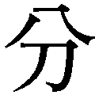
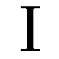
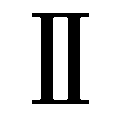
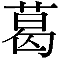
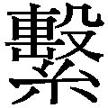

| すべらない敬語（新潮新書） | |
| 梶原 しげる | |
| 新潮社 (2007) | |
この作品の全部あるいは一部を無断で複製・転載・配信・送信すること、内容を無断で改変・改竄することを禁止します。また、有償・無償にかかわらず第三者に譲渡することはできません。
すべらない敬語
梶原しげる
敬語が気になる。
誰もが一度はそう思った事があるはずです。それが他人の敬語か、自の敬語か、芸能人の敬語か、対象は人それぞれでしょうが。
ある日、憤慨する友人とあなたがこんな会話をしたとします。
「若い奴はひどいね。こないだなんか『マジ？』って聞き返されちゃったよ」
「テレビが悪いんだよ。でてくる若い連中は何食っても何見ても誰に対しても『スッゲー』の一言だもんな」
「キムタクなんか目上目下関係なくタメ口だしな」
と、悪口を言っていたあなたが、たまたま飛行機でキムタクこと木村拓哉さんと隣り合わせたとしましょう（もちろんあり得ないでしょうが、想像してみてください）。そして、あなたの腕時計を見て、彼が独り言のように「うわっ、スッゲ、マジ？ その時計いいなあ」と言ったとしましょう（もっとあり得ないでしょうが、我慢して読んでください）。その時にあなたは、
「君、初対面で見ず知らずの、しかも年長者に失礼じゃないか。素敵な時計をしていらっしゃいますね、くらい言えないのか」
と言い返せるでしょうか。意外と「そ、そうですか？ ありがとうございます」なんて言って、飛行機を降りたとたん、あちこちで左腕を振り回しながら「これ、キムタクに褒められた時計」と自慢して回るのではないでしょうか。
少なくとも私にはそうしないと断言する自信はありません。
そもそもテレビを仔細に見ればかるように、木村さんは決して敬語を使えない人ではありません。木村さんに限らず、ジャニーズの人気者、ＳＭＡＰの中居正広さんも、ＴＯＫＩＯの国太一さんも実は敬語の達人かもしれないのです。目上と同席した時の彼らのタメ口は、主として、相手への感動やリスペクト（尊重の気持ち）を叫んだりつぶやいたりする場面で使用されています。
「それマジ？」「ゲー」「（ま）ったくー」「ありえねえー」「ヤベー」「ウッソ」「イタッ」「いいなぁ」等々、ぞんざいな物言いは実はほとんど自への問いかけです。
それが証拠に、相手に向けた言葉は「すいません。それって、○○なんですか？」と意外にも丁寧語をしっかりと使っていることが多いはずです。場を和ませながら、目上のゲストにはしっかりと気遣いを忘れていません。
もちろんそこには、彼らが国民的人気者であるがゆえに、話す相手もいきなりの初対面とは違う「あらかじめの親しみ」を持ってくれているという強みもあるはずです。これは彼らに限りません。一見、無軌道、傍若無人に見える若手芸人達も、実は上下関係には敏感で、「目上、目下」で巧みに言葉遣いを変えています。逆にいえば、こういう関係への感度がある人が生き残っているようです。
このように見てくると、人気者の条件の一つとして、上下、親疎を使いける話術を活用できるということが挙げられるように思えます。彼らは必ずしも「正しい敬語」の使い手ではなくても、広い意味での「敬語の達人」であるという仮説がちらほら見えてきませんか。
世に敬語本、敬語教室の類は多いのですが、どうも「正しい敬語とは」ということだけを学んでも、世の中でうまくやっていけるとは限らないのです。現にキムタクよりも丁寧な敬語を使うのに、ムカつく奴はいくらでもいるではないですか。
私たちにとって役に立つ敬語の使い方とは何か。
それは決して子定規な「正しい敬語」を身に付けることではありません。世にれる「敬語マニュアル」を真面目にマスターすればするほど、「正しい敬語」の奴隷になってしまうおそれがあります。
私たちに必要なことは敬語を正しく使いこなす知恵、時にはあえて使わない知恵を身に付けることなのです。敬語を武器にする知恵とでも言えばいいでしょうか。もちろん、いくら有効だからといっていつも武器を振り回していると危ない人だと思われます。「すべって」しまうわけです。
名刀を時に応じて使い、普段はに収めている。本書がそんな敬語の使い手になるための一助となれば幸いです。
目次
敬語漬けの日本人 五でわかる「敬語の指針」 謙譲語が裂した 丁寧語と美化語
敬語で痛い目 指針の歴史 答申の登場 驚きの新方針
二重敬語が解禁 お次のお方 「お」の乱発 お受験問題 犬にえさを「あげる」 とんでも問題 休暇をいただく 最大の争点 チャンピオンの入場 申される
自己責任論 場を作る力 ホステス版「口のきき方」 暴力よりも強し 暴漢と傍観 差別との関係
帰国子女の悩み 好感度のスタイル ポライトネス 英語の敬語 英語式と日本語式 韓国語は長幼の序 中国語の場合 コードスイッチ 方言は強い 悪用も可能
久米さんの独り言 みのさんのタメ口 小倉さんの使いけ 女子アナテクニシャンナンバーワン
改めて思う小泉首相のすごさ 棒読み大臣 東国原知事の方言力 タメ語の麻生 石原都知事の変貌
こちらのほう 椿山荘のホスピタリティー 摩滅の法則 させていただきます 遠慮を押し付けるな 傲慢語
ネットでもタメ語は不評 タメ語の学問的使用法 タメ語の名人 「くん」付けの効用 目上から目下への敬語の魅力
お疲れ問題 身格差の消滅 お疲れでーす ちゃん付けの起源
フリーターは素敵だ 童話作家はもてる ヨメと呼んで 主人は偉いのか 団体へのさん付け 「方々」は敬称か 僕って何
他人のネクタイに言及すべきか 褒める秘訣 謝る敬語 絶品の謝罪文 誠意の敬語
敬語漬けの日本人
大人が家を一歩出たら、話したり聞いたりする言葉の九割以上は「敬語」です。
だと思ったら、自のしゃべりをイメージしてみてください。
朝一番出社した若いあなたが「お早う」では偉そうに聞こえてしまいます。
「お早うございます」（丁寧語）
「お早うっす」（広い意味で丁寧語）
軽い雑談も「今日は道が混んでいたな」ではなく、「混んでましたね」と言えば丁寧語になります。
「おい、茶飲むか」などと言うＯＬは多いないでしょうから、「お茶お入れしましょうか」（美化語＋謙譲語）
かかってきた電話にも「山田部長？ いないよ」とは出ずに「はい、山田部長は休みを頂いております」（謙譲語＋謙譲語〔丁重語〕＋丁寧語）
「課長！ 社長戻った？」はよほど立場が上の人でなくては使えない言い方でしょう。普通は「鈴木課長。お忙しいところ恐縮ですが、社長はお戻りですか？」（尊敬語＋丁寧語）となるはずです。
退社後、敬語ストレスから解放されたくて飛び込みで入った飲食店。目玉が飛び出るほどの請求額についつい「ふざけんじゃねーよ」と慣れない乱暴な口を利いたのがいけなかったのか。何となくアウトローな感じの店員が奥から出てきて丁重にこう言います。
「お客様。当店の会計に何か御異論がおありでしたら、お手数ですがちょっと店の裏までお越しいただけませんでしょうか」（怖いけどそれとは関係なく、尊敬語＋謙譲語＋丁寧語）
ほぼ完璧な敬語と共に、ボコボコにされてしまうわけです。
さて、ここまでお読みになった方の中で「謙譲語にだのだの、〔丁重語〕だのがついているのはナンなのだ？」と気になっている方もいらっしゃるでしょう。いや、ほとんどの方が気になるはずです。
実はこれは、二〇〇七年二月に、国の文化審議会が出した最新の「敬語の指針」（以下、「指針」と記す）における類を元に記しています。これまでならば「敬語にはどんなものがあるか」という問いに対して、「尊敬語、謙譲語、丁寧語の三つです」と答えれば正解でした。ところがこの「指針」では敬語をさらに細化し、尊敬語、謙譲語、謙譲語〔丁重語〕、丁寧語、美化語、の五種類にけて説明しています。
相当な方向転換というか、革命的変化です。「小泉政権下で国民が知らないうちに、大変な事態が進んでいる！」と叫んでいた野党の皆さんもまったく知らない構造改革が敬語界において進んでしまっていたのです。革命がおおげさというならば、「敬語」の時代が到来した！ と言ってもいいでしょう（これもおおげさですが）。
五分でわかる「敬語の指針」
国民のほとんどが知らぬ間に進んでいた敬語界の構造改革、その内容を覗いてみましょう。ちなみに指針は、秘密文書でも何でもありません。文化庁のホームページから簡単にダウンロードも出来ますので、興味のある方は是非お読みください。かなり面白く読める部もありますのでお勧めします。ただし、そうはいってもお役所の文章です。いささかとっつきが悪い部もあります。そこで、まず本書ではごく簡単に、そのエッセンスを抜き出して解説いたします。
五種類に類された各敬語について見ていきましょう。
まず「尊敬語」です。これは旧来からの定義と変わっていません。指針では、「いらっしゃる・おっしゃる」型として、「相手側又は第三者の行為・ものごと・状態などについて、その人物を立てて述べるもの」と定義しています。「立てる」とは、尊敬すべき人物を、言葉の上で高く位置づけて述べること、としています。「顔を立てる」なんて言い方もありますが、ここでいう「立てる」は「一段高いものとしてたっとぶ」（『広辞苑』）と考えると理解しやすいでしょう。「その人物を心から敬って述べる場合」や、「その人物に一定の距離を置いて述べようとする場合」に、その人物を「立てる表現」を「尊敬語という」。尊敬語は、一口で言えばこれだけの事です。
そして該当語例（このへんが「とっつきが悪い」と感じられるゆえんの言葉遣い）として、次のようなものをあげています。
行為等（動詞、及び動作性の名詞）......「いらっしゃる」「おっしゃる」「召し上がる」「お導き」「御出席」他。
ものごと等（名詞）......「お名前」「御住所」他。
状態等（形容詞など）......「お忙しい」「御立派」。
いちいち「等」がついているのは、お役人が「それ以外にこれもあるぞ」という投書が来るのを恐れての事、程度に考えればいいでしょう。要するに「指針」では「尊敬語」の定義については目新しいところはありません。これまで通りの理解でＯＫです。
謙譲語が分裂した
新しくなった第一点は「謙譲語」が「謙譲語」と「謙譲語〔丁重語〕」にけられたことです。「謙譲語」は「伺う・申し上げる」型として、「自側から相手側又は第三者に向かう行為・ものごとなどについて、その向かう先の人物を立てて述べるもの」と定義しています（「向かう先」とは敬意のベクトルを表し「立てる」とともに、今回の指針でしばしば登場するキーワードです）。具体的には「伺う」「申し上げる」「お目にかかる」「差し上げる」が挙げられており、これは旧来の「謙譲語」のイメージと同じだと思います。
一方で、新機軸なのが「謙譲語〔丁重語〕」です。これは「参る・申す」型とされており、「自側の行為・ものごとなどを、話や文章の相手に対して丁重に述べるもの」と定義されています。具体例は「参る」「申す」「いたす」「おる」「拙著」「小社」。
たとえば「私は明日から海外に参ります」という言い方、丁寧な感じはするものの、冷静に考えてみると、どこに敬意を払っているのかよくわからないはずです。「私は明日、ご自宅に伺います」（謙譲語）は、敬意の向かう先、この場合は話す相手を立てて敬意を払っているわけです。
ところが行く先が「海外」となった場合、出かけるのは自ですから、自を敬意の向かう先として立てる必要など全くありません。「私は明日から海外に行きます」でも失礼ではないのですが、「参ります」を使うことのほうが話の聴き手に丁重で丁寧な印象を与えるのも事実です。指針では、「行きます」と「参ります」の意味するところは同じであっても、「参る」という言葉を使うことで、「自の行為を、話や文章の相手に対して改まった述べ方で述べることになり、これが、丁重さをもたらすことになる。このように、『参る』は〈相手〉に対する敬語として働く」としています。そして、この種の敬語は以前は「謙譲語」としてひとくくりにされていたが、今後は「謙譲語〔丁重語〕」と呼ぶ、としています（本書では以下は基本的に「謙譲語」とのみ記します）。
との違いとしては、こんな例も挙げられています。先生に対して「明日、先生のところに伺います」と話すのは「謙譲語」です。「先生」という自よりも上の人を立てているからです。
一方、先生に対して「先生、明日、私は弟のところに参ります」というのは「謙譲語」です。「弟のところに伺います」は身内である「弟」を立てることになるので間違いですが、「参る」ならば弟を立てる働きはなく、先生に改まった言い方をしているだけですから、謙譲語として正しい、ということになります。つまりこの場合、立てているのは「弟」ではなく、話をしている目の前の相手。「先生」だからです。
正確に言えば「自側の行為」にはあたらないのですが、同様に、「部長、バスが参りました」というのも謙譲語だとされています。考えてみれば勝手にバスをへりくだらせる権限など、誰にあるわけもなく、バスだって気を悪くしてもおかしくありません。あくまでも「目上」に対し丁重に改まって伝えるために「参る」を使っているわけです。
謙譲語と謙譲語については別に項目を設けて、ご説明をいたしますが、「参る」「申す」「いたす」「おる」が出てきたら「謙譲語なんだな」と、自動的に理解してしまっても、大した損害は被らないでしょう。
もっと乱暴に私見を申せば、「参る」「申す」「いたす」「おる」は「謙譲語系」から独立させて、「丁寧語系ちょっと改まり部門」くらいに移し替えてしまえば良かったのにとさえ、考えております。
丁寧語と美化語
続いて「丁寧語」です。これは「です・ます」型とされていて、「話や文章の相手に対して丁寧に述べるもの」と定義されています。具体例も「です」「ます」のみが挙げられているだけですが、これで十わかるだろう、ということでしょう。これに、さらに丁寧度が高いものとして「ございます」を加えれば完璧です。
最後の「美化語」というのもちょっと目新しい感じかもしれません。これは「お酒・お料理」型とされていて、「ものごとを、美化して述べるもの」と定義されています。具体例は「お酒」「お料理」。
尊敬語のところにあった「お導き」「御住所」というのは、「行為者（たとえば自を導いてくれる人）」や「所有者（そこにお住まいの人）」を立てるのに対して、美化語の「お」はそれとは異なり、話す相手や、話題の物や人物を立てようなどというけなげな気持ちとは無関係という考え方が基になっています。
たとえば「先生がご自で醸造されただけあって、このお酒はおいしいですね」というのならば、個人で醸造することの是非はさておき、酒の所有者は「先生」ですから尊敬語になるのかもしれません。しかし、「お酒」という言葉は通常は「先生は、お酒を召し上がるのですか」というように使われます。この場合、「先生の飲む酒」という意味で尊敬を込めれば「お酒」の「お」を尊敬語、と見る事が出来ます。しかし、大学のゼミ生が「先生、お酒飲みに行きます？」と言う場合は、先生の飲む酒への尊敬、というより「酒」と呼び捨てにするのはいささか下品な物言いで、自自身の品性に関わる、と思って「お酒」と「お」をつけたりします。これぞ、まさしく「美化語」なのです。
以上、ごく簡単にですが「指針」で実行された「敬語革命」の主なところをまとめてみました。
「そんな類、学者には役立つかもしれないけれど、実生活で何になるって言うの」
こんな声が聞こえてきそうです。国家権力側に与するつもりはありませんが、こうした素朴な声、疑問についても指針ではかなり細かく答えてくれています。その中の面白いところは本書でも折に触れてご紹介して参ります。しかし、それだけで片付くほど敬語の問題が簡単ではないのも確かです。
本書では、「指針」を肴に、いや参考にしながら「敬語」とは何かを考えていきます。といっても、私は国語学者でも言語学者でもありません。ただひたすら現場で「しゃべり続けてきた男」です。ですから出来る限り、今の社会での出来事に即して考えてみたいのです。
ではなぜ国は敬語について、いちいち指針なんて出すのか。そんなお節介を焼くのか。そのあたりから見ていきましょう。
敬語で痛い目
ダウンタウンの「リンカーン」というバラエティー番組で「敬意表現」を逆手に取った面白い企画がありました。
今やベテラン芸人となった松本さんと浜田さんが、後輩芸人と同じ車に乗り、遊びに出かけます。このロケの最中、後輩芸人たちは一つだけ守らなくてはいけないルールがあります。それは「ダウンタウンに対して、タメ語を使わなくてはいけない」というものです。タメ語、というのはタメ口で利く言葉、固く言えば「非敬語」のことです。
ここでのポイントは、後輩芸人が、普段は敬語で接している二人に対する敬語を一切禁止される事から来る、ギクシャクした会話です。日ごろから尊敬する大先輩に、タメ語を使うのは意外と難しいもののようです。びくびくしながらも「お、お、おい、ま、松本。お前最近評判悪いぞ」と、脂汗たらたらでタメ語で話しかけます。
松本さんの「ん？」という表情を見ただけで思わず「あ、失礼いたしました」と敬語を使ってしまい、いきなり罰ゲームで痛い目にあわされます。
中にはここぞとばかりにタメ語を使っているうちに、態度そのものが尊大になり、時々素に戻るダウンタウンに「ええかげんにせえ」とドツカれる若手もいます。結局最後には「しゃべる立ち位置」がからなくなってしまい、言葉が出なくなってしまう後輩芸人の様子がなんともおかしいのです。
適切な敬語を禁じられると、人は身動きが取れなくなるといういい例です。
敬語は必要なのは重々わかるのだけれど、現実に使う上で困難を感じている人が国民の過半数だという事が、最新の国の調査（文化庁）でも明らかになっています。
そこで国は、敬語に戸惑い悩む国民を何とか救おうと、これまでにも「敬語に関する指針」を示してきました。「指針」はその最新版ということです。
指針の歴史
戦後間も無い時期、いまから五〇年以上前に出されたのが「これからの敬語」という名前で呼ばれる「画期的」な内容の指針でした。日本国中がまだ貧しく、どこか殺伐とした雰囲気も残っていた時代。
「敬語？ はあ？」という声もあったであろう中、「戦後民主主義にふさわしい敬語のあり方を示そう」と国語学者の金田一京助先生を中心に審議会が設けられました。
戦前の身にとらわれた時代の煩雑な上下関係に配慮を強いられ続けた国民を一気に解放しようと、新時代の敬語は「平明、簡素を旨とする」の精神に満ちれたものでした。時代の空気としては「いっそ敬語なんかやめちゃえ。いや、日本語なんかやめて英語にしちゃってもいいぐらいのもんだ」という過激な論者も存在していたようです。
「これからの敬語」は、乱暴に言えば、一人称は「私」、二人称は「あなた」、尊敬語は語尾を「れる、られる」にする程度に収め、あとは「です、ます」の丁寧語で十だ、程度に平明で簡素を志向していました。
答申の登場
ところが、混乱の時代が収まり、人間関係も高度に複雑化するにつれ、現実社会では、「ここはやはり相手を持ち上げてもっと商品を買ってもらおう」「へりくだって、相手が緩んだ隙に乗っ取りだ」とでもいう事なのか、ビジネスの世界を中心に、敬語は勝手にドンドン増殖し複雑化していきました。
「伺わさせていただきます」「千円からのお預かりになります」「お名前様いただいてよろしかったでしょうか」等々。こんな「正しいような、丁寧なような、でも何だかおかしいような......」という感じの敬語まがい、敬語もどきが次々に登場し、言葉にうるさい人々から不興を買うようにもなってきました。
そこで、指針が示した「平明、簡素」の逆をいく、「過剰敬語」の炎をなんとか鎮めようとの長年にわたる国の方針の総決算となる事を期待されたのが、二〇〇〇年に出された「現代社会における敬意表現」というタイトルの答申でした。
新入社員が社会人デビューを果たす際、その第一歩として大抵「言葉の使い方」を仕込まれるのですが、その中心は敬語でした。しかし、その敬語が「過剰」で「複雑化」した現状で、重箱の隅をつつくような敬語学習を強いるのは気の毒だ、という考えが答申の背景にはあったように思われます。
円滑な社会生活を送るためには、尊敬語、謙譲語、丁寧語という三つのいずれかに類される厳密な「敬語」以外にも様々な礼儀、知恵が必要になります。たとえば自を「僕」と名乗るべきか、「私」と名乗るべきかという自称問題。話しかける前に「恐れ入りますが」とお辞儀をしながら一言発する振る舞いや、声の出し方、スピード、顔の表情、物腰など、非言語的なものまで、数え上げればきりがありません。こうした敬う態度全般の表現方法「気配り作法」まで含めたものを「敬意表現」として認めていこうよ、というのが当時の答申の主張でした。「敬意」を非常に大きく緩やかに捉えた考え方が用いられたという印象です。
ここには単に「正しい日本語」を追求するのではなく、もっと実際に人が言葉を使うときのことも考慮に入れられていました。
たとえば「やあ、忙しいところすまないね」の一言を会話の前に振る事、「いやいやこちらこそ」と謙することなど、「気遣い」「配慮」の幅広い表現を含むものでした。極端に言えば、「これ、ほら、どう？」という、敬語が一言も使われていない会話でも、それを伝える時の「敬う気持ち」「心」が仕草や表情に表れていれば、「敬意表現」と捉え、「敬語」と同格の存在として考えてしまおう、「敬語」は「敬意を表す表現の一部に過ぎない」という「画期的」な考え方です。「厳密な正しい敬語論」のようなものに惑わされてはいけませんよ、と「これからの敬語」の「平明、簡素」をさらに推し進めたものともいえましょう。「厳密な敬語論」に悩まされ続けてきた一般人、特に新入社員にはありがたい「答申」であったと思われたのですが、敬語業界では不評だったようです。「規範を示すべき国家が、そんなに迎合してどうする！」と、「正しい日本語」を遵守したい人たちの神経を逆なでしたのでしょう。
驚きの新方針
それからたった六年で出されたのが今回の「指針」です。戦後第一弾の「指針」は第二弾まで約五〇年「持ちこたえた」のに、二〇〇〇年版の「答申」は、たった六年余りでお役御免となってしまったのです。ここには、素人にはうかがい知れない、「敬語業界の藤」があったものと推察します。答申の後、「敬意表現や待遇表現と敬語はきっちり峻別されるべきだ」「敬語は関係性だ」「いや距離だ」「そもそも国が言葉に介入すべきか」等々、まあ百家争鳴の議論があったのでしょう。結局、敬語業界の混乱を今一度整理する必要からか、異例の速さで第三弾とも言うべき、今回の「指針」が登場するのです。このようないきさつから生まれた「敬語の指針」は驚くべき内容でした。
「平明、簡素」の伝統を踏まえているとはいうものの、敬語の類をこれまでの「尊敬」「謙譲」「丁寧」の三類を改め、五類に増やしてしまったのですから。
かつては「三つでも複雑だから、丁寧一つでもいいんじゃない？」くらいの勢いがあったのです。ところが今度は五つに増えています。「そのほうが平明、簡素」という話を鵜呑みにしていた立場からすると、「そのほうが合理的で理解を得やすい」と強弁されても、ぱっと見はいかにも複雑化させたという印象です。
この「指針」については、取りまとめの中心となった、独立行政法人国立国語研究所の杉戸清樹所長に直接伺ったお話もまじえて後ほどわかりやすく説明します。
もちろん、国が敬語を類したからといって、急に私たちの言葉が変わるわけではありません。また、従わないからといって、敬語警察に引っ張られる、というようなこともありません。
それでもこの影響はじわじわと効いてくる可能性はあります。というのも、この「指針」に従おうとすれば、これまで出版された多くの敬語本や、あちこちで開かれた敬語セミナーの多くは陳腐化する恐れがあるからです。敬語業界は大変なことになるのです。だからこそ「敬語革命」なのです。
ここまでのところで、「〝敬語業界〟って何だ？」と思われるかたもいらっしゃるかもしれませんが、世の中に「敬語」のビジネスというのは思った以上にあります。それだけ敬語は大人の必須アイテムということなのでしょう。
書店には、就職活動中の学生や新入社員、人間関係が何より大事な営業マンたち向けに、多くの「敬語本」が並んでいます。敬語本は「敬語がしゃべれないと、一人前の社会人とはいえませんよ。馬鹿にされますよ。その前に、就職試験の面接で落とされますよ」と脅しをかけるやり方で「敬語学習の必要性」を訴えています。
「恥をかかない！」「馬鹿にされない！」「仕事が出来る人のために！」「ほんものの！」「ちゃんとした！」「60ですぐに身につく！」「ゼロからの！」「最低限の！」「馬鹿でもすらすら！」等々、「読めば直ちに、敬語地獄から救われますよ」と敬語弱者に訴えかけるキャッチコピーが続々目に飛び込んできます。ネット書店のアマゾンで「敬語」と叩いて検索すれば、三〇〇件を超える書名が並びます。
これらを逆読みすれば、敬語がしゃべれないと「恥をかき、馬鹿にされ、仕事が出来ない人と言われる」ので、何とか「ほんものの、ちゃんとした」敬語をしゃべりたい、かといって敬語の素養は「ゼロ」だし、そもそも「馬鹿」だから「最低限」でもいいから出来れば「60で」身につけば......、と考えている人が多いということになります。
このような読者の切なる夢と希望を叶えんと、敬語業界の「敬語伝道師」の皆様方はそれぞれに自説を説かれているわけです。そこにいきなり国が大方針転換をしてきたわけですから大変です。しかもそれを審議したのは、作家の阿刀田高さん、日本テレビアナウンサーで報道局解説委員の井田由美さん、歌舞伎俳優の市川團十郎さん、その他もちろん一流大学の先生方や国立国語研究所所長の杉戸清樹さんまで、そうそうたるメンバー。業界の方々もおいそれと反旗は翻せません。
それでは今回、国が方針転換をしてきたことでどうなるか。次はそのあたりを探ってみましょう。
二重敬語が解禁
「お話しになっていらっしゃる」というような言い方は二重敬語だから間違いだ、と厳しく非難する敬語本があります。二重敬語とは、一つの語について、同種の敬語化を二重に行ったもので、「お話しになっていらっしゃる」のように、尊敬語「お話しになる」に、さらに尊敬語の「いらっしゃる」を重ねた言い方だ、というのです。
なるほど、「お話しになる」で十ですから「お話しになっていらっしゃる」は二重敬語の気味があります。私は高い敬意を求められる場面ではためらわずに使っていました。ところが、別の本を読むと「全くもって問題なし」と背中を押してくれる本も、しっかりあります。
その根拠としては「お話しになる」と「いらっしゃる」は二つの、別々の敬意表現が、隣り合わせになっているだけで、重なっているわけではないから「二重で間違い」とはならないという考え方です。
結局、どちらが正しいのか。真面目な人ほど悩むことでしょう。
要するに、いろんな人がいろんな事を言い張り、己の正当性を訴えたり、相手の誤りをあげつらったり、しかもその根拠さえ、あやふやなまま、勝手に決めつけ、「こうしろ、ああしろ」と迷える子羊をさらに迷わせてしまっているのが敬語業界の実情でした。
勝手に忖度すれば、そんな混乱を解消したい、というのが「指針」の目的の一つだったようです。「指針」も、「よりどころのよりどころを示しているに過ぎない」と、みずから相当、遠慮した立場をとっていますが、敬語には、しばしば「どちらともいえない」ケースが出てきます。「絶対と言い切る本は信用するな」の精神で、おおらかに臨むべき世界である事を前提に学んで行きましょう。
お次のお方
敬語本に目を通していくと「過剰敬語はやめましょう」というアドバイスが目立ちます。確かに敬語は、かつては十に敬意を表せていたはずなのに、使いこむうち、敬意が十で無いように感じられるという習性があります。
「次の方」よりは「お次のお方」？ いや、「お次のお客様」かな？
この罠にはまると、どんどん屋上屋を架して、結果的に慇懃無礼さが目立ったり意味が通らなくなったりという副作用を招く事があるから要注意です。とはいえ、過剰敬語を指摘する例文そのものが頓珍漢なものもそこここに見受けられるのは残念なことです。
たとえば「お買いして参りました」は駄目だ、と指摘している本があります。しかし、そもそもこれは例文としてあまり適切ではありません。例文には、多くの人が間違えるかもしれないものをもってくるべきです。こんな風に間違える人はまずいません。
その本では「お」～「する」の謙譲語（指針では）に「参る」という謙譲語（指針では）を重ねるのは二重で過剰と、解説していました。それ自体は、まあいいとして、その修正例として「買ってまいりました」と「お買いしてきました」の二つを正解としているのも納得いきません。前者はともかく後者は明らかにヘンです。
「お召し上がりになりますか」というのも少々気取った言い方ではありますが、さほどの違和感がもたれなくなっています。これについても「『召し上がる』という尊敬語に、『お』～『なる』で、もう一つ尊敬語を重ねているから誤りだ」と決め付ける本もありました。これも狭量に過ぎる気がします。
このあたりは、私の行ったアンケート調査でも「違和感を持つ表現」としてあげる人はほぼゼロでした。いまや「許容範囲」と言わざるを得ないでしょう。
他にも敬語本では、「その件でしたら存じ上げております」という言い方について、「『件』という『物』に『上げる』はつけてはならない」と厳しく戒め、「存じております」でなければ×と決め付けています。これもいささか狭量です。
「お」の乱発
ことほど左様にうるさい敬語業界。たった一文字の解釈でも意見がかれています。
「お」にまつわる問題です。多くの敬語本では「おビール」「おジュース」と外来語に「お」をつけるのは非常識だとしています。文化庁の調査でも多くの人が「抵抗がある」とその使用は避けるべきだと答えています。
その一方で、ビールやジュースは十日本に馴染んだ成熟した言葉。それに「お」をつけ、お持ちしますとすれば、「おビール」「おジュース」は立派な謙譲表現だ、問題なし、と言い切る本も少数派ながらあります。
この問題について、「指針」では先にも触れたとおり、美化語という概念で説明をしています。「おビール」「おジュース」の「お」はそもそも誰の持ち物でもなく、たまたま自が運んできたビール、ジュースにつけているので、運んでいる自の語り口を上品に見せる「美化語」と解釈すべきである、ということです。これはこれでわかるのですが、じゃあ、同じ飲み物でも「ジン」に「お」をつけた「おジン」は美化語でＯＫなのか？ 「ウォッカ」は「おウォッカ」になるけど、発音しにくくないか？ などと様々な問題が予想されます。
というわけでかなりややこしい「お」問題。敬語本で「自のことに『お』や『御』をつけてはいけないと習った気がする」と承知しつつも、何となくノリで「お」を付けてしまう、という方もいらっしゃるでしょう。そして世間もそれをある程度は許容しているから「美化語」と解釈して、広い意味での敬語に含む、と「指針」は示したのでしょう。「指針」は以下のように述べています。
「自の動作やものごとでも、それが〈向かう先〉を立てる場合であれば、謙譲語として、『（先生を）お待ちする。』『（山田さんに）御説明をしたい。』など、『お』や『御』を付けることには全く問題がない。（中略）「お」や「御」を自のことに付けてはいけないのは、例えば、『私のお考え』『私の御旅行』など、自側の動作やものごとを立ててしまう場合である。この場合は、結果として、自側に尊敬語を用いてしまう誤用となる」
拙著『口のきき方』で、主に若い女性が浪費の言い訳に「自へのご褒美」という言葉を頻繁に使うことを「耳障り」と私は指摘しました。この表現が、不自然に感じられる理由が、「指針」の説明で、より明確に理解できます。すなわち「ご褒美」の「ご」が、ここでは自側の行為や物事を立ててしまう間違った使用法、誤用であると指針は明確に教えてくれているのです。
これとは別に、「お手紙」は、自が書いたものであってもあて先が上位の先生であれば「お手紙」でＯＫだし、立てるべき人に向かったものであれば「御無礼を」と、自の行為に「御」でこれまたＯＫということです。なぜ「おビール」が許されるかといえば、「お手紙」と同じ理屈だと考えればよいわけです。ですから、「おビールをどうぞ」は現在の日本では「敬語」として認められ、「私はおビールをいただきます」は誤用とされる、ということになります。
お受験問題
「指針」のとりまとめの中心となった国立国語研究所所長の杉戸清樹さんに対談でお目にかかる機会があり、その際の雑談として「娘がお受験でして」という風に使われる「お受験」の「お」について伺いました。これは正しいのかどうか、尊敬語か美化語か。
杉戸さんは「うーん。なかなか微妙ですね」と、少々考え込み「昔なら尊敬語でしたが、いまでは、『おにぎり』『おてんば』のように、『お』を切り離せない『お受験』という一つの言葉、美化語としてみるべきでしょうね」と答えて下さいました。
私もその考えに賛成です。一昔前ならば話は簡単で、「お嬢様はそろそろお受験ですか？」というときには「お」は尊敬語と考えればよかったのです。しかし、今日では「お受験」は一般的な「受験」とは違い、幼稚園小学校の「私立の名門校を受験する事」に限られています。受験する本人や家族の自尊心を満たす、新しい表現と見ることもできます。よって「自らの行為を美化するための、自己表現としての美化語と考えられる」というのが、「指針」に沿った解釈のようです。
「自己表現としての美化語」は、今後ますます増殖していく予感がします。女性誌を見れば「お取り寄せ」「お持たせ」「お取り置き」「おあつらえもの」「お呼ばれ」など、もともとクラシカルな表現に「お」をつけて、グレード感を付けよう、セレブ感を醸し出そうという意図が強く感じられます。杉戸さんは、
「美化語は雑誌であれ、個人であれ、自の言葉をどう仕立てたいのか、どう演出したいのかという、自自身に向かった言葉遣いの配慮から来るものだと思います。それによってビジネスの場では購買意欲を誘うこともあるでしょうが、それも言葉の持つ力なのだと、そういうふうにドライに考えることもできると思います」
とお話しして下さいました。「敬語の力」「敬語の効用」の一端を見事に言い当てている話であると思いました。
かように「お」「御」問題には奥深いものがあります。そして「お」「御」を美化語とするかしないかには、相当な個人差がある事も事実のようです。美化語そのものの存在を否定している本も存在します。「お」「御」はすべて尊敬語だというのがその主張です。
「客を接待で、お触りバーに連れて行く」などという、よくある（よくは無いか）場面で使われる「接待」には普通「お」や「御」はつけません。接待をするのは自だからです。ところが、四国札所めぐりの地元では巡礼者をもてなす無償の行為を「お接待」と呼びます。巷の飲食接待とはまるで違う、高貴な行いについて表現する言葉として定着しているのです。この「お接待」の「お」を尊敬語と捉えるか、「接待申し上げる」という接待を受ける行者を立てる謙譲語とするか、それとも美化語と捉えるのか、これまたまじめに考えれば悩ましいところでしょう。
ついでに「お触りバー」の「お」についても考えてみます。あまり美しくない行為だからこそあえて美化語にした、触られる女性への尊敬の念を込めてみた、というのは屁理屈の類。おそらくこの場合の「お」は茶化すニュアンスが込められた表現と考えるべきでしょう。「お忍びでハワイ旅行」の「お忍び」も同種と考えられます。本来、高貴な人の外出について使われるべき言葉が、いつの間にか芸能人などに対して茶化すニュアンスで使われるようになったのです。名詞化した動詞に「お」をつけると、少々意味合いが変わってくるという点では「お笑い」などと筋は一緒ではないかと思います。
「指針」以降、美化語問題は「敬語業界」では今後ますます活発な論議が戦わされそうな野です。是非御注目下さい。
犬にえさを「あげる」
「指針」は全体として、「敬語表現」について、これまで以上にストライクゾーンを広げている印象です。敬語本の多くが、目くじらを立てて「誤用だ」「恥ずかしい」「許されない」と指摘しているものについて「それもありです」とおおらかに構えています。一般に「敬語本」は、あれも駄目これも駄目と「誤用」をあげつらい「そんな事では恥をかく」と脅かします。前述したように「自の動作や物に『お』『御』をつけてはならない」と一刀両断に切り捨てる類がいまだに店頭に並んでいたりするから要注意です。
たとえば皆さん、「植木に水をあげる」「犬にえさをあげる」という表現をどう思いますか？ おそらく年配者では「気になる」派が「気にならない」派を上回るのではないかと推測されます。
なぜなら、「あげる」は謙譲語です。人間が植木や、犬ごときにへりくだってどうする、高めてどうする、「植木に水をやる」「犬にえさをやる」と、非敬語で話すのが正しい、というような論調がこれまでの敬語本の主流でした。ということは言葉にうるさい人はこういう考え方だったのです。
しかし、文化庁の「国語に関する世論調査」（平成一八年）の結果を見ると、若い世代は「あげる」に抵抗を示さない人が多くなっています。むしろ「やる」に「ぞんざいさ」を感じる人たちも少なくありません。犬好きで知られる女優の川島なお美さんに「お宅の犬にえさをやってもいいですか？」などと言おうものなら、完璧にキレるでしょう。
「うちのワンちゃんに、えさをやる、などというお下品な言い方はおやめになって！ ご飯を召し上がりますか？ くらいはお常識じゃなくって？」
かように、感じ方は、時代や、人によって様々です。こうなると「あげる」はもはや謙譲語というより美化語に向かって動き始めているので許容しましょう、というのが「指針」の考え方です。
とんでも問題
では、上司から「いい仕事したね」と褒められた時、「とんでもございません」と言った部下の言葉遣いは正しいか？ ○か×か？
これは良くテレビのクイズで出題されますし、社内研修でも「敬語の勘違い」の例としてしばしば引き合いにだされる例です。
これまででしたら正解は×でした。
「とんでもない」は「とんでもない」全体で一つの形容詞。それを、「とんでも」と「ない」をぶった切って、「ない」を丁寧語の「ございます」の否定形「ございません」にするなど、それこそとんでもない、正解は「とんでもないことでございます」だ......とここまでの論はどこかでお聞きになった事があるかもしれません。
「『とんでもございません』はとんでもない！」と厳しく指摘している敬語本も売られているほどです。
しかし、「指針」では「とんでもございません」を正解としています。これまでの「正しい敬語」を信じていた人からすれば、信じられない国の方針転換です。裏切りです。
「指針」では、「とんでもございません」容認の理由として次の二点を挙げています。
謙して、相手の褒めや賞賛を打ち消す、とんでもございません、はかなり広まっている。
「とんでもございません」が軽い謙を表すのに対し「とんでもないことでございます」はもっと強い否定になりニュアンスが異なってしまう。
大筋、この二点で「とんでもございません」を認めようとの考え方を示しています。
実はこの指針、個人的には非常にありがたかったのです。というのも拙著『そんな言い方ないだろう』で、指針とほぼ同じ趣旨で「私は、『とんでもございません』を使います」と述べたところ、各方面から「だから素人は困る」などと小言を言われて参った苦い過去があったからです。もちろん、「正しい敬語」とは異なることは承知でした。それでも生きた言葉としてならば「とんでもございません」でいいじゃないか、と思ったから書いたのですが、専門家には評判が悪かったのでした。
しかし「お国」の「指針」という事になれば、私のような浅学菲才が言うのと違って、従う人もいる一方で、さらに大反発してくる人たちも出てくることでしょう。
休暇をいただく
さて、もう一つ敬語関連でよく出る問題を。外部からの電話に対して、「岸田は休暇をいただいております」というのは正しいかどうか。実はこれはかなり意見のわかれるところです。
休みを取らせてくれたのは、岸田の所属する会社である。それに対して「いただく」ということは、すなわち今電話で話している自のウチ（内）を高める言い方である。したがって「ウチ」は高めない、という敬語のルールに違反した誤用だから、「休暇を取っております」と言うべきだ、という敬語本があります。
その一方で、問題は無いと主張する本もあります。「休暇をいただく」という表現には電話の相手を始めとする外部の方に迷惑をかけ、申し訳ない、という気持ちがこもっているのでこれもよし、というのです。
敬語本によってバラバラですから読者は迷ってしまいます。同じような場面でよく使われる表現「休ませていただく」「お休みさせていただく」の「させていただく」について「指針」作成のメンバーのお一人、東京大学の菊地康人教授は、「変わりゆく『させていただく』」（『月刊言語』一九九七年六月号）の中で「させていただきます」を「ウチ、ソト」の問題として捉えるのでなく、自の行為を低めて述べるだけの用法と見ています。すなわちこの用法は「謙譲語」だと考えれば間違いではない、ということです。
今回の「指針」のメンバーは総じて、表現の変化に柔軟に対応する姿勢が見られ、「あれもだめ、これもだめ」式の従来の「敬語本」とは一線を画しているようです。
最大の争点
さて、誤用問題で今後最大の争点となるのは「指針」にある、謙譲語の存在でしょう。前の章でも触れましたが、もう少し詳しく述べてみます。
これまで、謙譲語とは、話し手がへりくだる事で、話題の対象となる事物を高める、という説明が多くの敬語本でなされてきました。よく出題されるのは次のようなクイズです。
次の二つのうち、間違っているのはどちらでしょうか？
Ａ「これから御社に参るところです」
Ｂ「社長、そろそろ参りましょうか」
この場合、従来「誤用」とされていたのはＢでした。社長は自よりも上位の人ですから、謙譲語「参る」を使うということは、へりくだる事を強いることになる。だから、失礼だ、誤用である、正しくは「社長、そろそろいらっしゃいますか」というべきであるという解説が続きます。「上位のものを、『参る』で誘ってはいけない」という原則が敬語本ではもっともらしく語られています。
「あと五でタクシーが参りますので、御準備下さい」という言い方も、「タクシーを謙譲している表現で本来は誤りだ」などと指摘している本が数多くありました。「参る」「伺う」「申す」「申し上げる」も含め、謙譲語とは話題中の人物の上下関係を表すだけのものだという説も説得力を持って受け止められていました。
この理屈でいけば「電車が参りました」も、上司など上位の者が乗るものの場合は謙譲語の使用として正しいが、そうでない場合は「電車が参りました」は誤用となる。正しくは「電車が来ました」と丁寧語を使用すべきということになります。
ところが、「指針」ではこれまで鉄板だったはずのこういう解説が覆ってしまいました。謙譲語を二つにけたからです。そのため「参る」「申す」「いたす」「おる」は謙譲語ということになりました。謙譲語は、話題の対象が上位である、下位であるに関係なく、「話す相手に対しあらたまって伝えるための言葉」であり、話題になっている上位の事物を高めようなどというものでもない。誰が乗ろうと「電車が参りました」で、まったくもって構わない、問題無しとの立場をとっています。
このように、謙譲語を、謙譲語と謙譲語の二つにける事で、これまでいわれなき「誤用」の汚名に泣かされていた表現が日の目を見る事となりました。
「夜も更けて参りました」（来ました、の誤用ではない）
「世の中にはいろいろな考え方の人がおりますから」（いらっしゃいますから、の誤用ではない）
「孟子が申しますには」（おっしゃるには、の誤用ではない）
の「参る」「おる」「申す」も、当然ながら、話し手が聴き手に対して改まった言い方をする、謙譲語で、誤用ではない、ということになったのです。
チャンピオンの入場
私も、スポーツ実況で「さあ、いよいよチャンピオンが入場して参りました」と厳かに謳いあげたところ、「『参る』は謙譲語だ。お前なんかよりずっと偉大なチャンピオンをへりくだらせてどうする」と投書された事を思い出しました。確かにその指摘の時点では投書の主の言う通りで、これが学者の皆さんのお墨付きの正論でした。
もちろん、そういうことを知らなかったわけではありません。それでもその場のムードを盛り上げるための苦肉の策だったのです。たとえば「チャンピオンの入場でございます（敬意の高い丁寧語）」も変だし、「チャンピオンが入場していらっしゃいました（尊敬語）」もおかしい。うーん、ここは素直に「チャンピオンの入場です（普通の丁寧語）」でいいのかもしれないけど、リングアナウンサーみたいだしな......。いろいろ悩んだ末の選択でした。これも「参る」は謙譲語と解釈すれば堂々と使えるわけです。
この「指針」でほっとしたのは私だけではありません。おそらく全国各地のお役所の中にも同様の人たちがいるはずです。
役所の窓口に「御持参下さい」「お申し出下さい」などとあるのは、市民をバカにしている、という議論が一部にありました。「御～下さい」と、尊敬語の形にはなっているが、その一方で「参る」「申す」という謙譲語で、へりくだる事を役人に押し付けられるなどとんでもない、これこそ誤用だ、という意見があったのです。
「指針」では、この場合も「誤用には当たらない」としています。国語の番人、国立国語研究所の研究員は私の電話取材に対して、ずばり答えてくれました。要旨は次の通りです。
「『参る』『申す』の字に惑わされてはなりません。ここでは『謙譲』の意は全くないからです。『持参』『申し出』がそれぞれ、一つの行為を表す単語であると、素直に読み取るべきでしょう。敬語本の中には非難がましく書いているものもあるようですが、窓口の役人が横柄に感じられるとすれば、敬語の問題ではなく、その人間の態度を責めるべきです。言葉は、全体の文脈、流れで捉えるべきなのです」
申される
もともと謙譲語というのはややこしいようで、人によってずいぶん解釈が異なるものです。文化庁の「平成一六年度国語に関する世論調査」によれば、「ただいま会長が申されたことに賛成いたします」の「申される」という言い方について、次のように国論が二されています〔（ ）内は平成九年の調査結果〕。
正しいと思う人......四九・三％（五六・七％）
正しくないと思う人......三九・一％（三六・五％）
「武田さんはどちらにおられますか」の「おられる」という言い方については、
正しいと思う人......五八・三％（六四・四％）
正しくないと思う人......三〇・三％（三〇・〇％）
ご覧の様に、どちらも「正しい」とする人のほうが多い結果となっています。しかし、平成九年の調査データと比べると「正しい」と答えた数は減少しています。「申される」については特に四〇代以下では「正しくない」と答えた人のほうが多い結果となっています。「おられる」については、各世代とも容認する声が強いという結果です。
「申される」について敬語本では、「申す」という謙譲語（指針では謙譲語）に尊敬語の「れる」をげるのは矛盾を持った言い方で誤用、というものが多く見られます。ただし、『源氏物語』など、歴史的な文章にも数多く登場し、上記の調査結果でも、減少傾向にあるとはいえ、「正しい」という声が多いこともあり「認めるべきだ」という本もあります。
一方「おられる」も、敬語本では「おる」という謙譲語（指針では謙譲語）に尊敬語「れる」をげた矛盾する表現だから「誤用である」と断じるものもあります。しかし、「おる」という言葉が、特に関西方面では、謙譲語という認識でなく、一般的に「いる」という意味で使われる事があり、「いる」に、尊敬の「れる」がついた、ごく普通の尊敬表現と受け止める人達も少なくないという事で、「誤用とは言えない」「いらっしゃると同じ意味」と記している本もあります。文化庁の調査結果も、このような背景を反映しているのではないでしょうか。
国立国語研究所へも、この二つの表現についての質問が数多く電話で寄せられているそうです。そこで「正誤両方の考え方がある」と説明しても「どちらが正しいのか、白黒つけて欲しい」という声が多いのだそうです。しかし、このように、異なる考え方を許容しながら、自らの判断で選択する事が必要だ、という状態が、敬語に限らず、言葉の問題にはしばしば存在するのです。あえて個人的な意見を言えば、私は「申された」より「おっしゃった」を、「おられる」より「いらっしゃる」のほうがずっとスマートであると考え、使用しております。
自己責任論
国が敬語について何だか延々と議論してきたこと、そこで業界やそれに影響される人たちが右往左往していることはご理解いただけたかと思います。もちろん、その類に従って生きる必要はありませんし、ご自で使うときに「えーと、相手は取引先の部長のお嬢さん、ということは尊敬語か？ いやしかし四歳の子に尊敬語もないよな。かといってタメ口もまずいよな。よし、ここは丁寧語で！」などと考える人もいないでしょう。
かといって、面倒臭いから敬語なんて止めてしまえ、というのも乱暴な話です。実際、今でも国民の多くは敬語に必要を感じているようです。
では、なぜ敬語は必要なのでしょうか。もしも反抗期の息子に「敬語なんて使いたくない。少なくとも俺は親父を尊敬していない。だからあんたには使わない」と生意気に言われたら、どう答えるべきでしょうか。
実はそんな生意気な物言いについても審議会では答えを用意しています。
この「指針」は、文化審議会国語科会の、敬語小委員会というところが担当しています。科会の会長を務めたのは、作家の阿刀田高さんです。この小委員会を傍聴しましたが、お堅い審議会の諸先生の中にあって、庶民的でおおらかな物言いが印象的でした。阿刀田会長は、あるラジオ番組で敬語についてこんな風に語っていました。
「敬語は、早い話が自己責任です」
煩雑な表現を避けて、ズバリ一言「自己責任」と評したあたり、さすが短編小説の名手だけのことはあります。こんな解説が続きました。
「色んな知恵を出し合って、敬語を、これまでになく、一番かりやすく整理できたとは思います。しかしそうは言っても、敬語は何にもしないでやすやすと使いこなせるというものではありません。難しいのかといわれれば、まあ難しい。それなりに勉強してもらわないとならないでしょう。でも、私は、おれは、そんな苦労までして敬語なんか使う必要は無い、という人はそうすればいい。ただし、その時に、周りの人がどういう風にその人を評価するのか、人間関係がどうなるのかについては、それこそ、自己責任だと覚悟を決めてもらうしか無いでしょうね」
敬語なぞ、格差社会に拍車をかける支配階級（団塊世代以上には懐かしい表現）の道具だ。無能な上司、無理難題を押し付けてくる成金のセレブ客たち等々、こちらが敬意のけの字も感じられない相手に敬語は意地でも使わない！ という考え方を持ってもそれはそれで自由です。ただし、その姿勢は何らかのしっぺ返しを食らう可能性大です。それも含めて全ては「自己責任」なのです。
場を作る力
この問題と関連して、「指針」では「敬語についての素朴な疑問」に具体的に答えているのも特徴の一つです。例えば、
敬語は人間を上下に位置づけるもので、四民平等の現代には馴染まないのではないか？
本当のところは尊敬もしていない人にまで敬語を使うのはどうなのか？
が先ほどの親父を尊敬しない生意気な息子の疑問と同じなのはおわかりでしょう。「指針」ではこの二つの疑問に対して、「相互尊重」「自己表現」というキーワードを用いて説明してくれています。「指針」で敬語を説明する際、度々出てくるのがこの二つのキーワードです。「相互尊重」とは、敬語を昔のように、身や役割の固定的な階層を基盤とした固定的、絶対的なものとはせず、基本的に平等な人格を互いに認め合いつつ、しかも、年齢、立場、階層、等々にも配慮しつつ、それぞれの立場や状況を理解したり配慮したりする立場をとること、と「指針」からは読み取れます。
「自己表現」とは敬語を「固定的、絶対的な法則」として捉えるのではなく、その都度、主体的な選択や判断で自ら表現するものであるということです。これまた少々ややこしい説明に聞こえます。
杉戸さんは、『月刊言語』（二〇〇七年七月号）での私との対談では、このあたりを大変かりやすく説明してくれました。
「（敬語は）正しいか正しくないかよりも、ある敬語なり言い回しを選んでしまうと、そのことばが働いて、何かその場ができてしまう。その場の、例えば相手との人間関係がつくりあげられてしまう。そこに気をつけるべきだという点を強調したいと思うんですね。
（略）こういうことばを使うとこういう人間関係ができる。もっと積極的には、このことばを選んであの人とこういう人間関係に入ろう。友だちになろうとか、あるいはお客さんになってもらおうとか、そういう関係をつくりあげるという積極的な働きをことばづかい、特に敬語はもつ。だから使わない手はないだろう。そういう考えをもって、普段のことばを見つめ直す機会をもってもらうといいと思うんです。（中略）（筆者注・人間関係によって言葉を変えるのではなく）ことばが人間関係をつくりあげるということが、現実にいっぱいあって、そっちのほうが、ことばの働きを考える上で、必要なことだと思うんです」
少々長い引用になってしまいましたが、どの場面でどんな敬語を使うかが、自己を表現するのにいかに重要であるか、指針以上にかりやすく伝わってきます。
一方、この「敬語は自己表現」という考え方に対して、方言研究の大家、井上史雄氏は『その敬語では恥をかく！』（ＰＨＰ研究所）の中で、「敬語の自己表現は服装になぞらえれば理解しやすい」と述べています。これを私流に理解すれば次のようになります。
すなわち、結婚式に招かれたときは最低、略礼服を着ておこう。ここ一番の企画を通したい時は、色目の濃いスーツでびしっと決めよう。同業者の気取らない会合だから、ネクタイはしないが、ジャケットぐらいは羽織って行くか。二度目のデート。二人の距離を詰めて、一気に「決めたい」からＴシャツにジーンズで親密度を強調しようか......。
このように我々は日常生活の中で場面に応じた服選びをしています。これが服装における「自己表現」であり、敬語も同じだという事なのです。ただし服装による自己表現には、額の高低はあっても、「自己表現」のための「経費」がかかります。
その点、「敬語の自己表現」はお金もかからず、手間もかけずに、瞬時に「フォーマル」から「カジュアル」まで変化させる事が出来るという大メリットがあるのです。
ホステス版「口のきき方」
私自身は、敬語を上手に使えることは確実にその人の力になり、メリットになる、と考えています。もっといえば人間関係においてもっとも簡便で有効な武器です。相手のことを本当に尊敬しているかどうか？ なんてことは関係ありません。
敬語と非敬語を場に応じて、随時、一つの会話の中でさえ瞬間瞬間で、自在に使いける事が出来ると、会話を立体的に表現できます。話し手と聴き手の関係性や話題の人物との関係性を、遠ざけたり近づけたり、親近感や丁重さの微妙な感じを織り込んだりすることができるからです。
会話例（タメ語のみ）
ホステス「あんた、趣味何なの？」
客「ゴルフだよ」
ホステス「へえ、私と一緒じゃん」
客「そうか、じゃあ今度一緒に行くか」
ホステス「マジ？ いいねえ」
会話例（敬語のみ）
ホステス「お客様、ご趣味は何ですか？」
客「ゴルフだよ」
ホステス「あら、私と一緒ですね」
客「そうか、じゃあ今度一緒に行くか」
ホステス「本当ですか？ 大変光栄ですわ」
会話例（タメ語と敬語の混合）
ホステス「お客様、ご趣味は何ですか？」
客「ゴルフだよ」
ホステス「あら、私と一緒ですね」
客「そうか、じゃあ今度一緒に行くか」
ホステス「本当ですか？ 嬉しい！」
お好みは様々でしょうが、一般に一番受けそうなホステスはではないでしょうか。
敬語は人と人が、生々しく直接にふれあうことから生じる摩擦を回避し、スムーズな人間関係や社会関係を保つ上で重要な役割を果たしてきました。敬語モードで話すメリットは、相手や話題の対象と距離を置くことで、馴れ馴れしすぎる感じを排除し、その結果、敬いの気持ちや、丁重さ、上品さを表すことが出来ることです。敬語を場や相手に応じ適切に使用する事で、豊かなコミュニケーションを築けます。
暴力よりも強し
対象との距離を置くということは、ときにはトラブルの防止策にもつながります。
長崎市の伊藤一長市長が、暴力団員に銃殺された事件をきっかけに改めてクローズアップされたのが「行政介入暴力」でした。近年では各地の行政機関で、理不尽な暴力団の要求に応じない姿勢を貫こうと暴力団対応マニュアルを作っています。
その柱となっているのが、実は「敬語」なのです。
すなわち、どんな乱暴な言動に対しても、「毅然とした敬語」で対応することで、相手に隙を与えないようにしようとしているのです。まさに自衛のための武器です。
たとえば沖縄県のマニュアルでは以下のような対応が推奨されています。
相手が大声を上げたり怒鳴り散らしたりした場合には、
「これ以上大きな声を出しますと庁舎管理規則により退去していただく事になりますので静かにお話し下さい」（丁寧語＋謙譲語＋尊敬語）
長時間居座り退席しない場合には、
「お話は伺いましたが○○は出来ません。お引取り下さい」（尊敬語＋謙譲語＋丁寧語）
上司に会わせろなどと要求してきた場合には、
「私が伺います。ご用件をおっしゃらないようであれば、お引取り下さい」（謙譲語＋丁寧語＋尊敬語）
相手に隙を与えない、距離をおいた冷静な関係を構築する上で、敬語が大きな役割を果たすことを期待されているからこそ、このような実例が掲げられているように見えます。「相手を尊敬もしていないのに、敬語を使うのはどうか」という疑問を持つ方がいますが、敬語は相手への敬意を表すというより、自らのプライドを守り、相手に巻き込まれないように距離をとり、毅然とした態度を示す時にも大変有効な武器となるのです。
暴漢と傍観
電車内で、乗客が多数居る中、男が女性客に乱暴を働き、挙句の果てに強姦したというニュースが伝えられました。ニュースを知った人たちがこの強姦魔への怒りの声をあげたのはもちろんですが、一方で、同じ列車に居て、見てみぬふりをして、車掌に通報さえしなかった乗客たちの態度を疑問視する声も少なくありませんでした。
新聞紙上でも「巻き添え嫌い見てみぬふりを決め込む勇気なき小市民」と乗客たちを非難するものから、現代の人間関係の希薄さを嘆くものまで様々な議論が展開されていました。
みなそれぞれに正論だとは思うものの、実際にその場に身を置いたら自だって怖ろしくて何もできないだろうなという気もします。単純に乗客を責める気にはなれません。
実は私も、だいぶ前の事ですが、一見似たような場面に遭遇した事があります。
若い女性が、いかにも不良と見える男からしつこく絡まれて困っている様子でした。
「やめてよ。あっち行って！」
気丈にもバッグを振り回し男に果敢に抵抗を示している女性。まだ二〇代だった私は喧嘩の仕方も知らない軟弱者ではありましたが、身の程知らずにも彼女を守ろうと二人の間に割って入ったのです。
「嫌がってるじゃないですか。やめなさいよ」
と震えながら男に声をかけたところ、事態は意外な展開を見せました。
「何よ、あんた。えらそうに。そこどけっつーの」
私に乱暴な声をかけてきたのは女性のほうでした。彼女は被害者ではなく、男の連れだったのです。何の事はない、いわゆる痴話喧嘩をしてじゃれあっていたわけですね。
このとき私が学んだのは、女性が男性に絡まれている場面に遭遇したら、「やめてよぉ」という場合は「民事不介入」的態度で見守るほうがいいこともあるということでした。これが「やめてください」だったら「刑事事件」の可能性大で、介入なり、救援を求める必要のある事態であると考えてはどうか、ということです。
すなわち、「いやよ」「やめてよ」という非敬語でのクレームと「いやです」「やめてください」という敬語での訴えには緊急性に差があるような気がするのです。これも敬語の持つ距離感の効用です。
差別との関係
それでも敬語について「封建時代の遺物」というような考えを持つ方もいるかもしれません。頭でっかちの若い人にいそうな気もします。前出の〈場を作る力〉の項に挙げた疑問もこういう考え方が基本にあると思います。これについて、『敬語マニュアル』（南雲堂）という大作をものにした浅田秀子氏は鋭い指摘をしています。そのユニークな「敬語論」は「敬語の力」を実感する上で一読の価値があります。
浅田氏は、敬語は身の差を固定するものではなく、むしろその逆のメリットがあったはずだ、と指摘しています。「古来より日本には敬語があったからこそ、身を越えた交流が可能だった」という考え方です。万葉の時代から、平安、江戸に至るまで、身社会であったわが国で、最上位の天皇から、最下位の貧民に至るまで、互いにコミュニケーションしあった様子が、様々な文献に記されています。このようなことは、西洋の封建社会ではありえないことと浅田氏は力説します。
それを可能にしたのは、身の下位のものが上位のものに、身の序列を明示し、尊重する、「敬語」というシステムがあったからこそ、双方納得して、安心して話が出来たのである、という主張です。西洋的奴隷は、身の上のご主人様に語るべき言葉を持たないがゆえに、一方的に命令を聞くだけの存在であった。しかし日本では、農民が、敬語を駆使し、敬意を明示しつつ、「おそれながら......」と前置きして質問したり反論したり、という事が可能であった、というのです。
「敬語」は異なる身間の断を図るものではなく、交流させるための「道具」として機能するものであったと説いています。
浅田氏の説く効用は、現代にも通用するはずです。確かに昔のような厳しい身の上下関係はなくなりました。しかしそのぶん人間関係は複雑化しているとも言えます。
また、接する相手が限定されていた時代と異なり、様々な年齢、職業、立場の人と接することになっています。浅田氏の指摘は、敬語がこのように複雑化している現代の人間関係のコミュニケーション不全を解決する武器になるとの示唆となっています。
もちろん、敬語のデメリットもあります。「堅苦しい」「気取っている」「疎遠な感じがする」「冷たい」「親近感が湧かない」「建前で話している」「よそよそしい」「緊張を強いられる」などが挙げられます。
非敬語（敬語不使用）のほうが、「ざっくばらんな雰囲気」「友達、仲間、身内感覚を味わえる」「警戒心なく懐に飛び込んでくれる感じがして信頼されている実感がもてる」「無礼講な気で、リラックスできる」という利点を挙げる人もいることでしょう。
すでに述べたように、この二種類の言葉を上手に使いけられればそれに越したことはありません。それこそが複雑化しているコミュニケーションにおいて有効な方法である、ということに異論のある方はあまりいないでしょう。
しかしここで一つの疑問が湧いてきます。コミュニケーションが複雑なのは日本だけではありません。欧米でも同じはずです。彼らの「敬語」事情はどうなっているのでしょうか。
帰国子女の悩み
心理相談をやっていると、人の悩みは実に多岐に渡るものであると実感します。
大学生のＢ子さんの悩みは「敬語が上手く使えずに誤解され困っている」というものでした（プライバシー保護のため一部事実関係を変えています）。
小学校卒業と同時に父親の仕事の関係で海外へ。中学校は現地の日本人学校、高校はインターナショナルスクールで学びました。計六年間の学校生活は、日本では考えられないような自由な環境であったようです。少人数で、先輩も後輩も、教師も生徒も、目上も目下も無いような毎日。タメ語を交し合い、「今日のシャツかっこいいっすね」と、先生に、「明日、練習出られないってサムに伝えといて」と先輩に話すのがごく自然な状態だったといいます。六年間繰り返し叩き込まれたのは「思ったことはストレートに伝える」「疑問に思ったことは素直に尋ねる」という基本的姿勢でした。
さて日本に帰国した彼女は某女子大に進学しました。そこで久々に母国の同世代と話をしたとたん、彼女は大きな違和感を覚えたのです。
同級生から「高校はどちらだったんですか？」とよそよそしい口をきかれて居心地の悪い思いをしました。授業で教授が「何か判らなかったところは？」というので、すかさず手を上げ「聴き取りづらいので、もっと大きな声でゆっくりお願いします」。精一杯丁寧に言ったつもりだったのに、教授も生徒も凍りついたような表情をします。
「何か私、いけないこと言った？」
日本の大学では教室で先生に注文をつける事など普通はしないものだ、という暗黙のお約束を彼女は知らなかったのです。
ある日、友人と先生と三人でランチをとったときのこと。Ｂ子さんはとても楽しんだのですが、あとで友人から「Ｂ子さんの話し振りにハラハラしどおしだったわ」と言われてしまいました。先生への口のきき方が馴れ馴れしすぎるというのです。
「もうこれは、正しい敬語を学ぶしかない」
そう決意した彼女は、何冊も敬語本を読み、尊敬語や謙譲語の使い方を懸命に覚えました。ところが、その後きちんとした敬語で話せるようになったにもかかわらず、周囲の評判は一向によくなりません。
「拙いレポートにつきましては、私から先生のところへ伺い、御説明申し上げますが、ご都合いかがですか」
このくらいの事が言えるまでには敬語をマスターしたというのに、話し方が「きつい」「怖い」「冷たい」と散々です。確かに自でも、敬語を間違いなく使おうという一心で一生懸命になりすぎ、演説のような調子になっているとうすうす気がついていました。
友人達が敬語を使っている様子を見ると、言葉だけではなく、敬語で話す時は「腰も低くしている」ような感じがします。実際に、自も敬語を使う時、心して腰を低くして話そうとするのですが、今度は肝心の言葉が口をついて出てきません。
「海外が長かったからしょうがないよ、それが君の個性だよ、なんて変に慰めてくれる人も居るけれど、たぶん皆、感じの悪い奴だと思っているに違いない」
こんな風に思いつめた彼女は、次第にキャンパスに足を向けるのが億劫になってしまったというわけです。
彼女の話から、私は解決の方法として、周囲の評価に過敏になっている事への気付きを促すとともに、具体的に敬語を習得するために一緒に練習する事を提案しました。心理相談でも、心に焦点を当てる場合と、問題をクリアーするための技術を習得させる場合があるのです。今回は後者に重点を置く方針を選択しました。
相手に敬意を表す時、適切に敬語を用いる事は大切ですが、同時に非言語的な振る舞いで、敬意を表現する事も重要なのです。彼女も、実はその事に気付いていたからこそ「敬語を話す人は、同時に腰を低くしているように見える」という表現を口にしていたのでしょう。「敬語は心だ。敬う心さえあればおのずと言葉、表情に表われる」と説く「敬語本」も少なくないようですが、それはいささか精神主義に偏っているように思います。
好感度のスタイル
「敬語がからない」と窮状を訴えている彼女のような人に「精神」ばかり注入しようとしてもあまり意味があるとも思えません。
例えば、卒論担当の教授は、多忙の様子だが、何とか今週中に個別指導をお願いしたい、というような場面を設定し、練習してもらうとこんな調子でした。
「大変お忙しいところ恐縮ですが、今、少々お時間頂戴できますでしょうか？
実は来週提出の卒論原案なのですが、最終的な結論をどうするかで悩んでおります。最後の部だけチェックしていただけないかと思い伺ったしだいです。恐れ入ります。このページから、次の終わりのところまでなのですが、こんな風に展開してみました。先生の御意見を頂戴したいと、御迷惑を承知で参りました」
こんなハイレベルな敬語を話すのです。大したものです。しかし、表情、声の調子、体の動き、先生との距離等々、言葉とは裏腹に、非言語的態度が上手くいきません。
「恐縮」を表す表情態度、声の調子、悩みを打ち明ける時の真剣な眼差し、アドバイスを聞くときのうなずきの頻度、頭の角度、返事のトーン、感謝を伝える時の笑顔、腰の曲げ方、その場の立ち去り方。実にくだらない事のように聞こえるかもしれませんが、非言語で敬意を表現するには、それなりの振る舞いが必要です。世の中には自然に出来る人も居れば、帰国子女ではなくとも、彼女のように、一つ一つ具体的にレッスンしたほうが得心が行くという場合も少なくないのです。彼女には鏡の前で、これら一連の動きを、言葉とともに実際に繰り返しトレーニングしてもらう事を宿題として与え、一回目の面接は終了です。
それから一週間、入室時から、以前とは比べ物にならないほど、元気そうな様子でした。与えた課題を目の前で演じてもらうと、見事に「恐縮さ」「お願いの気持ち」「感謝の気持ち」など、敬語にふさわしい振る舞いが身について、これなら敬意は十に先生に伝わること間違い無しと思わせるものでした。
彼女はいみじくもこう話してくれました。
「『感じが良い』『感じが悪い』というときの基準が不明確で、抽象的だと感じていました。でも、実は『感じが良い』とは抽象的な『概念』ではなく、そこには具体的な『スタイル』『形』があるという事がわかりました。
敬意という抽象的な概念を相手に伝えるにも、同じように確たる具体的な手順や作法が存在するとわかって、とても気が楽になりました。要するに、練習すればこちらの敬意や配慮を判りやすく伝える事って出来るんですね」
そうなんです。「敬語」の力を十に発揮させるための「態度」。これも、敬語学習における大切なポイントであるという事を、改めてＢ子さんは教えてくれました。
ポライトネス
もちろん、彼女が中高生時代を過ごした外国にも敬意表現は存在します。
英語では、「敬語」「非敬語」の概念に似たものとして「ポライトネス（Politeness）」という概念があります。辞書には、「礼儀正しさ、丁重さ、思いやり」（『ジーニアス英和大辞典』）とあります。これを文字通り、日本人的に受け止めれば「敬語を使って相手を敬う態度」を思い浮かべます。でもこのポライトネスという言葉、日本人が考える「丁寧さ」というのとは違った意味合いがある言葉のようです。
You are very polite.
といえば、我々日本人は「とても礼儀正しく、好ましい」と褒められているように感じますが、『ジーニアス英和大辞典』には「あなた、水臭いわね」という、人を皮肉る時に使うものという訳が載っています。
特に、言語学的な意味で使われる「ポライトネス」は、「礼儀正しさ、丁寧さ」とはかなり意味合いが違います。
「ポライトネス」とは対人的な距離の理論であり、「人は言語的に距離を調節する事で対人関係の維持、構築を図っている」という考え方です。相手を上に、または遠くに、距離を置く話しぶりで、相手の領を侵さず、なれなれしくしないことで敬意を表すのがネガティヴ・ポライトネス。一方で、相手との距離を詰めて縮める、脱距離化を図りざっくばらんな遠慮の無い会話で共感的な親密さを表すのがポジティヴ・ポライトネス。
この説明でおかりのように、日本語の「敬語」に近い概念は前者の対人距離を置くネガティヴ・ポライトネスとされています（滝浦真人麗澤大学教授「敬語の語用論研究」日本学術振興会研究成果報告書）。直訳すれば消極的な礼儀正しさ、です。積極的に敬おうとして使う敬語が、どうして消極的な礼儀正しさなの？ と思われるかもしれません。私も不思議に思いました。
これは、日本的思考と、欧米的思考の違いから来るもののようです。
欧米ではざっくばらんな対人距離を置かないポジティヴ・ポライトネスが、日本よりも尊ばれる傾向があります。相手との距離を詰めた会話。距離の無い会話。これによって生まれる親密でフレンドリーな身内、仲間としての振る舞い、ユーモアを交えた気さくな会話、打ち解けた連帯感といったものです。
もちろん、これは欧米でのみ見られるものではありません。
「うまいよお、このメロン。買ってかない？」と客に声をかける商店街の八百屋さんは、ポジティヴ・ポライトネスの達人かもしれません。
テレビでもこの手法はよく見られます。「笑っていいとも！」でタモリさんが使う「お、髪切った？」というフレーズ。これを瀬戸内寂聴さんに使えば、親密さを通り越して失礼にあたるでしょうが、若い女優さんに使えば、打ち解けた感じを出すことになります。
いずれも、日本的に言えば非敬語表現にあたるものが「積極的な礼儀正しさ」とされているのです。
一方、日本語でいう「礼儀正しい敬意表現」はネガティヴ・ポライトネスです。対象との距離を置いて、間接的、婉曲的に表現する事で、丁寧さを表す。これぞまさに日本の敬語と通じる「対人配慮」の考え方です。直接ふれあうことを避けることでポライトである事を表す方法ですから、我々にとってはすんなり受け止めやすい「敬意の表し方」といえましょう。初対面でタメ口をきく人に嫌悪感を覚えたり、馴れ馴れしさに辟易したりする国民性に馴染む方法とも感じます。
「お口に合わないかと存じますがよろしかったらお召し上がりいただけますでしょうか」
「部長の御指示どおりのものになったかどうか心配なのですが」
というような、「悪いのは全てこちらですから」と、結果責任を全て背負い込むような表現、少々回りくどいほど、距離感のある、親密さを欠く表現が、それゆえに相手を立てて高める事になり、礼儀正しい感じを表す、という「敬語」的表現です。
東京の下町と山の手をこの二つのポライトネスでける事が出来るかもしれません。国立国語研究所・三井はるみさんの「『山の手ことば』『下町ことば』をめぐって」（『月刊言語』二〇〇四年九月号）によれば、下町と山の手の区は単なる地形に由来する名称ではなく、そこに住む人々の職業、社会階層、行動様式の違いと強く結びついた、地域と捉えています。そして、それぞれが持つ社会的特性が「ことば」によってクリアーにかれるとしています。そこで引用される、国立国語研究所のイメージ調査によれば、山の手ことばについて出てくるキーワードは「丁寧」「上品」「きどった」「冷たい」、下町ことばでは「親しみやすい」「さっぱりした」「荒っぽい」「温かい感じ」となっています。これをそのまま受ければ、山の手とはネガティヴ・ポライトネス（≒敬語）中心の地域を指し、下町とはポジティヴ・ポライトネス（≒非敬語）地域を指すといえなくもありません。
英語の敬語
互いに、ファーストネームで呼び合い、タメ口で冗談を叩きあい、親愛の情を確かめ合うのが「アメリカ流敬意の表し方」である、と述べました。それでは日本的丁重さ、丁寧さは英語においては無用なのでしょうか？ 当然、そんな事はありません。相手を気遣う配慮の表現が大切な教養の一つであることは洋の東西を問いません。ただし、日本よりもそれを使う頻度が少ないというだけのことです。
中途半端な海外留学経験を持つ帰国子女はタメ口を叩きがちです。「ハーイ、ボブ。元気？」の調子で「課長、元気？」と出来の悪いキャバクラ嬢みたいな喋りをする人も珍しくありません。
そのため、欧米人はストレートな言い方が普通だと信じている人が少なくありません。お客様への敬語対応でくたくたになっている接客業の新人達は「敬語の無いアメリカがうらやましい」などという事を口走りますが、それが見当違いです。デイヴィッド・セイン、佐藤淳子著『敬語の英語』（ジャパンタイムズ）にはそのあたりのことが詳しく書かれています。
確かに、アメリカでは、仮に相手が勤務先の会社の社長でも、大統領でさえも、相手が許せば、ファーストネームで呼びかけることがさほど非常識ではないようです。数年前、来日したブッシュ大統領の晩餐会に招待された、歌手の宇多田ヒカルさんが、大統領に質問されて「yeah（うん）」と、タメ語で答えた事が話題になりました。アメリカ生活の長い彼女としては自然な話し方でしょうし、大統領にムッとされたという話はありませんが、日本人としては異例の受け答えであることは間違いありません。
日本では、昔、安倍晋三元総理の大叔父、佐藤栄作氏が総理時代に、自のあまりの不人気ぶりに思わず「栄ちゃんと呼んで欲しい」と口走った事がありました。しかしその言葉を真に受けて「栄ちゃん、隣座っていい？」などという口をきいた国民がいたという話は聞いた事がないのです。
日本語では、相手が目上であるか、同等であるか、目下であるか、その相対的関係により、敬語を使うのか、または非敬語、タメ語を使うのか、場面に応じて、自在に使いける事が求められます。
ところが英語では、このように、相手の身や地位によって、「言葉遣いをコロコロ変える」ことは、裏表のある好ましく無い奴に受け取られる事があるのだそうです。だからこそ、「できるだけフレンドリーで、直截な言い方が一番」となるので、ポジティヴ・ポライトネスが歓迎されるわけです。
それでもやはり、きちんとした人は、それなりにきちんとした丁寧な表現、日本語で言えば「敬意表現」を使うのが常識だと『敬語の英語』では書いています。同書によれば「英語の丁寧さは、誰に話すかではなく、誰が話すか、によってきまる」とのことです。つまり敬語を使う際の主目的は「相手に失礼にならないように」ではなく「自がきちんとした人間である事を表現する、自の価値を高める」事のほうにポイントがありそうです。「敬語は人のためならず」ということのようです。
英語の敬語の具体例としては、５Ｗ（whenいつ、whereどこで、whoだれが、what何を、whyなぜ）１Ｈ（howどのようにして）のような「疑問」の言葉を冒頭に持ってくるのを避ける、というルールがあります。ストレートに疑問をぶつけると、好奇心むき出しの、あけすけな感じがしてしまう恐れがあるというのです。学校でも丁寧な聞き方として、Could I ask～?（少々お尋ねしますが）、Could you tell me～?（恐れ入りますが）等々の表現を習ったことがあるのではないでしょうか。このような「軋轢を弱めるクッション語」が添えられたほうが、少々婉曲になるものの、直截で無い、不躾な感じを弱める。その結果として、話し手を上品に見せる効果があるというわけです。
「質問」は、言い方によっては「詰問」のように受けとられ、相手に無用なプレッシャーを与えてしまう事があります。これは日本に限った話ではありません。ですから英語でも、そのような表現を避け、
I wonder why ～（よくは知らないのだけれど、～はどうなのかしらねえ）
Would it be possible for you to～?（～なんてことは、出来るものやら存じ上げませんが）
など、押し付けがましく無い、相手が断りやすい、穏やかな表現を用いるのが、敬意ある、上品な言いかたとされているようです。
What is your name?（あんた名前なんて言うの？）と言われるよりMay I have your name?（お名前を伺ってもよろしいでしょうか？）の方が品がいいとされます。実際にアメリカの接客マニュアルにも「後者を使うよう」との文言があるようです。
ちなみに近頃は、「お名前様頂戴できますか」なんて表現が一部接客業に広まっています。これは「アメリカ敬語」の直訳が全国に広がった、という説を聞いた事があります。「アメリカ流に品よくもてなしたい」という思いが空回りした結果でしょうが、正直に言ってへんてこだと思います。皆さんはお使いにならないほうが賢明です。
英語式と日本語式
詐欺まがいの商法で問題を起こした某英会話学校のコマーシャルは、その事件とは関係なく、職場の人間関係における日米の違いを面白く見せてくれていました。
部下がかしこまって立ったまま「部長、申し訳ありません」と謝罪しています。
険しい表情の部長が椅子にふんぞり返って「何度言ったらわかるんだ！」と、机を叩く。
「すいません」と謝る部下に、なおも怒鳴り続ける部長。
この後場面は一転、英会話学校に。さきほどの上司と部下が英語で会話を交わします。
部下が部長に笑顔で「ハーイ、タケチャン」と馴れ馴れしく声をかけます。
すると部長が立ち上がり「オー、ヤマチャン。ゴメンネ、サッキハ、イイスギテ（実際は英語）」と自の頭を叩いて反省の気持ちを表します。
すると部下は「ヤメテヨ、トモダチジャン、ネ（英語）」と余裕の笑顔。
部長は「アリガトウ（英語）」と言って、部下に握手を求め、一緒に「ワハハハハ」と笑って肩を抱き合い、問い合わせ番号大写し、という作りでした。
部下も上司も、終始タメ語で会話する事で、互いの距離をなくし、まるで友達同士のようにふるまう。まさにアメリカ流職場の人間関係を垣間見せるようなシーンです。日本語を使うか、英語を使うかで、こんなにも、上司と部下の距離感を変える事が出来ることを、このＣＭは教えてくれています。
そういえば、タレントのルー大柴さんは、「タモちゃん！（格上のタモリさんを平気でこう呼んだりもする）もっとハッピーフェイスでトゥギャザーしなくっちゃ」という独特のしゃべりが売りです。会話に英語を無理やり入れ込む事で、タメ語が失礼に聞こえない効果を生んでいるのかもしれません。
距離を置いて、敬意を表すことを大切に考える日本式。
なるべく早めに距離を縮め、親密な関係を築きたいアメリカ式。
あなたはどちらの方式がお好みでしょうか。
韓国語は長幼の序
英語のことばかり触れていたら「欧米か！」と叱られかねません。隣国、韓国の敬語についても触れておきましょう。私の友人で元韓国日報記者の佐野良一氏は、多くの現地の人々を取材する中から、韓国の敬語の特徴を、儒教精神にある「長幼の序」を例に説いています（ＮＨＫハングル講座テキスト連載のコラム「ソウル・エレガンス」より）。
韓国語でも、社会的な「上下関係」により、尊敬、謙譲、丁寧を使いけています。しかし、日本と大きく異なるのは、「ウチ」と「ソト」で、尊敬語を変化させない「絶対敬語」であるという点です。
日本語の敬語では、自にとって「心から尊敬する親兄姉、先輩、社長、先生など上位の人」であっても、「ウチ」の立場にある人を「ソト」に対しては、尊敬語を用いたりはしません。
ですから「新入社員のための敬語講座」の類では、「部長さんは今、外出されています」「小社の社長がそのようにおっしゃっていました」というような言い方は間違いである、と真っ先に教えます。
「父がまたお伺いしますと申しておりました」「社長の鈴木は席を外しております」という具合に、「ウチ」のものを「ソト」に対しては「立てたり」「高めたり」した表現（敬語）を使ってはいけないのが決まりです。「ウチ」と「ソト」で、敬意の表現を変えるこのような日本の敬語スタイルは「相対敬語」と呼びます。
ところが「うちのお父様がおっしゃいました」「私の社長が下さったのです」など、日本語では典型的な敬語の誤用例を韓国の人たちはごく普通に口にしているし、聞いている方も、何の違和感も覚えないというわけです。これを「絶対敬語」と言います。
もっとも、日本にもわずかながら例外的に絶対敬語があります。たとえば皇室関係です。
「来日したブッシュ大統領を、天皇皇后両陛下がお出迎えになりました」
これは、日本語敬語における珍しいケースですが、すんなり聴けるはずです。もしも「相対敬語」の原則を厳密に適用して、両陛下は同じ日本人だから我々の身内、ブッシュ大統領はお客様、と考えると次のような言い方になります。
「来日したブッシュ大統領を、天皇夫妻がお出迎え申し上げました」
原則通りならばこうなるのですが、この表現には違和感を覚える日本人が多いのではないでしょうか。皇室に対しては絶対敬語を通す人が多いからです。
また、関西方面の方言「する」の尊敬語「はる」も絶対敬語として「ウチ」に対して使われることがあります。
「うちのひと（夫）今朝会社休みなはって、寝てはる」という表現は、関東者としては少々違和感がありますが、関西方面の方は自然に感じられることでしょう。暴力団の抗争事件のニュースでインタビューされた住民が「あの人らピストルもってはったわ」と、犯罪者に対してまで敬語を使っていたのには驚きました（もっとも、最近は、このように敬意を伴わない「はる」もあるようですが）。
さらに、学校の先生が、生徒の親からの電話に答えて「山本先生は今お帰りになりました」というふうに、「ウチ」と「ソト」を使いけないこともあります。これも学校という組織が、企業とは違った特別のルールで動いていることを表しているのでしょう。
さて現代韓国社会では、日本以上に実力主義が進み、転職も当たり前で、年上の部下、年下の上司というケースも珍しくないそうです。職場に限らず、大学など学校内でも徴兵制の影響により、年齢と学年は様々です。年下の同級生、年上の同級生などというのがざらにいます。このような場合、たとえ同級生であっても、年下は年上に対するとき「兄さん（hyong）」と敬称をつけて年上に敬意を表すのが普通だといいます。
韓国でも職場においては、やはり社内秩序を守るため、さすがに職位を敬語使用の基準としていますが、一歩職場を離れれば、敬意の最大の基準は年齢だというのは、日本以上にはっきりしています。これが日本では、私のアンケート調査によれば、現役入学生と浪人生ではあまり年齢の差は斟酌されず、学年が敬語の基準とされています（二〇〇六年。東京・千葉の大学生二〇〇人対象）。
要するに、韓国では何をおいても年上を敬うという長幼の序精神が生きているという事です。敬語使用の基準が年齢である、ということは、知らないもの同士が初めて言葉を交わすとき、まずは、年齢を尋ねあうところから会話が始まる事を意味します。とはいえ「おいくつですか」というのは、少々直截過ぎるという事で、通常は「何年生まれですか」と聞いたり、もっと婉曲にして「何年生まれですか」と干支を聞いたりして、その後の二人の関係、どちらがどちらに敬語を使うかを決めていくのだそうです。
中国語の場合
社会人入学した東京成徳大学大学院に、修了して五年以上も経った今でも、週一回、通っています。恩師である國康孝先生のカウンセリングの講義を受けるためです。
先日は交流析（アメリカの精神科医エリック・バーンが開発した人間行動に関する理論体系）がテーマでした。非常に大雑把に言えば、人間の心はＰ（parent・親心）、Ａ（adult・大人心）、Ｃ（child・子供心）の三つから成り立っている、この三つを自由自在に出し入れできる人間を、健全な人間だとして、ＰとＡとＣの交流パターンをチェックする事でそのひとの性格特性や問題点を探っていこうという方法がその代表的なものとされています（國康孝著『カウンセリングの理論』誠信書房）。
具体的に言えば「お前はいい子だ」「よく頑張ったな」という親心を述べている精神状態はＰレベル。
「仕事は九時から始まります」「駅までご一緒しましょうか」という、大人の通常の会話を交わす精神状態はＡレベル。
「わーい、勝ったぞ！」「それ食べたいな」「うらやましいな」という、周囲を気にしない無邪気な子供レベルの精神状態はＣレベル。
人間の精神状態をこの三つにけるという考え方です。
教師が教室で生徒を前にするときは「よく復習しておくように！」と、どうしてもＰレベルが多くなるのですが、職員室では同僚に「まもなく職員会議です」とＡレベルで発言するでしょうし、家に帰れば奥さんに「おなかすいちゃった」とＣレベルで甘えることもあるでしょう。このように、Ｐ、Ａ、Ｃが時と所、場合によって入れ替わるのが普通の人であり、健全なのです。これが、いつでも何処でも誰にでも、同じレベルなどというのは重症ですし、いずれかに偏りが目立つという場合でも心理的な問題が発生しやすいと言われているのです。
このＰＡＣの状態をチェックする方法にエゴグラムという心理検査があります。就職試験で受けた事がある、という方もいるかもしれません。
前置きが長くなりました。
この授業をともに受けているのが、中国からの留学生で現在博士課程で学ぶ女性です。日本語も堪能で成績優秀な彼女が、珍しくこの日の授業で愚痴をこぼしました。
「これ、中国では意味無いです」
彼女がクレームをつけたのは次の設問です。
１「疲れたろう」
２「お疲れになりましたでしょう」
３「疲れちゃった？」
この三つの発言者の心の状態がそれぞれＰかＡかＣかを選べ。
もちろん彼女には１がＰ、２がＡ、３がＣと正解がわかります。しかし、この設問、中国語では１も２も３も全て「辛苦了？」になるのだそうです。
日本語で言えばＰにおいては、命令、断定、優しさ、たしなめの感じを、非敬語を用いて表すことが多くなります。大人社会で会話を交わすときは、Ａですから、尊敬、謙譲、丁寧など、敬語表現が多い事になります。Ｃは子供の天真爛漫な話しぶりですから、圧倒的にタメ語です。
中国では、近年敬語といえば、請（お願いですが）、（あなた様）、能不能（できますか？）、要不要（いりますか？）くらいしか口語では使わないのだそうです。
特に親子の間では「ありがとう」（謝謝）「さようなら」（再見）さえ言わない。親子間では丁寧な敬意表現はゼロが当たり前で、日本に留学して帰ったきた子供が、日本式に慣れたため、ご飯を作ってくれた親に「謝謝」といって「お前をそんな他人行儀な悪い子に育てた覚えは無い」と激怒されるという光景がしばしば見られるのだそうです。
文章表現では中国語でも敬語表現が今でも見られるものの、文化大革命を経て以降、日常会話では敬語の存在は日本語に比べると圧倒的に少ないのが実情だといいます。
「お食事はお召し上がりですか？」「ご飯食べました？」「飯食った？」は全て、「吃飯了」（中国語）の国には、敬語の指針を国が出すなどまず無い事でしょう。
コードスイッチ
ここでは英語、韓国語、中国語についてのみ触れましたが、いずれにせよ日本語ほど複雑な敬語を持つ国は少数派のようです。敬語習得に苦労する外国人が多いのはそのためです。
デーブ・スペクター氏のように、子供の頃見た漫画で日本が好きになり、そのまま、漫画とテレビドラマで日本語を覚えたというのは珍しいケースで、通常、外国人が日本語を学ぶ時、普通は正しい教科書で「正しい日本語」を学ぶという事になります。そこで学ぶのは「です」「ます」という丁寧語が多く使われる「敬語」の日本語です。そんな優秀な日本語学習者が日本に来てショックを受けるのは、若い日本の仲間達から「今時そんなしゃべりかたしねえよ」「おっかしい」と笑われてしまうことです。「もっと、普通にしゃべれよ」と言われ戸惑うのです。
ここで彼らは親しい友達同士では「タメ語」をしゃべらないと、心打ち解けあう関係が結べないという事に気付かされるのです。それでも彼らは優秀ですから、今度は一生懸命カジュアルな会話、すなわちタメ語を学びます。ところがそればかりだと今度は、目上の人に「ねえ、そっち行っていい？」などと言って、むっとされてしまうのです。
相手や、場面で切り替える「技術」は、外国人留学生には日本に馴染むための大きな壁になっているようです。敬語の体系、非敬語の体系、方言の体系、国語の体系という風に使用される「体系」の事を「コード」といいます。このコードを巧みに切り替える事で、幅広いコミュニケーションが可能になります。
中国系のシンガポール人は、このコードの切り替えに秀でていると言われています（ロナルド・ウォードハフ著『社会言語学入門』リーベル出版）。彼らは子供ですらいくつものコードを切り替える必要があります。親とは福建語で話し、兄弟や友達とはくだけたシンガポール英語で会話し、学校の授業では形式ばった、きちんとした英語、または北京語。町に買い物に行く時はマレー語といった具合です。当然、それぞれのコードにはそれぞれの文化が内包されています。コードを切り替える事で、遠近、親疎、カジュアル、フォーマル、敬意、非敬意が様々に表現できるわけです。これは彼らにとっての強い武器でしょう。
また、バリ語にはかなり複雑な敬語の体系があるそうです。ただし、あまりに複雑なうえ、使い方を下手に間違えると余計に失礼ということで怒られるとのことです。そのため、敬語に自信のない人はインドネシア語を使うほうが無難なのだそうです。
方言は強い
日本に住んでいる限り、基本的に日本語だけ喋れれば済みます。それはそうなのですが、日本語でも「方言」と「標準語」の切り替えが巧みな人は、成功しているようです。かつては恥ずかしい存在でもあった方言ですが、コードの切り替えを意識的にすればやはりコミュニケーションにおいては強い武器となるのです。
古くは、千昌夫さん。かつて実業家として、何千億のお金を動かしていた頃、楽屋で経営哲学を語る時はいわゆる標準語（共通語）で、理路整然と語っていました。一方、カメラの前でマイクを握った時は東北弁、という具合で、ビジネスマンとエンタテイナーを使いけていました。テレビの千さんしか知らずに、舐めた調子でビジネスマン千さんに相対したら、しっぺ返しを食らったことでしょう。
社民党の元清美議員も、国会で対立議員を追及するときには、通常よりもきつめの関西弁にコードを切り替え、「本気度」をアピールするのに効果を上げています。標準語よりも感情を伝えるのに関西弁が有効であるというメリットを意識してのことでしょう。
ジャーナリストの勝谷誠彦さんは、テレビ出演の際、東京と関西とで関西弁の強さを変えているように見えます。兵庫県出身の「ネイティヴ」だからできることでしょう。
宝塚歌劇「ベルサイユのばら」の雪組初代オスカルとして一大旋風を巻き起こした元タカラジェンヌ汀夏子さん。元々バリバリの二枚目男役トップですから、当然ながら舞台の上では歯切れのいい標準語（共通語）です。女性がお侍や王子様を演じるという、夢の世界ですから、現役ジェンヌとしては、普段から二枚目役は二枚目らしく振る舞うのが普通です。大地真央さん（淡路島出身）、黒木瞳さん（福岡出身）、真矢みきさん（広島出身）などは、退団後でさえもお国訛りを披露することはありません。
ところが汀さんは在団中から、舞台を一歩離れるとベタベタの関西弁でギャグを飛ばしていました。そのことが親しみやすいキャラだと受け止められ、人気ダントツナンバーワンの座を保っていました。神々しいまでの気高い二枚目男役と大阪のオバちゃん風カジュアルな喋りという落差の大きいギャップが、彼女の何よりの武器だったのです。
悪用も可能
「ポジティヴ・ポライトネス」を上手く使ってご婦人に高価な宝飾品を買わせていたのが、これとは別の恐喝容疑で逮捕されたタレントの羽賀研二容疑者です。逮捕を報じるワイドショーで彼のテクニックを見て、私は脱帽いたしました。
刺激の少ない地方のご婦人にとっては羽賀研二も高嶺の花。生で見れば、背は高く、日焼けした顔に輝く白い歯です。「テレビで見るよりずっといい！」と一瞬にしてその姿かたちに憧れの眼差しを送ってしまったのは仕方がありません。少なくとも、加齢臭を撒き散らす夫の何十倍かは魅力的な男に見えて、目がハートマークになる事もやむを得ません。そんな憧れの君が、敬語とタメ語を巧みに混ぜながら心を揺さぶるのですから、もう、ひとたまりもありません。
羽賀「こちらの指輪は奥様につけていただくのを心待ちにしていたようですよ。さあ、いかがですか」（最初だけ歯が浮くような敬語を用いる）
オバサン「どうしましょう」（少々ためらう）
羽賀「ほら」（いきなり乱暴にオバサンの手をじかに触って指輪を嵌めさせてしまう）
オバサン「まあ素敵」（しゃべりも態度も「距離ゼロ」で、すでに顔面紅潮）
羽賀「あ、いいじゃない！」（指輪の腕を自の首に絡ませて、その様子を鏡で見せる）
オバサン「うわー」（有名スターが、まるで友達のような態度で接してきたことに、感激して飲み込まれる）
羽賀「（この指輪とオバサンとの）縁が合わなかったら、サイズだって合わへんもん、なあ」（とどめは、その地方の方言まで用いるハイテク会話。ここで相手はノックアウト）
オバサン「カ、カードでもいいかしら!?」（五〇万円のお買い上げ、一丁上がり）
こんな「テクニック」を体得する必要はないかもしれませんが、しゃべり下手とされる安倍元首相も、山口県選出なんですから演説の途中に、「社会保険庁は間違っちょる！」と、高杉晋作ばりの長州弁を織り込むコードスイッチの技さえあれば、支持率アップが期待できたのです。もっとも選挙区以外は生まれも育ちも東京のど真ん中、小学校から成蹊のボンボン育ちですから、気の毒にお国訛りも身につかなかったようです。
他人のことは言えません。私自身、巧みに方言と標準語を使いけるバイリンガルな人々を見るたびに、標準語しかしゃべれない自をつくづく情けないと感じてしまいます。かといって、いまさら「何でやねん」と怪しげな関西弁を使うことほど恥ずかしいこともありません。
しかし、我々は、なにも方言がしゃべれない、外国語ができないからと言って、あきらめる必要は無いのです。
もともと日本語にはより高度な「コードの切り替え」の知恵がありました。それが敬語です。敬語、非敬語、という異なる体系、コードを切り替える事で、会話に立体感や、リアル感を打ち出す事が出来るのです。実際に、しゃべりの名手は、皆これをやっています。だからこそ「敬語」の知識は不可欠だと改めて思うのです。
久米さんの独り言
関東ローカルのＡＭラジオ。土曜午後一時は、大変豪華な出演者たちがしのぎを削っています。
ＴＢＳラジオが久米宏さんの「ラジオなんですけど」。
文化放送がみのもんたさんの「ウィークエンドをつかまえろ」。
ニッポン放送が小倉智昭さんの「ラジオサーキット」。
現代を代表する三人のしゃべり手が、ＡＭラジオという、言葉だけが頼りのメディアでそれぞれの世界を熱く語っています。その三人三様のしゃべりの特徴を、敬語の使い方に限って析してみました。
まず久米さんは三人の中でも、圧倒的に敬語使用頻度が高いのが特徴です。ある日の放送を再現してみましょう。
「皆さん、この年度末大変お忙しい（尊敬語）と思います（丁寧語）が、そんな中メールを頂戴しました（謙譲語＋丁寧語）。直接お電話（謙譲語）をおかけして（謙譲語）お話（尊敬語）をお伺いします（謙譲語＋丁寧語）」
と前置きをした後にリスナーに電話しました。
「もしもし。初めまして。久米と申します（謙譲語＋丁寧語）が、お名前（尊敬語）お伺いできますか（謙譲語＋丁寧語）？ お声（尊敬語）、お若そう（尊敬語）に聞こえます（丁寧語）が？ どういうお仕事（尊敬語）でいらっしゃいますか（尊敬語＋丁寧語）？ 年度末はさぞやお忙しい（尊敬語）んでしょうね（丁寧語）。お酒（美化語）の席も多くてらっしゃるんでしょうね（尊敬語＋丁寧語）」
細かいしゃべりのテクニックとしては、「久米と申しますが」の後の間をおかない点も要注目です。この間が無いために、「えー、久米宏さん!? きゃー、いつも聴いています」のような、芸能人と一般人の垣根、距離が生まれないのです。名乗りの後、すぐに相手の話に移行させるのがポイントです。
このように、聴取者に対しても、電話に直接登場した年下の情報提供者にも、尊敬語、謙譲語、謙譲語、丁寧語、美化語、全ての敬語をフル動員して話しています。実はいまどきＮＨＫのアナウンサーでもここまではやりません。
しかし、そのハイテンポな言葉の運び、適度に疑問形を加える工夫の効果か、敬語の多用による「よそよそしさ」「冷たさ」「回りくどさ」を全く感じさせず、上品さや聴くものへの敬意を、軽やかに、カジュアルに伝えているように印象づけています。同じ言葉を滑舌の悪い人が、ぼそぼそしゃべったら、どんなにか、慇懃無礼に聞こえることでしょう。久米さんのスピード感れる明るいしゃべりとバラエティー豊かで適切な敬語使用が見事にマッチして、軽やかで都会的な雰囲気を醸し出すのに成功しています。
久米さんはアシスタントの女子アナウンサーに対しても「さっきの紙、どこ行っちゃいましたっけ」と、「さっき」「ちゃった」という表現でくだけた感じを出しながらも、丁寧語ベースの敬語で対応しています。「さっきの紙、どこ行ったっけ」でもおかしくはないでしょうし、むしろラジオではこちらが主流でしょう。
タメ語を口にするのは、自自身について語る場合や、独り言風につぶやく場合に限られているようです。例えば、「最近、人の名前がスッと出て来ないんだよな。あ、バカ、まただ。やだなあ、年って」という調子です。
「メールいただきました。ハンドルネーム、夜空のこちら君て、私はいつも、何でこういう名前を付けるのか聞きたくなるんだけど、夜空のこちら君て、なんなんだよな」
と、これもメールに突っ込みを入れるというより、まさに独り言のように言っているのです。
久米さんは敬語についてこんなことをかつて語っていらっしゃいます（『文藝春秋』二〇〇六年一〇月号）。「ザ・ベストテン」という歌番組を始める時、黒柳徹子さんとこんなやり取りがあったそうです。
黒柳「この番組に出演なさる歌手の方は、どんなに若くても、あまり上手じゃなくても（笑）、何万人の中から選ばれた方なので、私は敬語を使います、って」
久米「憶えてます。ぼくも、ラジオ中継の頃から、子供との街頭インタビューでも敬語で話を聞いてました」
黒柳「そうでしたね。やっぱり司会者は、ゲストをお迎えする立場として、敬語で話をしたり、丁重な態度でいたいと思ったもので。『徹子の部屋』へお客様をお迎えするときも一緒です」
黒柳さんも、ご自身の番組では久米さん同様、敬語を多用しながら、嫌味なく、とても親しみれる座談を展開しています。「敬語＝とっつき難い」というのは間違いで、それを使用する人の人柄や、しゃべりのスタイルいかんによるものであるという事を、久米さん、黒柳さんは教えてくれています。
久米さんの方法は、敬語モードばかりでは、いつまでたっても、相手との距離が縮まらない、失礼が無い程度にフレンドリーな関係を築きたい、という悩みを持つ方には有効な示唆を与えてくれています。つまり自を表現する場合には、あえてカジュアルな表現を用いるということです。ただし、前後のバランスが悪くなる恐れがありますから、「自側についてのコメント」と「相手側についてのコメント」の切れ目に、十「間」を取り、雰囲気を変えて表現しなければなりません。
「こっちはもう全然ですね（と自についてカジュアルな語り口、ふと改まって相手に向かい）お宅様はいかがですか？」
「うちのはさっきまであっちにいってたんですがね......（とつぶやくように、自側をカジュアルな表現で語り、その後改まった感じに切り替えて）手前どもの職員は伺ってますでしょうか？」
という風に、「間」を取りながらカジュアルとフォーマルを切り替え、徐々に距離を詰めて行くというテクニックです。
みのさんのタメ口
みのさんは、ラジオにおいては久米さんとは対照的に、敬語使用頻度が低いのが特徴です。テレビでは、敬語と非敬語を巧みに使いける名人芸を見せています。テレビではたとえばこんな調子です。
「皆さん。どうお思いになりますか（尊敬語）？ いいですか（丁寧語）、はっきり言います（丁寧語）。天下りを繰り返し、そのたびに何千万円もの退職金をもらって霞ヶ関界隈を闊歩する元高級官僚。ほっとけない（非敬語）！ （画面指差し、怒りの表情で）あんただよ（タメ語）！」（ここで、ＶＴＲスタート）
その怒りの数時間後はこんな感じでしょうか。
「おやまあこちらのお嬢さん（美化語）（どう見ても七〇代後半）、どちらから（「どこ」の丁寧な言い方）？ 館林？ 閑静ないいところですね（丁寧語）。え、死ぬ前に一度、私の顔を見ておきたかった（非敬語）？ 嬉しい事おっしゃっちゃって（尊敬語のカジュアルな言い方）もう。はい、これお渡ししましょう（謙譲語＋丁寧語）ねえ（と、お礼代わりの図書カードを手渡す）」
これがラジオでは意識的に「タメ語」中心で展開しているように聞こえます。だからといって、決して尊大な感じ、雑な感じがしません。かつて一時代を築いた深夜放送「セイ！ ヤング」を思い出させる、ラジオトーク炸裂です。
たとえばこんな調子です。テーマソングに続いておしゃべりが始まります。
「どうしちゃったのかね、桜。咲く、咲くっていうから待ってたら、一向に咲かないね。気象庁。どうなってんの？ 社保庁は解体だよ。ほんとに。解体って言えば、昔、スーパーでマグロの解体ショーの実況やったなあ。（いきなりアシスタントに話しかけるように）君もやんないの？（びっくりするアシスタントに）お、今日はノースリーブ。いいねえ。似合うねえ。春は春か。それにしても都知事選の盛り上がりはいまいちだなあ。今朝も『朝ズバッ！』で候補者が色々言ってたけどね。オリンピックをやるやらない。三波春夫先生が生きてたらなんて言ったかね。♪一九七〇年のコンニチワーって、知ってる？（また、いきなりふられて戸惑うアシスタント）ああ、これは万博だったか。太陽の塔。力強かったな、岡本太郎......」
「（電話の相手に江戸の伝統工芸についてインタビュー）え？ 東向島、粋だね。ヨッ大将、もてるんだろうね。このこの。ハイどうも、どうも（と、電話切って）いい話だね。こういう人を語り部っていうんだな。（しみじみとした感じで）その昔、稗田阿礼という方がいてねえ。ヒエー！ アレー！ はい、リクエスト、『笛吹童子』。ヒエー。アレー」
入り口は何だか急にやってきた顔馴染みのおじさんのよう。そこから流れるように「朝の顔」のみのさんが顔を出し、合間にアシスタントの情報も盛り込む。身振りや顔つきが伝わらないぶん、ラジオでは「みの節」のエッセンスを濃縮しているようにも聞こえます。
おそらくタメ語中心なのは、ラジオというメディアが基本的に一対一の構図だからでしょう。家族で見ることが珍しくないテレビに対して、ラジオは一人で聴くほうが多いはずです。いまどき、居間の中央にラジオを据えて聴くという家庭はまずありません。運転をしながら、勉強をしながら、手作業をしながら、というのが普通でしょう。
だからこそ、親密さを増すためにみのさんは昼間でも深夜放送のＤＪ的な「頼もしい兄貴」が話しかけるスタイルを選択したのではないでしょうか。もちろん二〇代の若造が昼間にタメ語でしゃべったら反感必至です。それは深夜放送だからこそ通用すること。しかし、いまや紅白歌合戦の司会までやった「国民的司会者」ならば、かえって親密さを感じるはずです。ポジティヴ・ポライトネスのお手本と言ってもいいでしょう。
さらに出倒しているテレビとは全く違った魅力をきっちり見せるという点においても、ほとんどタメ語という戦略は見事に功を奏しています。
小倉さんの使いけ
「敬語の久米」「タメ語のみの」に対して、小倉さんは「使いけの小倉」とも言うべき「コードスイッチ（この場合は敬語、タメ語、秋田弁の切り替え）」の技法を随所に用いる技巧派です。「ウチ」にはタメ語、「ソト」には敬語、というメリハリをとても大切にしているように聞こえます。
「フィギュアスケート世界選手権。安藤美姫、ミキティー、すごかったですね。僕もすぐそばで見ていたんですが、興奮しましたよ。（と、リスナーにはゆったりとした感じで敬語。そして次に目の前の女性アシスタントに）あなたも見た？ すごかったよね（と、ソフトだがカジュアルな感じで話しかける）。さあ、今日はラジオお聞きの皆さんから、そんな昨日の感想も含めましてメールファクス頂戴しましょう（リスナーに敬語）。じゃ番号でーす（と、軽くアシスタントに促す）。
ところで、きょう、あいつ（レポーターである男子アナ）は何処に行ってるんでしょうか（リスナーに丁寧語）。おーい、今どこ？ えー、お前そこじゃないだろう、花見にどうして築地の魚市場なんだよ（身内のレポーターにあえて、ぞんざいな口調にする事で、家族的な雰囲気をリスナーに伝える）。えー？ そこに花見の方がいらっしゃるの？（話題の第三者への敬語も抜かりない）おい、ちょっと直接俺にしゃべらせろよ（と、レポーターに身内のタメ語）。あ、どうも、うちの○○がお邪魔しちゃって申し訳ありません。いつもこの時期はお花見ですか？（外のお客様にはきちんと敬語）はあ、けっこうですね。どうぞごゆっくりお過ごし下さい。ありがとうございました（敬意たっぷり）。
おい、○○！ 築地で花見、しゃれてんじゃないの。お前は描写力が問題だな。後で帰ってきたら、実況のやり方、みっちり教えてやっからな（と、外に呼びかける調子で、身内レポーターに、タメ口で声かけ）。では、ここで一曲紹介してね（と、女性アシスタントに、ソフトアンドカジュアルに振る）」
ゲストに対しても、年齢、芸歴、親しさの度合いによって、言葉を変えます。
野球評論家の江本孟紀さんとは敬語ベースで会話し、最後に「お客様はエモやんでした」くらいの崩し方です。
ところが、まだ若いアイドル相手の時は、乱暴なまでの徹底的タメ語で通していました。年齢、キャリアがグッと下、という事もさることながら、そのアイドルは自と同じ「熱狂的な西武ライオンズのファン」ということも手伝ったようです。巨人ファンが多い東京では珍しい「異端者同士だからこその仲間意識」を強く演出するしゃべりぶりが印象的でした。
「お前の開幕戦の始球式、大暴投だったじゃねーか。でもあれって難しいんだよな。俺もびびったもんな」
言葉は乱暴ですが、内容では年下の彼をフォローしています。小倉さんの敬語、非敬語の使いけ、落差の付けようは、名人芸ともいえます。
このように、小倉さんは、敬語、非敬語を使いける事で、遠近、親疎の感じを立体的に演出する「ラジオ的テクニック」を自在に使用します。リスナーはお客様で「ソト」の方。番組関係者は、身内であり、家族、ファミリーである「ウチ」の人。女性アシスタントは娘。親しみの中にも多少の丁寧さを加えますが、男性レポーターは息子。あえて乱暴とも思えるようなタメ口で、自らを父親的立場に置くのです。すなわち、一家で、リスナーというお客様をもてなそう、という雰囲気を「敬語」を賢く使うことによって、醸し出しているのかもしれません。
ちなみに小倉さんの「ウチ」と「ソト」をはっきりけて見せるやり方は、テレビの「とくダネ！」でも一貫しています。呼び捨てこそしませんが、「ウチ」の局アナには「笠井君」「大村君」と、「君付け」です。前田忠明芸能デスクは「忠さん」で、デーブ・スペクターさんには「デーブ、アメリカじゃどう？」。スタッフが作ったＶＴＲにも「これ本当かよ。できすぎじゃねーか？」と、視聴者というお客様に提供する商品の責任者の立場として、オンエアー中に、駄目出しすることもあります。これも「我々身内一同で作っていますが、お客様いかがですか」という「ウチ」「ソト」のメリハリをつける事に役立っているように思われます。
かつて、コメンテイターの一人、某経済学教授が痴漢事件で逮捕されたときは、深々と頭を下げ、「ウチ」側の人間、身内の不祥事であるという態度を鮮明に打ち出し「お恥ずかしい事で、大変申し訳ない」と謝罪した姿は今でも強く印象に残っています。
（なお、ここまでに紹介した三人のおしゃべりは、実際のおしゃべりの再録ではなく、あくまでも私がそれぞれの特徴をもとに再現したものです。いわばしゃべりの模写、もしくはリミックスでありますが、話をわかりやすくするためにこのようにいたしました。もしかすると「そんな話し方してない」と当事者はお怒りになるかもしれませんが、ご本人のお話の傾向からはそう離れていないと確信しております）
女子アナテクニシャンナンバーワン
さて、かなりの自由奔放さが許される民放ではなく、ＮＨＫはどうなのでしょう。今はニューヨークで英語と格闘中の有働由美子アナウンサー。この間までは平日昼の番組「スタジオパークからこんにちは」を担当し緩急自在の仕切りぶりは見事なものでした。
とはいえ「皆様のＮＨＫ」ですから、老若男女、どんな相手にも「敬語」を基本にするのは、他の同僚アナと同じです。
しかし、彼女は、相手によって、あえて「私的には全然オッケーです」という「若者言葉」を口にして、「ＮＨＫのアナウンサーともあろうものが」と投書されたりしています。これは、あくまで場の空気を読んだ上で、意図的に「ＮＨＫらしさ」を取り払い、話し相手や視聴者にリラックスしてもらおうという戦略のようなのです。
歯切れのいい、スピーディーな標準語（共通語）を信条としているかに見える彼女。関西方面出身のゲストには、要所要所に関西弁イントネーションを交える事で、場を和ませたり、本音を引き出したりするテクニックを用いました。
大阪吉本の芸人、千原ジュニアさんがゲストの時には、話し始めるや、
「今日のお客様、千原ジュニアさんにお越しいただきました！」
場面転換には、
「さ、続いてご覧いただきましょう、こちらです」
と、バリバリのＮＨＫ的敬語満載の標準語です。
しかし話が進むにつれ、より突っ込んだ会話になると「なんで、ひきこもりなんかになったんですか」と、文字で見ると標準語ですが、耳で聞くと完璧な関西訛りで話しました。しかも「なんか」という使いようによっては失礼と受け止められるような言葉も交えています。
自身が関西出身である事を武器に、相手との距離を近づけるテクニックを縦横に駆使していました。彼女は、標準語イントネーションと関西弁イントネーションを場面に応じて使いけるコードスイッチを行っているのです。敬語、非敬語でのコードスイッチが多いなか、彼女のイントネーションによる使いけは、言葉崩しのチェックが厳しいＮＨＫアナとしての苦肉の策なのでしょうが、かなり効果を発揮している気がしました。
改めて思う小泉首相のすごさ
「敬語」でがっちり身構えれば、人間関係が良好になるというわけではない。二〇〇六年以降、このテーマをもとにした実験が日本国全体を巻き込んで行われていたのをご存知でしょうか。何のことかとお思いでしょうが、要は首相の好感度、支持率は敬語、タメ語の使いけも関係あるのではないか、と私は睨んでいるのです。
小泉元首相というのは本当に「言葉の魔術師」だった、としみじみと思います。私が『口のきき方』を執筆したのは二〇〇三年、まだ小泉元首相が在任中のことでした。当時人気絶頂だった彼のしゃべりの魅力についてこう析しました。
とにかくしゃべり出しから「。」までのセンテンスが短い。ひとつのセンテンスは一呼吸で言い切る、「ワンセンテンス、ワンブレス五秒以内主義」を貫こうとしているかのようです。
しゃべるというよりキャッチフレーズを投げてくるという感じです。だからといって、ただ、ぶっきらぼうというのではなく、短いフレーズの中に人間味や温かみのような感情をうまく載せているように聞こえます。
わざわざ拙著を引用したのは、宣伝のためではありません。恥ずかしながら当時はここまでしか析できなかった、ということを示すためです。なぜ短いフレーズなのに、「人間味」や「温かみ」まで加味できたのか。そこに敬語とタメ語の使いけがあったのではないか、と今になって思い至ったのです。それこそが小泉マジックのもう一つの要素だったのではないでしょうか。
かりやすいのは小泉元首相と安倍元首相の語り口の違いです。
小泉「（少々むきになった感じの表情で）だっからー、郵政民営化って言ってる。金の流れを変えないと国は持たない（非敬語）。（ここで、改まった大人の顔に戻り）私はここが、今の日本にとって最も大事な事だと申し上げているんです（謙譲語＋丁寧語）」
このように、一つ一つのフレーズはきわめて短い。非敬語と敬語を平気で同居させ、違和感を与えず、逆に、話をダイナミックに盛り上げる。接続詞の省略は、小泉節の特徴の一つですが、時には助詞をあえて省く事で、言葉を立てるテクニックも使いました。
小泉「福祉、大事。教育、もちろん。おんなじように郵政民営化、大事なんです」
カジュアルな言い方で、「同じ」ではなく「おんなじ」という言い方を選ぶのも、小泉さんの特徴です。「先ほど」と言わず「さっき」、「こちら」といわず「こっち」という具合です。さて、一方の安倍元総理はどうだったでしょう。
安倍「えー、その御質問に関しましては、法律の手続きにぃ、のっとりまして、ですね、えー、しっかりと、お答えをした、と、ま、いう風にですね、えー、申し上げた、と、おー、いうわけでございまして、えー、この国が、美しい国となる礎としての形をですね、築いて参りたいと、まあ、このようにお答えをさせて頂くと、おー」
よく言えば、表情も声の調子も実に安定し堂々力強く、各種の敬語も見事に使いけて、誠実で上品な感じは十です。しかも、記者のインタビューには、記者のほうを見ないカメラ目線。不自然ですが、国民に直接語りかけようという意欲の現われと考えれば理解できなくもありません。なのに、説得力が無い。人間味を感じない。話が遠い。
敬語が完璧であっても、表現全体の流れが平板で、一本調子だと心に響かないという好例です。敬語の専門家、敬語至上主義の方から見れば小泉さんくらいいい加減で失敬な首相もいない、ということになるのでしょうが、どうも多くの国民はそうは受け取らなかった。失言や事務所費問題など様々なトラブルは別として、安倍さんがどうも国民の心を惹きつけられなかった理由の一つは、敬語の使い方にもあったのではないでしょうか。
棒読み大臣
安倍元首相が選んだ人たちにも言葉の使い方が下手な人が目立ちました。自己紹介から今後の大臣としての取り組みについて語るとき、秘書が書いたのか自で書いたのかは知りませんが、いまどき、終始手元の紙から目を離せず棒読み状態の人がいたのにも驚かされました。
「総理より○○大臣を拝命いたしました凸凹でございます。総理からは△△△との御下命を賜り、身の引き締まる思いと共に、国民の皆様方に十耳を傾け、しっかり勉強してまいろうと、かような決意をさせていただいた次第でございます」
こんな手垢にまみれた紋切り型を口にするのでさえ、いちいち原稿を見なければならない時点で、すでに政治家に向いていないとの烙印を押したくなります。「改革の実を上げていく」の「実」を「ジツ」ではなく「ミ」と口にした大臣もいました。これなど他人の書いたふりがなの振っていない原稿をそのまま読んだから間違えたとしか思えません。
良い悪いは別にして、小泉内閣では、自の言葉で語れる人が多かった印象が強く、日本の政治家もわかりやすい口のきき方をするようになってきたことで、政治を身近に感じる人が多くなったことを好ましく考えていただけに、ガッカリしたものです。
「お受けする」を「お受けをし」、「お願いする」を「お願いをいたし」、「期待する」を「期待をいたし」、「推進して」を「推進をしてまいり」と、やたらと「を」を入れる。謙譲語を多用し、へりくだりまくり、敬意を込めたようで実は慇懃無礼なもったいぶった言い方の横行振りも気になりました。要するに、昔の「何を言いたいのか良くからない政治屋流口のきき方」への逆戻り現象を見せ付けられた思いです。
政治家は口下手なぐらいがいい、という考え方もあるでしょう。でもあまりにも型どおりで単調な敬語モードでは、聞き手の心を揺さぶる事は出来ません。まじめで不器用という特徴をもっと際立たせれば、もっと好感がもたれたのになあ。残念です。
その後を引き継いだ福田康夫さんの話し方はどちらかといえば小泉元首相に近いようにも見えます。
記者「総裁選への出馬要請があったようですが」
福田「あ、そうなの」
記者「党内は福田さんでまとまってきているようですが」
福田「ふーん。でも、場合によっては貧乏くじかも知れんよ。はい、じゃあ」
こんな具合で、基本ベースは無表情。時おり「ニヤリ」「ふっふっ」が織り交ぜられますが、口にするのは「ワンフレーズ」。ただし、小泉元首相との違いは、言葉に感情を込めようとしないところでしょうか。あえて「無機質な感じ」で記者を煙に巻くようにしている感じもします。さらに、小泉さんは「コードスイッチ」を巧みに使うのに対し、福田さんは記者に対してはほとんど「タメ語」というのが目立った違いです。
果たしてこれがどうなのか。実験はさらに続行中ですが、あまり先走った予想は避けておきます。本書が出る頃にどうなっているのか、さっぱり見当もつかないからです。
東国原知事の方言力
しゃべりの力を見せつけた「政治家」といえば、選挙前の予想を大きく覆して当選した東国原英夫（そのまんま東）宮崎県知事は好例でしょう。かつて、同じテレビ番組で数年間ご一緒していましたが、その頃はごく普通に標準語をしゃべっていました。楽屋での話しぶりも、理路整然とした知的な口調が印象に残っています。
それが、選挙戦に入ってから地元では「どげんかせんといかん」を連発。ボキャブラリーだけでなく、イントネーションから、アクセントに至るまで、完璧に宮崎弁を使う事で、「東京のタレントが、気まぐれでやってきた」感を見事に払拭。まあ実際には久しぶりの宮崎弁だったので、少々怪しいところもあったようですが、心優しい宮崎県民はそこをあえて突っ込まなかったようです。
もちろん「真面目に故郷のために汗を流したい」という思いがにじみ出る演説の内容が共感を呼んだポイントでしょう。それに加えて効果的だったのが、話しぶりでした。よく聞いていればわかるように、他のどの候補よりも、敬語に気を配った話しぶりだったのですが、それが、嫌味にはならず、お国言葉を随所に織り交ぜる、親しみやすい語り口が「県民」と、「長らく地元を離れていた元タレント候補者」の垣根を取り払うことに成功していたのです。第５章〈方言は強い〉の項で見た方言の力をここでも見せつけられたという印象です。
タメ語の麻生
敬語とタメ語の切り替え話法を多用する小泉流を引き継いでいる政治家といえば、アキバ系にも圧倒的な支持を受けている麻生太郎衆議院議員です。
「このたび、外務大臣を留年し、いや、留任し、か？」と微妙な心境（本来なら、幹事長か財務大臣でも良かったんじゃないの？ という気持ち）をジョークでかまし、早くも場の空気をみます。その後は、自が外交のプロであることをアピールするに十なデータを示しながら、会場に集まる一人ひとりの顔を見回すように語り掛けます。旧ソ連が解体した後の新たな国の数、アフリカの国の数、現在の国連加盟国数など、そらんじている正確な数字を挙げつつ、わが国の大使館がどこにどのくらい配置されているかの現状を、時にはスラスラ、そして時には首を傾げ思い出しつつ指折り数えるという、緩急を心得た、まるで香具師のような語り口で見せ場を作ります。
記者の質問にも、
「アナタは朝日新聞だから中国とのことを言わせたいんだろうけど、え？ 日中首脳会談をいつやるか？ そんなウカツなことは言えません」
と、極めてわかりやすい表現を用いる。型通りのやりとりではありませんから記者もエキサイトします。そういうときのいなし方も慣れたもので、「ねぇ、いま三人手を挙げているけど、誰が交通整理するの？」と、舞台の袖に声を掛ける。
福田さんとの総裁選で敗れたあと、記者に得票数の感想を尋ねられると、
「あなたはどう思った？」
と聞き返し、「多いと思いました」との答えを得てからニヤリ。その様子は「横柄な政治家」というより「ちょい悪オヤジ」といった風情で、わかりやすく親しみやすい。この人もコードスイッチの名手といっていいでしょう。
石原都知事の変貌
敬語とタメ語を、選挙中と選挙後で使いけた人もいます。
石原慎太郎東京都知事です。
石原さんの魅力は、ずけずけと言いたい放題、本音炸裂にあります。
記者会見でも「おい、もっと気の利いたこと聞けよ」などといって、質問者を震え上がらせたりするのが常ですが、二〇〇七年の選挙運動中は、さすがに態度に変化がありました。
選挙直前、一部メディアに四男に絡む公費支出問題等々を批判され、対立候補に攻め立てられるという、これまでにない厳しい状況に追い込まれました。そのせいか「説明不足があった事をお詫びします」「反省しています」と、珍しく敬語モード中心の口ぶりでした。
それが大差で勝利したとたん、いつもの調子に戻り、記者会見では慎太郎節復活。
「国に感謝される前に国にやってもらいたいね。こういうことは（義務教育中の医療費免除）。国は何をやりましたか？ 情報流すだけなら馬鹿でもできる」
「今年は横田も半返ってくる。東京がいざって時は、自衛隊だけじゃない。アメリカ軍にも来てもらう。救援活動やらせるんだよ」
「（オリンピック招致の実現性を聞かれ）まあ、皆さん一緒にやろうじゃない、大きな夢見てね」
最後は人懐っこい笑顔で締めくくる絶好調の都知事に、代表質問者はじめ記者連中も完全に飲み込まれ、大きな拍手と歓声が沸き起こる。さすが元祖太陽族、さすが裕次郎の兄貴。これぞ、ポジティヴ・ポライトネスの威力を見せ付けるパフォーマンスでした。
こちらのほう
ここまで読まれた方は「結局、お前は敬語をマスターしろと言っているのか、それとも下手にマスターしても好感度は上がらないと言いたいのか、どっちなんだ。はっきりしろ」とイライラし始めていらっしゃるかもしれません。
繰り返しになりますが、私は「敬語とはコミュニケーション力向上のための武器である」と考えています。「正しい敬語さえしゃべれればそれでいい」とは考えていません。しかし、だからと言って、「敬語を知らない」では話になりません。敬語の勘所を押さえればこそ、時に、あえて非敬語、タメ語を使ってみる、という冒険にチャレンジする事が出来るのです。武器は、日々の鍛錬があってこそ、実戦に生きてくるのです。
ここまで勝手に例にあげた様々な方々は、皆さんきちんと敬語をマスターしていらっしゃる方ばかりです。そこから先のコードスイッチの巧拙が、かれ道となっていたわけです。小泉元首相だって、天皇陛下に対して「いい天気だねえ。じゃ、そろそろ国会始めるんで、あいさつよろしく！」なんて言っていたわけではありません。
そもそも、敬語から完璧に逃れる事は大変難しいのが現実です。
特に気を遣わなければならない取引先では、使用言語の九九パーセントは敬語、または敬意表現になってしまいます。そこで、敬語に不慣れな若者を、接客の第一線で働かせるための方便として、登場したのが、バイト語とかファミコン言葉（ファミレスとコンビニでよく使われる言葉）と言われる、マニュアル敬語です。
「御注文のお品はこちらのほうでよろしかったでしょうか」という、ファミコン言葉、マニュアル敬語も、先に触れたネガティヴ・ポライトネスという観点から読み解くと理のないものではないことがわかります。
「ほう」ということは、対象指示を間接化することになりますから、距離を置くことにつながります。さらに「よろしい」を「よろしかった」と過去形にする事で、現時制よりは過去時制のほうが、事柄をあいまい化する事になり、よりネガティヴ・ポライトネス的表現になる。要するに過去形による時間的距離化を行っているとの解釈も出来ます。
個人的にはこういうマニュアル敬語を安易に批判することには賛同できません。しかし、マニュアル敬語が気になる方はかなり多いようで、「指針」も触れています。
例として「御注文の品はおそろいになりましたでしょうか」というのは誤りで、「御注文の品は、そろいましたでしょうか」「御注文の品は、以上でよろしいでしょうか」が正しい、としています。
具体例としては、これ一つしかあげていないのですが、興味深いのはマニュアル敬語についての解説です。マニュアル敬語について「使う人が、それぞれの言葉に、どのような気持ちが込められているのかをよく考えれば、その有効性が期待できるものである」と一定の理解を示しています。その一方でこんな苦言も呈しています。
「敬語の使い方に問題はなくても、お客の顔を全く見ないまま接客を済ますなど、態度が言葉を裏切っている大人も世の中には少なくない。形だけの敬語では、敬意は伝わらない。相手の表情や動作ににじみ出た気持ちを察知する、相手の言葉にしっかり耳を傾ける、そしてその場面の意味と相手の気持ちを十に踏まえた上で、敬意を言葉に乗せて表す、そのような姿勢を持つことが何よりも大切だと言えよう」
まったく同感ですが、何だか妙に熱い口調が気になります。
委員Ａ「コンビニ店員が一度も顔を上げないまま、『ありがとうございました。またお越しください』って言ったんだけど、ああいうのは妙に腹が立ちますな。あれなら言葉は出目でも、こっちの目を見て『あざーっす』って言ってくれたほうがよろしい」
委員Ｂ「そうですよね。でも一番腹が立つのは、役人の慇懃無礼な態度ですよね（と発言したあとでここが文化庁であることに気づき沈黙）」
というような議論でもされたのだろうか、と想像してしまいました。
「指針」での主張はもっともだと思いつつも、私は二〇〇円のハンバーガー、三〇〇円のコーヒーを注文する側として、あまり過度なことをバイトのお兄ちゃんに求めるのはいかがなものかと思っています。「ほら、これ飲め」とか無言でドンと出されることに比べればとてもありがたい事だと感じています。しかし何千円もするワインを出すフレンチレストランや、高級ホテル、デパートでは、それなりの対価にはそれなりの「敬意」のこもった言葉を発して欲しいと思うのです。
椿山荘のホスピタリティー
実際の高級ホテルは敬語とどのように向き合っているのでしょうか。名門ホテル「フォーシーズンズホテル椿山荘 東京」を経営している藤田観光は「言葉も商品」という考え方で敬語の徹底研修を行っているという話を聞きつけ、取材を申し込んだところ即座にご快諾いただきました。同社では「お客様はもちろんメディアへの対応も、スピードとホスピタリティーをもって」を徹底させているとのことです。
現在、接客では、服装、態度、振る舞いと合わせて、「言葉」の重要性を再認識しようと、「敬語」を中心とする研修も随時おこなって「言葉という商品にブレが無いか、馴れから来るゆるみは無いか」のチェックを行っているのだそうです。
さて、そこで最近テーマになったのが「過剰敬語問題」。
内外各国からグレードの高さに定評があるこのホテル。お客様の「グレード感」への期待に応えようとするあまり、気がつけば「させていただきます」「ていらっしゃる」「でございます」「御」「お」等々、過剰なまでに使いすぎているのではないか、という反省の声が出てきたのだそうです。
特にブライダルなど、最近は街中のレストランでカジュアルに行うケースも増えています。あえて一流ホテルを選択する客だと思えば、このホテルのブライダル担当が、より敬意を高めた言い方で「差別化したい」と考えるのは容易に理解できます。フォーシーズンズホテルでも、第３章〈お次のお方〉の項で触れた過剰敬語の問題が発生しつつあったそうです。
「パンフレットをお送りしましょうか？」では不十ではないか。「お送りさせていただきましょうか？」。「ご覧になりますか」より「ご覧になられますか」を。「ブーケのリストです」はそっけないから「ブーケのリストになってございます」を。「新郎様」では軽すぎるから「御新郎様」と、「御」も添えよう。「御予定の日にちは」の「日にち」にも「御」をつけて「御日にち」、「人数」は「お人数」、さらに「お人数様」......。
放っておけばとめど無くエスカレートする恐れのある、過剰敬語にどう対処すべきか、という声がスタッフ間でも問題となっていました。そこで、マナー講習の専門家を交え、スタッフがとことん話し合い、その結論は接客の極意「洗練された気品あるおもてなしとは過剰敬語を多用する事から生まれない。簡潔な敬語を、心遣いれた、態度、振る舞いで、バランスよく用いる事ができるかである」に至ったようです。
「とはいえ、今でも何となく足りないんじゃないか、敬語を削りすぎじゃないかという思いにかられることがありますね」と、過剰敬語との決別の難しさを漏らす声もありました。一流ホテルはこのように「厚化粧」の誘惑と戦って、一流の矜持を守っているのです。逆に言えば、戦わないと過剰敬語という厚化粧に支配されてしまうという事です。
このような一流ホテルの「過剰敬語との決別」に感心していたところ、それをあざ笑うかのような広告を見つけました。とある介護施設の宣伝コピーです。
「ご入居者様に、楽しみは何ですか？ とおうかがいすると多くの方が『食事』とおこたえになります」
今や乱立気味のマーケットで、なんとか勝ち残りたい、という思いが「ご入居者様」という丁寧な表現に現れています。しかし、文字で読むぶんにはまだいいかもしれませんが、この言葉、口に出して言ってみてください。
「ご入居者様」
アナウンサー歴三〇余年の私でも（だからか？）舌がもつれました。
こうなると丁寧というより、過剰という感じがしてきます。
どうしても「厚めに敬意を」というのであれば「ご入居の皆様」のほうが、受け入れやすい気がするのですが、いかがでしょうか。
摩滅の法則
過剰敬語はなぜ発生するのでしょうか。これにはＮＨＫ放送文化研究所の塩田雄大研究員が斬新な説を立てています。「敬意摩滅の法則」です。敬語には、使い始めた当初は、十敬意を表せているという実感をもてるのに、使い続けているうち、いつしか使い手側に、敬意の不十感が生まれてしまうという性質があるのではないか。これを塩田研究員は「敬意摩滅の法則」と呼んでいるのです。
第３章〈二重敬語が解禁〉の項でも触れたように、二重敬語については「不適切」と指摘する学者が大勢です。先に触れた例の他には、「おっしゃられる」「お戻りになられる」「おかりになられる」など、そもそもが敬語表現になっている言葉に尊敬語の「れる」を無理やり重ねたものも二重敬語とされています。いくら不適切だと言われてもこうした用法が後を絶たないのは、「敬意の不十感」を持ってしまうからです。
「持って回っている」「わかりにくい」「慇懃無礼」「知識不足」と散々に言われてしまいかねないのですが、なかには「とても丁寧に扱ってもらっている感じが伝わってくる」と喜ぶ人も、いないとは言い切れないので「だめ！」と断じづらい気がします。
「本日のメニューはこちらのようになってございます」
「ございます」は「ある」の敬意の高い「丁寧語」です。そもそも「こちらのようになってある」という言葉自体、へんてこりんです。それを「ございます」にして丁寧に言おうというのもおかしな話です。
文法的にも納得のいかない表現ですが、高級レストランでは普通に使われていて、もはや違和感を覚えない人も少なくないという声もあります。「敬語は自己責任」ですから、厚化粧の方が好みというお客様もいると判断するなら、禁止しろとまでは言えません。
これが、公の場面だと、そうはいきません。
野球のヒーローインタビューでのアナウンサー。
「お打ちになった瞬間、どんな事をお考えになっていらしたのですか？」
これではバッターが、いかに偉大な選手であっても、「持ち上げすぎだ！」と必ず投書されます。インタビュアーは、視聴者の代わりとして訊いているのですから、選手にこびへつらうことは、視聴者を低める結果となってしまうからです。
さりとて「打った瞬間、入るってわかった？」などと尊大な言い方をすれば「生意気だ」「失礼だ」と、これまた投書されます。アナウンサーは「必要以上にへりくだらず、必要以上に持ち上げず、ほどほどに簡潔な敬意を表現せよ」が求められているからです。
非敬語ファミリーとして有名な亀田一家の長男、亀田興毅選手に「調子はいかがですか」とマイクを向けたとき、
「そんなん、聞くな。いいに決まっとるやろう。一ラウンドで倒したる。よう見とけよ」
と言われても冷静に対応しなければいけません。
「おおそうか、ほんなら楽しみにしてますわ。できんかったら承知せえへんで」
などと言い返すことは許されていないのです（謝罪会見後も彼がこういう芸風かどうか、本書執筆時点では不明ですが）。
ほどほどに、ではなく、〝厳密に〟敬語を簡潔にする事が必要であるといわれているのは、医療の現場です。
「患者様――。保険証とお渡しいたしました御精算書をお持ちになられて、お隣の病室に行かれて、手前どもの担当の医師にお渡しいただき、手術をお受けいただくという形となっておりますので、はい」
緊急を要する場面での過剰な敬語は、話の詳細が見え難く、生きるか死ぬかの場面にある患者や家族を苛立たせます。
「一七番でお待ちの鈴木さん。保険証と、この精算書をもって、そこ（手で示す）の病室に行き、担当医師に渡し、手術を受けてください」
と、最後に丁寧語を添える程度に、簡潔な表現が肝要です。まさにケースバイケースです。
させていただきます
このところやたら耳につく「させていただきます」という言葉。これもあちこちで多用されている背景には前述した「敬意摩滅の法則」がありそうです。
朝も早くから駅頭にのぼりを立てて声を嗄らしている人たちの演説によくでてきます。
「何とか私○○を議会に送り出させていただき、男にさせていただき、皆様のために汗を流させていただきますよう、再度チャレンジをさせていただき、御訴えをさせていただきたいと、このようにお願いをさせていただいているわけでございます」
本人の必死さは伝わっては来るのですが、こんなにも「させていただく」を連発する候補者は油断がならないぞ、とかえって警戒してしまいます。
東国原宮崎県知事は、あるとき前知事の談合問題に触れ「私も、かつて不祥事を起こさせていただきましたが」と口走っていました。もっとも元はしゃべりのプロなので、さすがにおかしさに気づいたようで、即座に「この日本語はちょっと変ですね」と自で突っ込みを入れていました。おそらく選挙期間中に「させていただきます」を連発したので、ついつい口をついて出た表現なのでしょう。ただし、その後もテレビで見る限り「させていただく」を多用しています。
この種の「させていただく」はなにがおかしいのでしょうか。
本来、「させていただく」という言葉は、自らをへりくだり、恩恵と許可を与えてくれる相手を高めて敬意を表す言葉です。「指針」では「謙譲語」とされています。
街頭演説の主に、私も含めて通行人の多くは恩恵や許可を与えたつもりもなければ、今後与えるつもりもないでしょう。たまたま通り過ぎるだけの私などは、そんなに大声で繰り返しへりくだられても、うっとうしいなあと思うだけでありがたみなど全く感じません。また、東国原知事に不祥事を起こす許可を与えた国民もいないでしょう。
「させていただきます」の正しい使用法は、たとえば「お客様。ちょっと灰皿を換えさせていただきます」というような言い方です。自がへりくだって、お客様を立てるときに便利な言い方です。
「させていただく」を非敬語で言えば「させてもらう」です。相手の、そうしてもいいよ、という了解を与えられてはじめて成立する状況で使うべきなのです。
「灰皿を換えさせていただきます」は一応お客様にお伺いを立て、許可、暗黙の承認を得て、その結果、交換業務に着手する望みをかなえるという恩恵を受ける事が出来たわけですから、この表現は実に正しい、という事になります。
一方で「店内の皆様。私は、当パチンコホールの店長を務めさせていただいている山田です」はどうでしょうか。何か、変な感じがしませんか。
文脈から、お客様を立てよう、敬意を表そうとしているつもりなのはわかります。しかし、お客さんが「よし、今日からお前を店長にしてやるぞ」と許可や恩恵を与えてくれたわけではありませんね。本店のエライさんあたりが「見所のある奴だ」と選んでくれたのでしょう。そう考えると山田店長が、本店の上司に対して「新宿支店の店長を務めさせていただきます」と言うのは正しいわけです。
しかし、店内のお客様に向かって、身内の上司への敬意を伝えるのは変です。だから、ここでは「させていただく」が不自然に聞こえるのです。「店長を務めております（謙譲語）」のほうがずっと違和感がないのはそのためです。
「させていただく」については第３章〈休暇をいただく〉の項で触れたように、「指針」のメンバー、菊地康人東京大学教授は「許可、恩恵という本来の意味が希薄化し、もはや謙譲語になってきているのでは」と指摘しています。また、「御迷惑をおかけして申し訳ありませんが、とあらかじめお詫びする控えめなニュアンスの込められた言葉である」という説を唱える方もいます。国立国語研究所に問い合わせた際、対応してくださった研究員の方はこの立場をとっていらっしゃいました。
とはいえ、「フリーのアナウンサーをさせていただいております、梶原と申します」と私が自己紹介したらいかがでしょうか。これもさきほどの店長と同じく、いまだに抵抗感を持たれる方が少なくないのでは無いでしょうか。
その理由の一つは、フリーのアナウンサーは許認可事業でもなく、勝手に名刺にでも印刷すれば誰でも名乗れる肩書きだということです。要するに「許可」など不要な仕事なのです。ただしそのことと仕事のある無しは別で、名乗っただけで仕事を頂くという「恩恵」を受ける事はまずありません。ですから「恩恵」にはあてはまらないでしょう。
まだこれが「○○という番組の司会をさせていただく」ならば、「有力者がごり押しをしてくれた」という「恩恵」や「私ごときの技量では、上手く行かないかと思いますが、お許しくださいね」という、「あらかじめのお詫び」という事もあるかもしれませんが、それにもあてはまりません。強いて言えば「自を低めてのべる」丁重、というより、卑屈な物言いとしては成立しているかな、という程度の表現です。濫用すると、自の評価を自で低めます。単なる惰性で使い続けるのは賢明とはいえません。
遠慮を押し付けるな
「させていただきます」絡みのへんてこりんな表現について、『問題な日本語』などでお馴染みの北原保雄先生が先日雑誌の対談でお目にかかった際にお話しくださいました。
「おタバコは、御遠慮させていただいております」
駅などで目や耳にするこの表現には主語が明示されていません。おタバコの「お」、御遠慮の「御」を、しゃべり手を上品に見せるための「美化語」と考えると、「御遠慮させていただいております」は、謙譲語＋謙譲語＋丁寧語になります。その場合、主語を「私達、駅員は」と考える事も、出来なくはありません。額面通りに受け取ると「私達はタバコを吸うことを皆様の御支援の下、遠慮してやめることとします」という、駅員たちの禁煙宣言となってしまいます。もちろん、これに対して「わざわざ、自たちで自主的に禁煙するのに、大々的に告知するな」と、客の抗議が殺到したという話はありません。それは我々が文脈全体で、文意を判断する能力を身につけているからにほかなりません。
しかし、日本語学習中の外国人には理解しづらい表現でしょう。客に遠慮を求めて、勝手に了解まで得ている「誠に無礼な言い方である」と北原先生もお怒りでした。
同様に「カードでのお支払いは御遠慮させていただいております」も、「失礼な言い方である」とおっしゃっていました。まったく同感です。「おタバコは御遠慮下さい」「カードでのお支払いは御遠慮願います」と、どうして素直にいえないのか、遠慮がちに思いを通そうとする卑しい心が透けて見える、下品な表現だと思います。
この「させていただく」は目上の人に対しての敬意も十に表せますし、「御案内させていただく」「ご連絡させていただく」「休ませていただく」「発表させていただく」と、どんな場面、どんな言葉にも上手くはまるので、ついつい使ってしまいます。もちろん、適度に、節度を持って使うぶんには問題ないのですが、いったん使い始めるとクセになって、際限なく連発しがちな言葉でもあるようです。
傲慢語
妙な「いただく」をテレビのニュースで耳にしました。先日、暴力団員立てこもり事件で地元の市民がこう言っていたのです。
「少しでも早く、犯人には捕まっていただきたいと思います」
京都弁なら「少しでもはよう、犯人が捕まりはったらええなあと思うんです」でＯＫでしょうが、この場合の「捕まっていただきたい」はおそらく「警察に捕まえていただきたい」というべきところを慌ててしまったための単なる誤用と見るべきでしょう。
「いただく」は、「させていただく」同様、使い勝手がいいとみえ、もはや「誤用」と疑わずに使っているケースが多く見られます。
ここまでヘンなのは稀有でしょうが、「ゴールデンウイークには、家族で、ゴールドコーストに旅行をさせていただくつもりですの」などと触れ回るおばさんは珍しくないはずです。言われた近所の人たちが費用を出してあげたり、渡航の許可を与えたりしたわけではもちろんありません。また、だからと言って、迷惑だというほどの事でもありません。むしろ「一生オーストラリアに行ってろや」と思われているかもしれません。こういう場合、「させていただく」といわれても「勝手に行けばいいでしょ」としか言いようがないのです。
「させていただく」というこの言葉、丁重さ、謙虚さ以上に、押し付けがましい強引さを感じる人も少なくないと思われます。
私としては下手な「させていただきます」を「傲慢語」とでも呼びたい気持ちです。クセになる麻薬のようなこの言葉。使いすぎには注意しましょう。
ネットでもタメ語は不評
ネットの掲示板でも「タメ語」への不快感を述べた書き込みが見られます。これだけネットが一般化すれば、掲示板に書き込みする人は若者ばかりではないでしょうが、それでも比較的若い人のほうが多いかと思います。しかし、実はネット世代でも敬語を求めている人は多いようなのです。
「いきなりのタメ語は馴れ馴れしすぎる」「最初は敬語で始めるのが常識だろう」等、ほとんどの人が「初対面でタメ語」には批判的です。「タメ語とは、女連れの男が虚勢を張っていいかっこしいをするときの言葉だ」「自は客だからと思って横柄な口をきいていたら、必ず、どこかで手を抜かれるはず」等々。タメ語の評価は散々です。タメ語支持の声は極めて少数派というのもうなずけます。
「いきなりタメ語で攻撃された時の対応法」についても議論がなされており、その答えの多くは、徹底的に完璧な敬語で応じるというものでした。
無礼な相手にあえて敬語を使い続けることで、距離を強引に置くというテクニックです。
同級生、同期入社など、明確に「タメ」とかる以外で「おう、こっち来いよ」という感じの言い方をしたら喧嘩になります。特に序列の厳しい閉鎖的な組織では厳禁です。
ワイドショーの犯罪解説でお馴染み、元警視庁警察官の作家、北芝健氏に、年齢、経歴詐称疑惑が勃発した折のこと。同じく警視庁ＯＢで、北芝氏に批判的なジャーナリストの黒木昭雄氏が、「週刊朝日」誌上で初めて対面した様子は実に滑稽でした。疑惑を責められて北芝氏が激昂し、逆に黒木さんに食ってかかります。その後の会話です。
黒木「いやいや、北芝さんを責めてるんじゃないんだよ、僕は」
北芝「ないんだよって、あなた、私の後輩なのに、ため口はないでしょう。何期ですか？」
黒木「○○○期です」
北芝「私は×××期です」
ここから黒木氏は北芝氏を「先輩」と呼び、少しだけ発言に敬語が増えます。
黒木「うわあ～、ずいぶん大先輩ですねえ」
北芝「だから、そういう物言いはやめてほしいんだ！」
実際に北芝氏が頭に来ているのは言葉遣いではなく、疑惑として指摘されていることです。丁寧語になったぶんだけ馬鹿にしているような印象すら漂います。それを北芝氏も察知したのか、こんなやり取りもありました。北芝「けんか売ってるのか」黒木「売ってません」とエキサイトした会話のあとです。
黒木「先輩なんだから、そんなに言わなくてもいいじゃないですか」
北芝「汚いなあ。こういうときだけ『先輩』か」
どちらも警察を辞めた身ですから、丁寧語を使っている以上、黒木氏は最低限の礼儀は守っていることになります。警察組織とは、実にかりやすいもので、先輩後輩で、すっきりと敬語のスタンスが決められていて、それは辞めて何年経っても通用するのだなあと、感心しました。
「年下の上司」や「年下の先輩」にタメ語を使うことへの抵抗感が色々な掲示板の書き込みに見られます。そこには「ジャイアント馬場は、入門が遅かろうと早かろうと、年齢が上のものに対しては敬語を使っていた」といったエピソードも披露されていました。プロ野球選手は、プロでのキャリアと関係なく、年齢に従って敬語を使うといいます。元巨人軍投手の馬場さんは、そのルールが体に染み付いていたのかもしれません。
さて、話はずれましたが、初対面でタメ語はいずれにしても駄目。敬語で始めるのが常識ですが、その一方で、いつまでも敬語モードでいては、今度はよそよそしさが気になり始めます。敬語モードから、タメ語モードへのシフトチェンジも必要になるのですが、これまた皆さん苦労しているようです。多くの人は、「徐々に」「自然に」という線を模索しているようです。
その中には「独り言風に言う」「感嘆詞から入る」等、実はすでに見た三大名人とも共通する知恵を自ら考えた人もいます。
対人関係の距離を縮める努力は結構大変です。
タメ語の学問的使用法
実はこうした悩みについては学問的にも研究されています。敬語の専門家達の間でも、相手との距離をグッと近づけつつ、無礼にならないで親しくなれる方法についての研究が盛んに行われているのです。そのテクニックのことを「ポジティヴ・ポライトネス（≒非敬語）へのシフトダウンテクニック」と称しています。
滝浦真人麗澤大学教授『日本の敬語論』（大修館書店）では、このテクニックについて次のように解説しています。シフトダウンにあたっては、
相手の興味・欲求・関心を敏感に感じ取る
あなたもその同じ事に興味関心を抱く
タイミングを見計らい、相手が感じているであろう事を、ざっくばらんな物言いで表現する
という手順が重要であるといいます。具体的な例で考えてみましょう。
最も簡単なのは、相手との気の一致を作りやすい「安全な話題（safe topics）」を独り言のようにつぶやいてみる、ということです。たとえば、天気・目の前の美しい景色・官僚や政治家のどうしようもない無能な話などについて、相手が「そうだね」と言いそうなことを、誰に話しかけるわけでもなく口にするのです。
「どひゃー、まぶしぃ!! コリャ暑くなりそうだなぁ」
「女を産む機械だって、なんちゅうアホなこというんだ、まったく、もう」
これらの話題は、誰でも共感しやすいので、相手は違和感なく「まったくねえ」と返してくる可能性が高いのです。「なんて失礼なヤツめ」と気色ばまれる可能性は低い。
また、相手が、空腹だ、と察知した時に「おなかがすきましたか」ではなく、あえて「あら、お腹減った？」と、カジュアルな言い方をしてみる、というのもシフトダウンの一種。ちょっとした冒険ですが、まさに腹ペコの場合、相手は、ものの言い方を云々する前に「うん、腹ペコ」と思わずくだけて返してくる確率は低くはないのです。
このほか、相手が感動している時に、その感動を「あー、よかったなあ！」と、うまく感嘆詞を口にするとか、小ワザも色々あるのです。お気づきかもしれませんが、これ、実は第６章〈久米さんの独り言〉の項で紹介した名人たちのテクニックでもあります。
タメ語の名人
ごく自然なタメ語を武器にして、人気を得たのが、惜しまれつつも芸能生活にピリオドを打った飯島愛さんではないでしょうか。彼女は相手が年上だろうと、大物だろうと全く区別なく、どの番組でもタメ口を貫いた人でもあります。
中山秀征さんとの司会で人気だった「ウチくる!?」（フジテレビ系）というトーク番組があります。飯島さんにとっての最終回は、みのもんたさん登場の二時間特番で、私も出演しました。飯島さんは相変わらず、例によって「もやー」とした感じで話します。このへんも相手が誰でも変わりません。
「ねえ、みのさん、酔っ払ってるでしょう。だめだよ、収録もっとかかるんだから」「梶原さんもこんなのが先輩だとかわいそうだね」という具合です。
みのさんは彼女の父親くらいの年代ですし、芸能界でも大先輩。常識的に見れば、彼女が敬語を省略できる要素はこれっぽっちもありません（一応私も先輩）。しかし、これが不思議なほど、まったく尊大な感じもしなければ、失礼な感じもさせない。出演者もスタッフも誰も不快に感じない、むしろ親しみを感じ、嬉しくなるのだから、実に珍しい存在です。これが理想的な「ポジティヴ・ポライトネス」ではないかと感じました。
「そういうキャラだから」という立場を築き上げ、日本人には難しいポジティヴ・ポライトネスの極意を手にするには大変な苦労をしたはずです。「もともと失礼なだけで、買いかぶりなんじゃないの？」と思われるかもしれませんが、そんなことはありません。
私が最初に飯島さんに会ったのは、彼女がテレビの人気者になる直前でした。某週刊誌でセクシーグラビアアイドルとして、対談コーナーをもっていて、こちらがゲスト。当時は、「この若さにしては、言葉遣いのきちんとした、実に聡明なお嬢さんだなあ」という印象でした。つまりこのときにはタメ語は使っていなかったのです。
テレビ進出を機に、徐々に「タメ語」女王としてのキャラクターを作り上げ、「愛ちゃんに言われるんじゃしょうがないや」と思わせるまでには、相当乗り越えなければいけないものもあったでしょう。これが許されるには、なみなみならぬ努力と、根性がいるのです。そして常に「旬の人」「第一線で活躍する人」にのみ許される特権でもあります。
かつて「タメ語」で名を売ったタレントとしては「ヒロミ」さんも挙げられます。今や実業家としても成功を収めている彼は、若い頃はタモリさんなど年長タレント相手に「おじさん、やめなって。みっともねーよ」というようなタメ語がキャラクターにピッタリで、言われたほうも視聴者もさほど違和感なく受け止める事が出来ました。
しかし、そうしたタメ語に対する世間の許容度は、かつて程でなくなっているような印象を受けます。世間の許容度は年齢とも関係しているのかもしれません。三〇歳そこそこならば「悪ガキ」のイメージがまだ使えますが、それ以上であえて目上にタメ語を貫くのはなかなか勇気のいる事でしょう。「いい年をして、敬語も話せない世間知らず」との非難にさらされる可能性大なのですから。
そういう意味で、「タメ語」を貫ける数少ない「特異なタレント（才能）の持ち主」としての飯島さんという貴重な存在がテレビから姿を消したのは、はなはだ残念なことだと感じています。
「くん」付けの効用
先日思わぬ場面で、興味深いタメ語表現を目撃しました。高校生ゴルファーの「ハニカミ王子」こと石川遼選手です。
優勝後に出場したアマチュアの大会で優勝したのが、同じ学校の二学年上の薗田峻輔選手でした。その薗田先輩とともに会見に登場した彼は何と先輩を「薗田君」と、「君付け」で呼んだのです。記者たちも仰天したのか、「なぜ君付け？」という質問が出たようです。これに対して、薗田選手、石川選手ともニコニコしながら答えていました。石川選手によると、これは親しみの表れだそうです。
一方の「薗田君」いわく、「（自も石川君を）弟みたいに思っているんで、普段から敬語とかは使わせていないんです」と応えていました。日本の体育会系もだいぶ様変わりしてきているようです。数年後、ハニカミ王子が「深堀君」「丸ちゃん」と笑顔で声をかける姿を見る事になるのでしょうか。
目上から目下への敬語の魅力
タメ語とはまったく正反対の「掟破り」として、目上から目下へ敬語を使うことも時にはいいのではないかと思います。今でも印象に残っているＣＭがあります。
篠原涼子さん演じるＯＬに、男性の上司が「篠原君、コーヒー」と声をかけます。仕事に追いまくられている彼女は「こんな忙しいときにお茶汲みだなんて冗談じゃない」という思いで「あ、今ちょっと」と断りの言葉を口にしかけた所に、「入れました」と、湯気が上がったコーヒーが出されます。そう、上司の「コーヒー」に続く言葉は「入れろ」じゃなくて「入れました（からどうぞ）」だったのです。上司は自で入れたコーヒーを美味そうに飲んでいる。「やばい、グッと来た」と感動の言葉を漏らす篠原涼子。
彼女を感動させたのは、思いもかけずコーヒーを入れてもらったことに加えて、上位である上司が、下位であるＯＬに「入れました」と、敬語（丁寧語）で言葉をかけてくれた、そのスマートさだったのではないでしょうか。
敬語は「目下から、目上へ」と思い込んでいる人がいるかもしれませんが、「高める、低める」とはかかわりを持たない「丁寧さ」を表現する「丁寧語」は、特に「タメ語」で親しみを演出したい場合を除いたら、むしろドンドン使うべきです。
ただし、実際にはかなり難しい芸当かもしれません。
「篠原君、出張精算が、まだ済んでいません。できるだけお早めになさっていただけませんかねえ」
こんなふうに言われたら「グッと来る」どころか「ゾッとする」ことでしょう。問題のＣＭも見るからに仕事が出来そうな女性への上司からの素敵なサービス、ということだからいいのであって、これが普段から上司に茶の一つも入れない無愛想なＯＬ相手では嫌味以外の何物でもありません。
それでも「目下への敬語」をさりげなく使える人はきっと尊敬されることでしょう。いつもは厳しい上司が、仕事が一段落したところで、部員全員に、
「みんなのおかげでここまで来られた。一言言わせてください。ありがとうございました」
と頭を下げたらどうでしょう。大抵は「グッと来る」はずです。
残念ながら、実際には目上への敬語使用には熱心なのに、相手が「目下」となると、タメ語以下の「見下し語」を使う人を見かけることのほうが多いようです。
取引先や上司にはペコペコしているのに、タクシー運転手には「ほら、そこ曲がれって言っただろう」、レストランのウエイターに「ワインリストじゃなくて、メニューだよ」と乱暴な口を利いたりするタイプです。こうした振る舞いは、人格を疑われます。
接待で疲れたのかもしれませんが、支払いの段になるとレジの人にカードを投げつけるような、見下した態度をする人もいます。
敬語以前の問題で、下品な振る舞いです。
「店員に威張っている彼氏を見て幻滅した」というような声はよく聞くのに、実に不思議なことです。
お疲れ問題
仕事が終わった時、部下や目下の者には「ご苦労様」、上司や目上の者に向かっては「お疲れ様でした」と声をかける。職場でよく目にし、耳にする光景です。
多くの敬語本には、「自より上位の役職者に『ご苦労様』は非礼です。『お疲れ様』といいましょう」などと書いてあります。文化庁の最新の国語に関する世論調査によっても、上司には「お疲れ様」、部下には「ご苦労様」という使いけが広く行われている現象を認めています。
しかし、同時にこれは本来「間違いなのだ」との見解もあります。すなわち、「ご苦労様」が、上位の者から下位の者へのねぎらいの言葉であることは争いのない事実であると同時に、「お疲れ様」も、正しくは、同じく上位者から下位者へのねぎらいの言葉であるというのです。
私が片足突っ込んでいる芸能界は、第三の立場です。いい加減というかなんというか、「お疲れ様」に上下の関係がありません。朝から晩まで誰に対しても、とにかく「おはようございます」「お疲れ様でした」の連発という社会です。「お疲れ様でした」ではなく「おつかれっぇえっしたぁ」くらいのぞんざいな物言いも日常茶飯事です。
私自身、先輩やその道の権威の皆様に「お疲れ様でした」と申し上げたことも度々あったはず。これはまずい。では正解は何だろうか。
「もしもし、ちょっと『お疲れ様』は目上に使うのか、目下に使うのか、そのへんの正解を知りたいのですが......」
こう国立国語研究所に聞いてみました。何だかなんでもこの研究所に聞いているような気もしますが、公的な調査機関というものは意外に親切です。研究員の男性が次のように丁寧に教えてくれました。
「神代の時代から宜という役職（神主さんのことを今でもこう言います）がいて、絶対的上位である神に対して貢物を捧げたり、鎮めたり、手当てしたりという役割を担っていました。『ねぎらう』というのはこの宜から来ているという説があります。
その後の封建時代になると、『ねぎらう』というのはもっぱら、武将をはじめ権力を持った上位のものが、部下達に対し『ご苦労であった、お疲れであった』と武勲をたたえ、慰労の気持ちを伝えるものだったようです。ですから、本来は身の低いものが上のものに対し、『ねぎらう』などとは恐れ多いことだったんですね。
しかし、戦後の民主化で下が上をねぎらったっていいじゃないか、という考え方も一般化してきたわけです。そのときに、ねぎらいの言葉が同じでは都合が悪いから、『ご苦労様』を上から下専用にして、下から上を『お疲れ様でした』としようではないかと、〝苦肉の策〟としての、使いけが、誰いうとも無く広まってきたようです」
つまり、本来は第二の説にあったように「上から下へ」のみだったのが、戦後変化して「お疲れ様です」は下から上、というルールが出来たというのです。
では、戦前の「下から上へ」のねぎらいが無かった頃、その気持ちはどのように表現されていたのでしょうか。上司の見事な仕事ぶりに帰り際、思わず何か言いたくなる、という気持ちは戦前も戦後も変わりはないはずです。このへんをお尋ねすると、
「『ありがとうございました』『何もかも店長のおかげです』『さすがのお手並みです』などと謝意を述べたり、あるいは深々と頭を下げたり、感涙に咽んだり、という振る舞い、非言語的表現が、部下としての嗜みであったのではないでしょうか」
というようなお答えでした。
身格差の消滅
私自身、歴史的な起源はともかく、今では「お疲れ様でした」を下から上へ使うということで構わないのではないかと常々思っていたので、研究員の方のお話には非常に納得させられました。大体、戦国時代ならともかく、二一世紀になって上司の労に対して、感涙に咽んでいるような人は、情緒不安定かとんでもないゴマすり野郎と思われるかのどちらかでしょう。「指針」では、この問題について次のように説明しています。
「ねぎらいは、上位者から下位者に向けたものとなるため、目上の人に対しては、『御苦労様（でした）』を用いない方が良い。
これに対し、『お疲れ様』は、『ねぎらい』の気持ちを込めて使われる表現ではあるが、一緒に仕事をした後など、お互いに声を掛け合うような場合にも多く用いる表現である」
「指針」ではさらにもう少し細かいところまで踏み込んで触れています。目上への「お疲れ様です」は、無闇に使うものではないというのです。「指針」における「下から上」への「お疲れ様です」は制限つきの許容なのです。
「時間外に仕事を教えてくれた上司に対しては、『ご苦労様でした』というねぎらいの言葉ではなく、『ありがとうございました』と感謝の気持ちを表す言い方に変えた方が良く、一緒に書類作成に追われていた上司に対しては、『お疲れ様でございました』と、気持ちを込めて表現すれば良い」
確かに、後輩のために残業をしてものを教えたのに「お疲れ様です」では、何となく釈然としません。「遅くまで本当にありがとうございました」と素直な感謝の言葉のほうが、心がこもっているように感じられます。
これは私の勝手な解釈ですが、かつての身社会では、日常生活において、目上の者と目下の者が、共に汗を流す事などあまりなかったのではないでしょうか。体を動かすのはもっぱら目下で、目上は横になって様子を窺うか、別室でくつろいでいるような状況だったはずです。このような場面では、目下が目上をねぎらうなどありえません。
ところが現代は、むしろ上が率先して頭ばかりか身体をも動かさなければ、下はついてきません。上も下も一緒に汗を流すのが普通です。そんな状況下では、互いに、「いやいやお疲れ様」「どうもお疲れ様でございました」と、わずかに表現は変わっても、ねぎらいあうことは自然な事ではないか。こんな風にして「指針」では目下が目上を、制限的ではありつつも、ねぎらっていいんじゃないかとしたと推察しています。
ま、どうでもいいような話かもしれませんが、文部科学省の諮問を受けた答申という、いわば国を挙げての「指針」作りだけに、私が禄を食んでいるテレビ業界のように、人間を見かけたらとにかく「お疲れ様でーす」と声をかけるという単純化されたマニュアルのようにはいかないのでしょう。北原保雄先生はこうおっしゃっていました。
「まだテレビ局に到着したばかりで何もしないうちから、皆に、『お疲れ様です』を連発されると、まだ疲れちゃいないよ、と言いたくなった」
お疲れでーす
テレビ関係者などが、いつ誰を見かけても「おはようございます」「お疲れ様です」を連発するというのはいくら揶揄されても変わらぬ風習です。
一般社会人向けの敬語本を見てみると「午前一一時までは、おはようございます、それ以降はお疲れ様ですと挨拶するのが基本です」などと書かれています。普通は仕事を始めたばかりの午前中は、元気いっぱい「おはようございます」で、午後からは、多少疲労を気遣う言葉「お疲れ様です」でねぎらうのが自然なのでしょう。
しかし、テレビ局には二五時五五始まり、二六時三〇終了なんて番組がごくフツーに存在しますし（私の担当番組もそう）、番組に関わる人たちも、誰が目上で、誰が目下か、定かでないほどゴチャついています。こんな時は、「お疲れ様です」一本やりで返すのが、便利といえば便利なのです。そう考えると、「お疲れ様です」の連発も、時間感覚が実社会とかなり異なる世界で生まれた知恵だ、と言えなくもありません。もっとも、だからこそ、北原先生のように健全な社会人の方からすると違和感があるわけです。
普通の世間の常識が通用しない、ということは時に素晴らしいものを生み出す素地になるでしょうが、一方では問題になることが多いのも確かです。
「発掘！ あるある大事典」のデータ捏造問題ではテレビ業界の歪んだ上下構造が槍玉に挙がりました。ゼネコンの下請け丸投げ体質を厳しく非難したテレビ局が、実はゼネコン以上の丸投げ体質を持っていることがばれてしまったのです。
スポンサーから番組発注を受けても、テレビ局が自たちで番組を全て作る、ということはむしろ少ないのが現状です。多くの場合、系列の下請け会社に丸投げし、下請けは、孫請けにおろし、孫請けは、個人請負、アルバイト等々、多種多様な人々をかき集め......という具合です。そこでの上下関係はきわめてややこしい。この混沌とした上下関係が業界独特の言葉を生んでいる要因の一つでしょう。
今から二〇年ほど前、私がラジオ局を退社してフリーとしてテレビ番組に出演し始めた時も、まず戸惑ったのは、現場の人間関係でした。恰幅のいい白髪のスタッフは孫請けの社長さん。現場を取り仕切っているいかにも業界の人が実はフロアーディレクター一筋二〇年の個人請負。学生みたいな顔をしている人が、中年のサラリーマン風とヒソヒソ話をしているので、上司から指導を受ける新人かと思ったら、若い方が全ての権限を持つれっきとした局のプロデューサーで、中年が、彼に指示を仰ぐ、下請けプロダクションのチーフディレクター、というような事が当たり前であると知りました。
今でこそ、雇用の多様化で、このように年齢とキャリアと立場が全てばらばらという職場もさほど珍しく無いのかもしれませんが、当時は新鮮なショックを受けたものです。
こういう職場では、敬語の構えを決める基準として、年齢は意味がありません。キャリアの長さでもなかなか上下が判断しづらい。というのも、映画でのキャリアは長くてもテレビはまだ間がないという人がいます。また、入社の頃はＡＤとしてこきつかっていた相手が、局プロデューサーになって仕事の発注者になることも珍しくはありません。
このような複雑な人間関係を反映した、業界独特の言葉遣いの一つが「お疲れ様です」の変形「お疲れでーす」、「お先に失礼します」の変形「お先でーす」です。
現場で普通に飛び交う「お疲れ様でした」「失礼いたします」では丁寧すぎる。かといって「ご苦労さん」「お先に」では、敬意が足りないかもしれない。そこで、中間的な「お疲れでーす」「お先でーす」という、あまり世の中の敬語本には出てこない表現もまた「業界敬語」として定着したのではないかと思われます。
ちゃん付けの起源
お互いの呼称を「鈴木ちゃん」と「ちゃん付け」、「山田っち」と「っち付け」、「野田ちん」と「ちん付け」にするのも、互いの身をあいまいにするための苦肉の策として生まれた、業界的敬意表現の一つでしょう。
「業界用語」にはこれ以外にも「○○選手」という呼称もあります。相手はスポーツ選手でもなければ、スポーツ仲間でもありません。キャリアも年も下だけど、まだ「ちゃん」と呼びあうほどには親しさが足りない。しかし、将来有望で、自より上位になる可能性を秘めているので、呼び捨てのままではまずいかもしれない状況にある若手局員等、将来偉くなりそうな若者に使うことが多いようです。たとえば製作会社のスタッフ（四〇代）が、テレビ局のＡＤ（二〇代）に対して「岸田選手、今度の番組調子いいみたいじゃない」というように使うわけです。
また、「先生」というのもあります。何を担当しているんだかよくはからないが、やたら業界の長い、生き字引みたいな人で、会議にはたまに顔を出す、かつては構成作家で、今は文字は書かない。そんなタイプの人に「先生」と付けるのです。音声、照明など技術関係の古手も、こう呼ばれる事があります。
ほかに「○○亭」という落語家のような呼び方もあります。若いけれども、今や多くのスタッフを従え、一つの派閥を形成するほどの勢力を誇るプロデューサーについて、本人の居ないところで敬意をこめて「最近○○亭は、ザギン（銀座）で専ら凸プロの連中と会ってるらしいですね」と使うのです。
フリーターは素敵だ
クレジットカードに加入したり、海外旅行をしたりする際の申込書など、何かに付けて「職業欄」の記入が求められます。「学生」とか「会社員」なら何の抵抗もなく書けますが、「フリーター」と書くには多少勇気がいるかも知れません。
この言葉は、一九八〇年代半ば、某アルバイト情報雑誌の編集長が「自由に始めたり辞めたりを繰り返すアルバイトの人」を「フリーのアルバイター」と定義付け、それを縮めて「フリーター」と名づけたことから世の中に広まり始めたといわれています。
それまでは「無業者」などと、あけすけな言い方で呼ばれていた彼らも「フリーター」というしゃれたネーミングの出現に「ええ、今はフリーターをやっています」と、就職の面接でも気軽に口に出来るようになったわけです。先日新聞の投稿欄で「練馬区八五歳フリーター」という肩書きを見て、この四半世紀でフリーターという名称がすっかり定着した事を実感しました。
大物のフリーターもいます。『気くばりのすすめ』など数々のベストセラーを書いた元ＮＨＫアナウンサーの鈴木健二さん。その鈴木さんのエッセイを読んだら、肩書きがなんとその「フリーター」となっていて、ちょっとびっくりしました。鈴木さんは当時七八歳です。
新聞の読者欄を見ると、積極的な発言が目立つのが鈴木さんより少々若い六〇代から七〇代の男性で、肩書きは圧倒的に「無職」が目立ちます。サラリーマンが定年退職したあと、切ない思いをするのが、金融機関などで職業欄に「無職」と書く時だそうです。開き直って「自由人」と書くたくましい人もいますが、最近は退職前に何らかの資格を取って、定年後は「○○コーディネーター」「××プランナー」などという肩書きを持てるよう努力する人も増えているようです。
そんなおじさんたちから、「女性の場合は六〇代でも七〇代でも、長年親しんだ『主婦』の肩書きをそのまま使い続けられるのでうらやましい」という声を聞いたことがあります。
それに対し、「冗談じゃないわ。主婦という名のだんなのお守り役から解放してくれたら、肩書きなんかいつだってくれてやるわよ」という、おばさまたちの反発も耳にします。
妻にはやられっぱなしでも、投書では政治や世界平和を熱く語る、元気いっぱいのおじさんたち。やはり「無職」という、少々切ない響きが伴う肩書きはどうなんだろう。長い人生の苦労に報いる敬意のこもった肩書きは無いものかという気がしていました。
さあ、そこで鈴木健二さんです。ＮＨＫを退社した後も、さまざまな官職につき、尊敬を集め、それにふさわしい多彩な肩書きを持っていらっしゃいます。別にコンビニ店員をしているわけではありません。それなのに、なぜ今、フリーターなのでしょうか。
鈴木さんは五〇歳から七五歳までを「老前期」と定義し、人生の最も輝ける時期とお考えになったようです。実際、その通りの大活躍だったわけですが、七五歳を境にきっぱりと第一線から退かれました。その後は「余暇期」と考え、誰に気兼ねすることもなく、まさに悠々自適の生活を送られています。その自由な生活を謳歌しているがゆえの「フリーター」宣言なのでしょう。「ネットカフェ難民」「下流社会」といった言葉と共に使われてしまいがちなため、妙に暗いイメージが付いた「フリー」に本来の明るさを与えてくれている気がします。フリーターの鈴木さんが「自のこれまでの人生に思いをめぐらし、自を褒め上げる日々」と書かれているのを読み、「ああ、こういう風に生きている人をフリーターというのなら、自も今後はフリーターという肩書きを名乗りたい」というおじさんたちが増えてきそうです。
童話作家はもてる
私が司会者として、式典やシンポジウムで発言者を紹介する時、一番気を遣うのはこの「肩書き」です。
オリンピック出場経験のあるスポーツ選手なら「○○オリンピック日本代表」。
銅メダルを取っていれば「××オリンピックメダリスト」。
金メダルなら、もっとはっきり「金メダリスト」。
野球選手で球団を渡り歩いた人で、ほんのわずかでも巨人軍にいた場合は「元読売巨人軍▽▽さん」と、有名球団名を優先的に冠につけたものでした。
国会議員で大臣経験者でも今の大臣のすぐ前まで大臣だった人に「衆議院議員、元○○大臣××様」といったら嫌な顔をされます。「元」は「前」より古く、何代か前の大臣であった人を評する言い方です。ついこの間まで大臣だった方は、鮮度の高さを「前」という言葉で表現してもらいたいのです。
私の友人の「放送作家」は、四〇歳を過ぎる頃から童話の仕事も手がけ始め、試しに名刺の肩書きを「童話作家」と変えたところ、「わあロマンチックなお仕事ですね」と女性の受けが俄然良くなったと喜んでいました。肩書きの力たるや恐るべし。
ヨメと呼んで
街中のカップルの様子を観察して気になるのは相手の女性に対する呼び方が荒っぽくなっていることです。先日もオヤジ同士で飲んでいると後ろのほうで「おい、お前いくぞ」「ほら、朋子、帰るって！」と、まるで暴力団員のような乱暴な物言いが聞こえてきました。振り返って顔を見ると、思いのほかきちんとした若いカップルです。
二〇代の連中にこの話をすると「えー、付き合ってる相手を、お前とか、呼び捨てにするのはフツーですよ。じゃ、何て言えばいいんすか？」と聞き返される始末。
私の世代は若かりし頃、先生からは「男女平等の時代です。クラスの女子を呼び捨てにしてはいけません」と徹底的に叩き込まれました。その影響か、我々は付き合う相手を、原則、名前にさん付けで呼びました。それを照れくさく思う多くの人は「あのー」「ちょっと」「悪いんだけど」などというためらいの言葉を添えて、相手の呼称は省略するというのが普通でした。
その延長線上でしょうか、結婚後、妻を呼ぶのも、一世代上のように「おい、お前」「○子」とは言えず、「ママ」とか名前に「さん」か「ちゃん」付けが当たり前でした。私もそのようにしている五十男の一人です。
私が出演していた番組でのこと。失踪した妻に直接夫が呼びかける場面で、その世代差が表れたことがありました。若い男性が「○子、観ていたら電話してくれ」といたって男っぽい言い方なのに対し、五〇歳過ぎあたりになるとむしろ「ママ、電話下さい」という風だったのです。若いスタッフは相当違和感を覚えると言っていました。
若い人たちの言葉で、最近特に気になるのは、「うちの嫁がさあ」「おまえんとこの嫁」という風に「嫁」という言葉を平気で口にすることです。バラエティー番組で、品川庄司の品川祐さんや次長課長の河本準一さんは「嫁」を連発しています。
「嫁」という言葉は、旧民法の家族制度の下、女性の権利が低く「あそこの嫁は出来が悪い」「嫁いびり」「秋茄子は嫁に食わすな」等々、差別的な響きを帯びた言葉で、戦後は、少なくとも都会ではあまり耳にしなくなっていたはずでした。
しかし、最近お笑い芸人、陣内智則さんと結婚した藤原紀香さんが「私も芸人の嫁になりまして」と、自を「嫁」と言っているので、女性側でさえ、今ではこの言葉に抵抗はなくなったのだと驚きました。
週刊誌「ＡＥＲＡ」が、比較的若い世代を対象に行った、「男性が妻の事を第三者になんと言うか」というアンケート調査では、「奥さん」「かみさん」「妻」を断然引き離して「嫁、嫁さん」がトップ。意外な印象を持ちましたが、記事を詳細に読むと、なるほどなという感じもしてきました。
「最近の関西お笑い系はノリで使っていて、しかも漢字の嫁ではなく、カタカナのヨメなんだ」というのが記事に出ていた解説でした。なるほど「ヨメ」とすると大印象が軟らかくなりますし、「ヨメハン」とすれば、妻への敬意を示すとともに、妻以外の周囲にへりくだる「うちの愚妻」よりは軟らかく、十謙譲の意を表す言葉に聞こえる気もしてきました。
結婚後早々、芸能レポーターにマイクを突きつけられた陣内さん。
「紀香さんには（料理）何を作っていただきたいですか？」と聞かれ、
「いただきたいですか、って質問の仕方はどうかと思いますが、まあ、しかたないんでしょうね」
芸能人としては「格下」と見られてしまう事をネタにしてぼやいてみせていました。賢婦、藤原紀香さんはそのあたりも計算し夫の面子を保つため、自らを「嫁」と表現していたのかもしれません。
でも、やっぱり抵抗あるな。皆さんはどうですか？
主人は偉いのか
二〇〇六年、高市早苗議員が安倍内閣の閣僚として資産公開をした直後の記者会見。
「家の資産を調べた結果一番驚いたのは、『主人』にあんな借入金があったことでした」
と語り、夫である山本拓議員をためらうことなく「主人」と呼んでおり、私は「よくためらい無く『主人』と言ってのけたな」と感心しました。それには理由があります。というのもこの「主人」問題は長年議論の対象となっていて、私も頭を悩ませてきたものです。そして、高市議員が発言した丁度この頃も、朝日新聞投書欄では「夫を〝主人〟と呼ぶ」ことの是非をめぐって大論争が巻き起こっていたからです。
まず「主人」反対派の意見はこんな具合です。
「夫が主人なら、私は召使ですか？」
「夫はイコールパートナーであり仕えるべき主人ではない」
これに対して「主人」容認派はこんな意見です。
「主人というのはただの符号で何も夫に隷属しているわけではない」
「主人という言葉の響きの美しさに惹かれて使っているだけ」
要するに、「女性視な前時代的、封建的、非民主的物言いであるから『主人』は使わずに『夫』と言え！」「そうだ、名前で呼べ」という人と、「はあ？ 主人と呼ぶことの何処が悪いというの？」という人との間でのバトルなのであります。
そういえばこの高市議員が、かつて経済産業省副大臣時代、資本金一円でも株式会社を起業できる特例制度のメリットを説明したときのことを思い出しました。
「これにより、資金を持たないサラリーマンや主婦でも起業できる」という彼女の、「主婦」という表現に社民党の女性議員がみ付いたのです。
「主婦とは専ら夫に仕える存在を意味し、女性差別用語だ」と思わぬ攻撃を受けたのに対して彼女は「それは言葉狩りだ」と反論しています。
「主人」にまつわる論争もこのような言葉狩り問題にがっていくのでしょうか？
では実際に一般の人たちは、自の夫のことをはたして他人に何と紹介しているのか、私のラジオ番組（ＪＦＮ「梶原しげるのNEXT ONE」）のリスナーの皆さんに聞いてみました。
圧倒的に多かったのは、「ウチのだんな」「ウチの人」で、「ウチの夫」はかなり少なく、さらに、ごくかしこまった場面でのみ「ウチの主人」が使われる、という結果でした。リスナーの話を受ければ、「主人」というのは、あまり日常的に使う言葉ではなく、やや公式な場面で使用する「丁寧語」として扱われていることがわかります。そういえば、高市議員も、公式会見終了後、顔見知りの番記者達相手には「いやー、うちのだんながあんなに借金してるなんて、ほんとびっくりしちゃって」というふうに、カジュアルな場面では「主人」が「だんな」になっていましたっけ。
なぜ「主人」問題にこれほどこだわってしまうのかといえば、私自身この問題に悩まされたことがあったからです。『そんな言い方ないだろう』に書いたので詳しくは省きますが、かつて「主婦」と思われる人に「ご主人様」と不用意に口にしてしまったために、
「あなた、私は奴隷ではないのですから御主人様などはもっておりませんわ！ 『連れ合い』なら一人いますが」
こう言われ、一瞬言葉を失ってしまったことがあったのです。
ただし、嬉しいことには、近頃また「ご主人様」に復権の兆しがあります。田嶋某先生や上野某先生たちフェミニズム運動家がなんと言おうと、アキハバラでは「ご主人様」が圧倒的に支持されているようです。メイド喫茶のメイドさんはお客にこう挨拶するのですから。
「お帰りなさいませ、ご主人様！ ミッチがお相手させていただきます。御要望とあればお歌もご一緒いたします」
アダルトビデオ全盛の頃、私が司会を務めたテレビの深夜番組でＡＶ女優と、フェミニズム運動家が集まって「性の商品化は是か、非か」をテーマに熱い討論を行いました。昨今のメイド喫茶では敬語が「商品化」されているとも言えます。さらにメイド喫茶の男性版とも言うべき「執事喫茶」まであるそうですが、これに異を唱える人は、今のところ現れていません。
団体へのさん付け
二〇〇六年夏の甲子園、高校野球で名勝負を繰り広げた早稲田実業と駒大苫小牧。この勝負が秋の兵庫国体でも再現されることになり、大きなニュースとなりました。
本来ほとんど注目されることもない国体がこれだけニュースになったのはもちろんハンカチ王子こと斎藤選手の異常なまでの人気のせいですが、一方で、駒大苫小牧田中選手の意外にお茶目なキャラクターも一役買っていたのではないかと私は思いました。
準決勝を勝ち抜き、宿敵早実と再び優勝を争うことが決まった時の駒大田中選手のインタビューには彼のユニークな人柄の一端が表れていました。記者達に囲まれ「また同じカードでの決勝戦ですがどんな気持ちですか？」と聞かれた田中選手の答えはおよそ以下のようなものでした。
「はい。今回もまた、早実さんとご一緒できて楽しみです」
この言葉を聴いた人のうち何割かは「田中君、あんたは商人か？」と突っ込みを入れたことでしょう。私もその一人です。
大人の世界では、特に同業他社に対し「うちは今回ゴールデン枠には手を付けなかったんだけど、日テレさんはどうなの？」という具合に社名を略した上でさん付けで呼ぶ人たちが少なくありません。法人、団体名に「さん付け」はおかしい、と抵抗を示す人がいる一方で、たとえ社名でも呼び捨ては失礼なんじゃないの？ という人がいます。
もちろん古式にのっとった日本語の用法として「日テレさん」なんて許されるはずもありません。そのため敬語本などでは社名にさん付けすることを戒めているものがあります。
たとえば、日産のスタッフに「トヨタさんは来年に向けて、新しい低公害車の開発をなさっているように、伺っておりますが、日産さんはいかがですか」という言い方。同業他社の関係者に向かいライバル会社を、「さん」「なさっている」「伺っている」と目の前で持ち上げる言い方は、礼を欠く行為だから、やめよう、という意見には納得です。
しかし、面と向かって相手の社名を言うのに「さん付け」をやめて「呼び捨てにしろ」と言われても、今や「生意気な奴」と取られかねない空気があります。「貴社」は書き言葉ですから、会話に使うには少々不自然です。「お宅様」「そちら様」も、慇懃無礼と受取られかねません。私が調べたところによれば（二〇〇六～二〇〇七年。関東近県のサラリーマン三五〇人を対象にしたアンケート）、実際の場面では、目の前の人の会社には「さん付け」でやっているし、双方抵抗無い、という声が、およそ八割を超えていました。
敬語本を真に受け、呼び捨てにして商談が破談になったからと言って、著者たちは、何の補償もしてくれません。社外とのやり取りの多い営業マンたちはごく普通にさん付けをしているのでしょう。アンケートの回答の中には、
「私が仕事をしているすぐ横で、立ち寄った他社の営業マンが『今、○○土建に来てる。そうそう、北千住の○○土建。だから帰りは四時過ぎかな』なんて携帯でうちの会社を何度も呼び捨てにしているのを聞いてむかついたことがある」
という声もありました。さっきまでペコペコしていた下請けの営業マンが電話では偉そうに口をきいていて、妙に腹立たしかった、とのこと。「社名のさん付けはルール違反」という「原則」を鵜呑みにすればいいって物でもなさそうです。
しかしこれが高校生の、しかもバリバリの体育会系である田中投手の口から発せられると「ちょっとどうなの？」と、そのあまりに世慣れた物言いに違和感を覚えたのです。
まあ考えてみれば田中選手はすでにプロ野球、東北楽天ゴールデンイーグルス入りが決まっていたので、気はすでに社会人。大人社会では相手チームに「さん付け」するのがエチケットという意識が働いたのかもしれません。違和感はありましたが、嫌な感じはしませんでした。
これとは別に、ちょっと引っかかる「さん」がありました。つんくプロデュースのアイドル・グループの中学生が、「先輩のモーニング娘さんをテレビで見て育ちました」と言っていたのです。まだ子供なのに「さん」と尊称をつけて偉いなあと思うか、身内に「さん」はないんじゃないの？ と思うか。両方変か？ うーん、とにかく変でした。
「方々」は敬称か
ワイドショーのあるコメンテイターが政治家の事務所費流用問題に触れ、「庶民の方々が確定申告でヒーヒー言ってる時に何考えてるんでしょうね」と正義感れる表情で語っていました。
ここで気になったのは「庶民の方々」です。「庶民」だけではいけないのでしょうか。「庶民」と言い切ると、庶民を敵に回す。ここは、「方々」と、敬意を表しておいたほうが得策だと、計算したのか。または、自は庶民ではないコメンテイターだから、と「庶民」との距離をおこうと意図したのか。まあ、これらはいずれも意地悪な析で、実際は思わず口をついて出ただけの事でしょう。
しかしテレビでコメントする文化人には「アメリカ人」と平気で呼び捨てにしているのに、「在日韓国人」を語る時は「方々」をつけているケースが多いのが気になります。「セレブ」、「ヒルズ族」に、「方々」をつける人はまずいません。こんな恵まれたエリート集団、嫉妬の対象者にはどんなに毒づいても視聴者から一切文句が来ないことを知っているからです。「ホームレス」には用心深く「方々」を使用します。「産む機械」発言で失言王になった、柳沢元厚生労働大臣も、「ニートの方々」「ニートの方達」と、「ニート」という弱者への心遣いを忘れません。
しかし、「在日韓国人の方々」という場合、「人」で、すでに「人である」ことを表現した上に、さらに「方々」という、「人」を表す言葉を加える事は重複表現です。「平明、簡素」を目指す、日本語としてはあまり好ましくないはずです。あらためて「方々」感覚とは何なのでしょう。
このような用法について、滝浦真人麗澤大学教授は「敬語の語用論研究」の中で「連帯感への疎外表現である。○○な方々を外に置き、疎外して、距離を置く事と、敬意を払うことは同根である」と述べています。要するに「庶民」に、「方々」を加える事で、庶民と一歩距離を置いて、敬意を払う。逆に言えば、「敬意は払うけど私はあんた達とは違うからね」感のようなものが醸し出される。だから「なんだよ、お前、他人事かよ」という違和感を覚えさせてしまうのでしょう。
滝浦さんは「被災者の方々」「障害者の方々」を例に挙げ、「我々と関係を共有しない、連帯的関係にないもの」という気持ちの表れた表現だと指摘しています。
自とは疎遠と感じられる、エイズ患者や、水俣病患者には「方々」を加え、身近な水虫患者や、結膜炎患者には加えなくてもいい、という感覚が、我々の中にあるという事かもしれません。「方々」には、直截な言い方が差別的表現と受け止められるのを避けたい心理が背景に見え隠れします。自より劣勢にあるもの、弱者に対し、心のどこかにある「優越感という名の悪魔」を封じ込めたいとする時、無意識に「方々」という言葉を添えている事があります。そう考えると、「方々」などと呼ばれた時に、「敬意」と勘違いして喜んだりするのは、とんでもない間違いかもしれません。
僕って何
他社の呼び方と同じかそれ以上に難しいのが、自自身をどう呼ぶか、かもしれません。当然、敬語の本であれば「私（わたし、わたくし）」が正しい、ということで済みます。しかしなかなかそう簡単には片付けられない問題なのです。
たとえば会社に飛び込みで電話がかかってきました。先方はあなたの会社と取引をしたい、と言ってきています。もちろん、「わたし」で通せば大過なく話は進むでしょう。
しかし、たとえば「僕」でもいい場合もあるかもしれません。
「ああ、○○出版さんですか。僕、そちらの本大好きでいつも買ってますよ。是非、来てくださいよ」
こういう答えをするのならば「僕」でもいいかもしれません。丁寧語しか使っていなくても、そう嫌な感じがありません。下手に丁寧な言い方よりも、先方のこちらへの好感度も上がるかもしれません。でも、次のような答えだったらどうでしょう。
「ああ、○○出版さんですか。僕、おたくとは前にトラブルがありましてね。あまりいい印象を持っていないんですよ」
この場合の「僕」は「私」よりも尊大な印象を与えます。なぜなら言外に「俺、あんたに敬語使う気あまりないんだよね」というメッセージが含まれているからです。
「指針」ではこの「僕」「私」問題についてこんな解説をしています。
「自自身のことをどういう言葉で呼ぶかという問題は、自分をどういう自分として表現したいのか、ということとも深く関連している。（中略）『自己表現』の在り方につながっているのである」
なんだか哲学的な香りすらしてきました。相手をどう呼ぶのか、自をどう呼ぶのか、相手の会社は......と真剣に考え出すと大変なことになりそうです。そういえば「指針」にはこんな疑問もありました。
「大会社なのに小社、優秀な子供なのに愚息などという言い方は卑屈ではないか」
ここまで考えると少々ノイローゼ気味ではないか、と思います。解説も「伝統的な物言いなんだから自の気持ちに合っていると思うときに使えばよい」と若干投げやりなのが笑えましたが。
他人のネクタイに言及すべきか
本書も最後に近づいたので、もう少し実用性のあるお話もしておきましょう。
「指針」第三章には 敬語の具体的な使い方が、三六例挙げてあります。「お国の指針」という「お堅い」イメージを払拭しようとの努力のあとが窺えます。
二八番目の例を見てみましょう。
「講演会の講師に対して、終了後の懇親会で会った時に、『すてきなネクタイですね。』と褒めてもいいのだろうか」
「仕事をかりやすく教えてくれた上司に対して、『課長は教え方が上手だ』ということを伝えたいのだが、どう表現すれば良いのだろうか」
という二つの質問に答える形で「褒める」ことと、敬意との関係について解説しようとしています。
まず、一つ目の疑問について、個人的には、そもそも、親しくも無い先生に「ネクタイ素敵ですね」としか話しかけられないってどんな奴だ、キャバクラじゃああるまいし、いきなりネクタイかよ、という感じは否めません。しかしこんな悩みにも「指針」は優しく答えてくれます。
その答えを要約すれば「相手の身につけるもの、持ち物、容姿などを褒める事が出来るのは、基本的には、家族や友人など、親しい関係の人同士。目上や、特に親しくない人を褒めるのは馴れ馴れしいとおもわれる。親しくも無い、目上の講師の持ち物、ネクタイを褒めるのは適切でない」と書いてあります。
上位（ここでは講師）に対して、身につけるもの、容姿を、下位の者（ここでは、文脈から女子学生でしょうか）が褒めることは、馴れ馴れしい、すなわち「畏れ多い」「不」「失礼」だという「国の指針」が述べられているようです。
世間では、二十歳そこそこのキャバ嬢が、いい年をしたオヤジに「あら、お客さん、素敵なネクタイですね」というシチュエーションはごく当たり前にあり、誰も不自然とは思いません。水商売の鉄則は、まず客を褒めろ。背が高い、顔色がいい、飲みっぷりがいい、とにかく何でも褒めろ。褒めどころが見つからない時は、持ち物を褒めろといわれています。この場合は、客とホステスという事で、初対面の出会いがしらでも、「馴れ馴れしい」のは好ましい事なので、失礼に当たらないという事です。
いずれにしても、いつでも、何処でも、誰にでも、褒めればいい、という事ではない。むしろ、距離を置くことで敬意を表す関係、目上であったり、親しくない、という相手は、褒めてはならないとの原則は知っておくべきでしょう。
二つ目の「課長は教え方が上手だ」については「相手の能力、技術などを評価する立場に無いものが褒めることは不適切」と指摘しています。
これは、実感として理解できるという方が多いでしょう。新人研修を担当したベテランで、ずっと年下の新入社員に「あんたの教え方はさすがだね。褒めてやるよ。上手い！」なんていわれて喜ぶ奴はいません。「バカにするな」と怒り出すのが普通でしょう。これは、何も年齢が上だの下だのに関係ありません。その能力において、自他共に「すごい」と認められる、例えば、ゴルフの宮里藍選手に、「いいスイングしてますね」と、その辺のヘッポコゴルファーが声をかけるのは、大変失礼なことなのです。
評価的発言を含めた「褒める」という行為は、一見、誰もが出来る「簡単な敬意表現」だと勘違いしがちです。とんでもない事です。
褒める秘訣
褒めるときこそ御用心です。ではどうしたらよいのでしょうか？
「相手を評価しない言い方」で「褒める」こと。
一つ目の疑問では、その講師がネクタイフェチなら「つねづね先生のネクタイのセンスには感服しており、参考にしておりました。生で見られるなんて、感激です！」とでも言えばいいでしょう。
要するに、相手を評価しているのでなく、自にとって、素敵な先生のネクタイのおかげでどんなにありがたい事が起きたのかを、謝意をこめて語ればいいのです。しかしまあ、ネクタイはやはりそもそも教室で先生相手にいじるべき話題ではないので、適切に修正するのが難しい。「先生、私達のために、素敵なネクタイを締めてきてくださってありがとうございます。おかげさまで、とてもいい思い出になりました」がぎりぎりでしょうが、やはり相当な無理があります。よほどのことが無いかぎり、講師の方には「お話が大変ためになりました」という趣旨の褒め言葉を使ったほうがいいでしょう。
二つ目の疑問のほうがもっと一般的な悩みでしょう。これを失礼の無い「敬意表現」にするのは簡単です。「指針」では「かりやすく教えていただき、ありがとうございました」という正解例を出しています。もっと丁寧に言うのならば、「課長のお話、とても勉強になりました。あらためて頑張ろうという気になりました。ありがとうございます」くらいでしょうか。相手を評価するのでなく「おかげで、私はこのように嬉しい」という風に、こちらの「謝意」につなげると、初めて「敬意」として伝わります。
ちなみに、宮里藍ちゃんのスイングについて言えば、「わー、すごい、感動だな、じかに、目の前で見られるなんて、うおー」と、ひたすら「見られた私は幸せだ」という自の感情に変えて表現するなら「敬意」も伝わるという事です。
目上は、直接褒めたり評価したりしない。褒めたい思いを、主観的な感動や、感謝の表現に変えて伝える。相手（Ｙｏｕ）の評価をせず、自（Ｉ）の感動を伝える、つまりＹｏｕメッセージではなくＩメッセージを使うことの有効性は、心理学の世界でも重視されています。ともかく、褒めるとはかくも難しいことなのです。
謝る敬語
テレビを見ていると、昨今やたらと不祥事についての謝罪記者会見を目にします。重大な過ちを詫びる時、敬語がめちゃくちゃだと、それだけで非難されます。
経営者や、担当責任者が横一列雁首をそろえて神妙な表情。
大抵謝罪文を用意し、社長が代表で「この度は......」とひたすら手元の作文を読んだ挙句に、最後の決まり文句「申し訳ありませんでした」で、全員が椅子から立ち上がり深々と頭を下げる。なかには、自だけ頭を下げる時間が長すぎたり、短すぎたりしてはまずいと、横をちらちら見る者もいる。この態度からは敬意が伝わりません。
そもそも、心から反省しているなら、二や三しゃべるの謝罪文くらいは暗記しろ！ カメラ目線とまでは言わないけれど前を向いて、記者の目を見てしゃべれ！ と全国からテレビに向けて突っ込みが入っている事でしょう。
謝罪はその態度はもちろんですが、言葉自体に誠意が感じられないと逆効果です。
決まり文句なだけに、誠意も敬意も伝わらず、被害者の感情を逆なでしがちなのが「お詫びしたいと思います」です。
「したいと思う」とは、今、お詫びしている、のではなく、今後、お詫びしていこうかなあ、どうしようかなあ、と未来の願望を述べているように聞こえるので、被害者はもちろん一般視聴者も腹を立てるのです。
「お騒がせをし、申し訳ございませんでした」という人もいますが、これもとんでもない言い方です。「こっちは騒いでいるんではない、怒っているんだ」と言われて当然です。
芸能人の不倫騒動記者会見ならばそれでもいいでしょうが、社会問題ではそうはいきません。もっとも、芸能人でも「皆さんに御心配をおかけして申し訳ありません」と言う奴がいますが、誰がお前の不倫発覚に心配なんかするものか。面白がっているだけだ、という事ぐらいわかってから口をきけと言いたくなります。
話が横にそれましたが、事の重大さを認識していれば絶対に出てこないはずの言葉を平気で口にするというのは、要するに真面目に反省していないと考えざるを得ません。
また「この度は、御迷惑をおかけし、はなはだ遺憾に存じます」という、聞いた様なフレーズを口にする者もいます。敬語としては謙譲語、丁重語、丁寧語など気を遣っているのですが、「遺憾」という言葉がどうしようもなく不適切です。遺憾とは「残念」なことを言います。「残念なのは、こっちのほうだ！」と被害者の怒りは収まるどころか、火に油を注ぐのも一緒です。
さらにひどいのに「とはいえ節」があります。「関連会社が行った事とはいえ」「個人が休みの日におこなったこととはいえ」「スカートの上からとはいえ」と「とはいえ」を連発する残念な言い方です。「本来、私が謝る筋合いではないのに、謝ってやっているんだ」と言わんばかりの言い訳を始めるのがいます。
また、ここでも過剰敬語は印象が良くありません。
「この度の事態を重く受け止めさせていただき、大いに反省をさせていただき、二度と再び、このような事の無い様、原因の究明をさせていただくと共に、御迷惑をおかけした皆々様におきましては、心よりのお詫びをさせていただきたいと、このように申し上げさせていただきたいと、存じ上げる次第でございます」
謝罪における敬語は、過剰になるとこれまた「敬語さえ使えばいいと思っている」「まるで他人事だ」との印象を与えてしまいます。大切な場面だからこそ、簡潔な回りくどくない敬語が必要なのです。
「私どもの不注意により、深刻な事態を招き、多くの被害者を出しましたこと、心よりお詫びいたします。ただいまは何をおいても被害者の救済に全力を尽くし、あわせて原因究明を行っております。これ以降につきましては、情報が入り次第、被害者の御家族の皆様、報道関係者の皆様にお伝えしてまいります。御迷惑をおかけし、本当に申し訳ございませんでした」
このように、謝罪とあわせて責任の所在、原因究明に関する情報を開示する旨、心のこもった言葉で、簡潔に伝える事が大切です。そこに過剰敬語は無用です。
絶品の謝罪文
「平素より格別のご高配を賜りまして、誠にありがとうございます」
という敬語満載の丁重な文章が二〇〇七年七月、マスコミ各社に配られました。これに「さて、この度は、弊社（謙譲語）所属の内山信二がお騒がせ（謙譲語）いたしまして（謙譲語）......」と続きます。子役として、また最近では「デブタレ」として人気のタレント、内山さんの事務所が発信したものです。「お騒がせ」の内容は、「長年付き合っていた女性から、『一方的に捨てた』と訴えられた」と週刊誌が報じた件です。
このような場合、一部巨大な芸能プロは別として、後追い取材が事務所に殺到し、混乱を来し、対応を間違えるとタレント生命の危機に陥ることがあります。それを防ぐのが事務所の「腕」と「技」なのですが、このような場合に「敬語」が重要な「武器」として威力を発揮するのです。
社長は「お相手（相手の女性に対する尊敬）の事もございます（丁寧語）ので、御質問（メディアへの尊敬）への弊社（謙譲語）からのお答え（謙譲語）は御遠慮（謙譲語）させていただきたく（謙譲語）存じます（謙譲語）」と、メディアとの距離を置いて、怒りを買わないように万全の配慮をしつつ、そーっとタレント本人の言葉につなげて行きます。
本人のコメントは、普段のやんちゃぶりを打消し、上品で真面目な印象を与えるべく「美化語」を多用しているのが特徴です。いつもは能天気な感じの彼が、いきなり謙譲、尊敬を巧みに使って謝罪すると「っぽくなる」「慇懃無礼さが鼻につく」と言われる事を恐れたスタッフの機転でしょうか。
まずは「お騒がせを（「を」を挟み込み、「お騒がせ」を名詞化、美化語にしている）しまして申し訳ありません」という常套句が出てきました。すでに述べたように、マスコミで「俺達を騒がせてとんでもない」と、怒っている人など、まずいません。みんな「ネタ枯れのこの時期、話題提供ありがとう」と喜んで勝手に騒ぎ立てているのです。
しかし、ここでの「お騒がせ」は芸能マスコミを立てた「謙譲語」ではなく「美化語」として、自の巻き起こした「騒動」を上品な語り口でさらっと伝えているような感じを与えています。その後、言い訳がましい事は一切言わず、事実関係の記述に移行させたのも賢明でした。
「彼女とのおつきあい（美化語）が終わる事になって、彼女からお金（美化語）のお話（美化語）が出たのですが」というふうに「慰謝料の請求」という「直截な言い方」を避け「お金のお話」と柔らかな表現を用いています。その後は「弁護士さんとも相談し」と、過度な敬語を排除する淡々とした調子で「これ以上のコメントは差し控えさせていただきたく思います。内山信二」ですっきり締めています。
私は彼の背後にしたたかな「敬語の名手」がいる事を感じました。
彼の署名の後に※を添えた、事務所側の一行が加えられています。そこには「これ以上、追いかけないでね」という断固たる意思が巧みに表現されています。
「※報道などでお取り上げになる（「お」～「なる」型の「尊敬語」で、メディア側を立てると同時に遠ざける）場合には、上記文章転載等で御対応（尊敬語）いただきますよう（謙譲語＋丁寧語）お願い申し上げます（謙譲語＋丁寧語）」と、幾重にも「敬語バリアー」を張り巡らせ、メディアとの距離をしっかりとるための工夫を凝らしています。
そもそも、スキャンダルを取り上げられることは迷惑なことですが、迷惑がったり、言い訳をしたりして、得することは一つもありません。芸能マスコミと、タレント事務所は持ちつ持たれつです。この謝罪文書には「敬語という武器」を戦略的に用いて行われた巧みな危機管理の秘密が盛り込まれています。
誠意の敬語
もちろん、ここまでの高等技術はなかなか使えないでしょう。だからといって諦める必要はありません。一番強いのは誠意ではないか、そしてそれは必ずしも高等技術などなくても通じるのではないか、と思うからです。「誠意の敬語」というような言葉が頭に浮かんだことがありました。
数年前、石原プロ制作のドラマ撮影中に、所属俳優が運転する車が見物人に突っ込み重軽傷者を出してしまうという事故を起こしたことがありました。
石原プロはもちろん、放送するテレビ局の力の入れようも異例で、一本当たりの制作費も桁違い。収録前から局をあげて番宣活動が行われていただけにこの事故に大きな衝撃が走りました。
直後に開かれた記者会見で、ドラマの主演俳優であり、石原プロの社長でもある渡哲也さんは深々と頭を下げ、被害者へのお詫びの言葉に続いて、番組の中止を告げました。一切の言い訳もなく、各メディアの記者が質問するたび、その方向にからだを向け、誠実に事実関係を語る姿が印象的でした。そして石原プロは以降、怪我をした方の傷が癒えるまで、一切の活動を自粛しました。ただ一つの例外を除いて。
それが、その年の一〇月に行われた小児がんの子供を支援するイベントでした。このときの司会が私でした。
広い会場でリハーサルを見守る渡さんに挨拶に伺うと、すっくと立ち上がり、
「あ、梶原さんですね。渡です。こんな時にお引き受けいただき、ありがとうございます」
と言って深々と頭を下げられる姿が印象的でした。別に私が迷惑を被ったわけでもなんでもなく、どぎまぎしてしまいました。
「毎年、子供たちが楽しみにしているものですから、これだけはお許しいただこうと思いまして」
と記者会見のときとは違った穏やかな表情とともに語られる言葉にはなんとも言えない気品がれていました。
さて、その数年後、テレビのクイズ番組「クイズミリオネア」に渡さんが出演しました。とんとん拍子に正解を重ね、最高賞金の一〇〇〇万円に挑戦する権利を渡さんは獲得。登場時に「賞金は全額小児がん撲滅の運動に当てる」と宣言していたから、いよいよその夢が叶うクライマックスです。
ところが、問題が出されたところで、渡さんが口にしたのはこうでした。
「皆さんの期待にはお応えできず申し訳ありませんが、ドロップアウトさせていただきます！」
この番組では途中で解答権を放棄してリタイアすれば、その時点での賞金を手にすることが出来ます。渡さんにはすでに七五〇万円獲得の権利がありました。次で正解すれば一〇〇〇万円、不正解なら一〇〇万円となります。リタイアするという選択肢もないわけではありません。しかしここで止めるのはテレビ的にはあまりない、いやありえない選択です。
「えーっ!?」会場で、おそらくテレビの前の人たちにも「ここまで来て、勝負を避けるなんて」という失望の声が上がったでしょう。
しかし渡さんはゆっくり言葉を選ぶように語りました。
「ここで間違えれば一〇〇万円になります。一か八かの勝負に出るより、七五〇万円を確実に子供達に渡したいのですが、みのさんいいでしょうか」
ここで司会のみのさんは何も語らず、にっこり笑って「ファイナルアンサー？」と確認しました。
「はい。ファイナルアンサーです」
番組の「お約束」としては「ファイナルアンサー！」と勢いよく答えるべきなのでしょうが、このとき渡さんはいつものように律儀に、丁寧な口調で答えました。特別な敬語は使われていません。「です」という丁寧語はもっともシンプルな敬語のひとつです。いまさら使い方を学ぶものでもないでしょう。
でも、私にはこの使い方がとても素敵に聞こえたのです。
私にとって「優等生」と呼ばれることほど、屈辱的で、情けない気になることはありません。恥ずかしながら、子供の頃から子供会の会長、児童会の議長、クラス会の委員長、中学校では生徒会副会長と、気がついたら「長」の付く優等生の役回りを演じさせられていました。けれどもそれで得したことなど、何一つありません。もちろん尊敬されたことなどあるわけがありません。「優等生」は、いじめっ子が標的にする恰好の理由です。「センコウのスパイだ」「ごますり野郎だ」。
もちろん女子は、今も昔も本能的に「ちょいワル」に憧れるものですから、鼻も引っ掛けてもらえません。人望があったわけでもなく、成績が良かったわけでもなく、犠牲的精神にれていたわけでもないのに、「長」を押し付けられ「優等生」とさげすまれたのは、今にして思えば私の口のきき方に原因があったのではないかと思い当たります。
私の出身地は今でこそお洒落な街として知られていますが、昔は半農半漁の、どちらかというと荒っぽい町でした。そこで育ったのに、何の因果か、親の偏った教育方針で、「正しい言葉」を身につけさせられてしまったのです。
担任「おめっちにはわかんねえべ」
生徒「そんなんねえべよー」
これがこの地の正しい受け答えです。ところが「おめ、どうだ？」と聞かれて、私は
「はい。もう少し考えてみます」
「です」「ます」丁寧語、敬語で応えてしまう、今で言う「ＫＹ（空気が読めない）」の私が「優等生」と祭り上げられ、みんなの嫌がる「長」を押し付けられていったのでしょう。
そんな「原体験」から、敬語とは「人を遠ざける損な言葉」「本性を隠すための卑しい道具」だというネガティヴなイメージや意識がずっと付いて回っていました。
しかし、アナウンサーという職業についてからは、結構便利な面も多いのだと感じました。要するに、敬語使用にはメリットとデメリットがあるという事実を知るに至るのです。
にもかかわらず、人々は、一方的に敬語の大切さを言い募っている様に感じます。書店に行けば「敬語のメリット」を謳い上げる本でれています。「敬語さえしゃべれれば、人生の勝利者になれる」と言い切らんばかりのものまであります。
この現象に、長らく違和感を覚えていた私が、文化庁が先ごろ、戦後三度目の敬語の指針を出したので、あらためて「敬語」についてあれこれ考えてみたのが本書執筆のきっかけです。敬語についての暗い過去を持つ私がこんな本を書くとは不思議なものです。
敬語素人の私です。当然ながら、敬語研究の専門家の著作に数多く触れ、多くの示唆を受けました。
参考にした文献は本文中に挙げましたが、それ以外にも以下には多大の御教示を得ました。萩野貞樹著『ほんとうの敬語』（ＰＨＰ新書）、野元菊雄著『敬語を使いこなす』（講談社現代新書）、関根健一著『笑う敬語術』（勁草書房）、中村明著『日本語のコツ』（中公新書）。
さらに、麗澤大学教授の滝浦真人さんには直接お目にかかり「ポライトネス理論」について詳しくお伺いする機会を得られたこと、心より感謝しております。
お忙しい時間を割いて、敬語事例をとてもかりやすく教えてくださった筑波大学名誉教授北原保雄さんと、その対談をとりもって下さった、大修館書店の正木千恵さん、『月刊言語』の米山順一さん、資料、文献収集に奔走してくれたブックデザイナーの石渡君子さん、今回も適切な助言と励ましをいただいた新潮社後藤裕二さん、ありがとうございました。
そして、本書の直接のきっかけともいうべき「指針」で主査をお勤めになった国立国語研究所所長杉戸清樹さんはじめ、国立国語研究所のスタッフの皆様方には、「敬語フェチ」のしつこい質問攻撃に耐えていただき、ありがとうございました。
また、タイトルは時々仕事をご一緒させていただくダウンタウンの松本人志さんの人気番組「人志松本のすべらない話」から（勝手に）ヒントをいただきました。感謝申し上げます。
そのほか勝手に肴にしてしまった登場人物の皆様にも、この場を借りて御礼申し上げます。
二〇〇七年一二月
梶原しげる
この作品は二〇〇八年一月新潮社より刊行された。
電子書籍化に際しては二〇一〇年九月発行の第四刷を底本とし、仕様上の都合により適宜編集を加えた。
すべらない敬語
発 行 ２０１１年10月28日
著 者 梶原しげる
発行者 佐藤隆信
発行所 株式会社新潮社
〒１６２─８７１１
東京都新宿区矢来町71
URL: http://www.shinchosha.co.jp
(C)Shigeru Kajiwara 2008